Elektronische Gesundheitskarte und Telematikinfrastruktur
Spezifikation ePA-Frontend des Versicherten
| Version | 1.51.1 |
| Revision | 585224 |
| Stand | 17.08.2022 |
| Status | in Bearbeitung |
| Klassifizierung | öffentlich |
| Referenzierung | gemSpec_ePA_FdV |
Änderungen zur Vorversion
Anpassungen des vorliegenden Dokumentes im Vergleich zur Vorversion können Sie der nachfolgenden Tabelle entnehmen.
Dokumentenhistorie
| Version |
Stand |
Kap./ Seite |
Grund der Änderung, besondere Hinweise |
Bearbeitung |
|---|---|---|---|---|
| 1.0.0 | 18.12.18 | Erstversion | gematik | |
| 1.1.0 |
15.05.19 |
Einarbeitung P18.1 |
gematik | |
| 1.2.0 | 28.06.19 | Einarbeitung P19.1 | gematik | |
| 1.3.0 | 02.10.19 | Einarbeitung P20.1/2 | gematik | |
| 1.4.0 | 02.03.20 | Einarbeitung P21.1 | gematik | |
| 1.5.0 | 27.03.20 | Einarbeitung P21.2 | gematik | |
| 1.5.1 | 26.06.20 | Einarbeitung P21.3 | gematik | |
| 1.6.0 | 30.06.20 | Anpassungen gemäß Änderungsliste P22.1 und Scope-Themen aus Systemdesign R4.0.0 | gematik | |
| 1.7.0 |
12.11.20 | Einarbeitung Scope-Themen, PDSG-Änderungen | gematik | |
| 1.8.0 | 19.02.21 | Einarbeitung Änderungsliste P22.5 | gematik | |
| 1.9.0 | 02.06.21 | Einarbeitung ePA_Maintenance_21.1 und Featurspezifikation gemF_ePA_stat_FdV | gematik | |
| 1.10.0 | 09.07.21 | Einarbeitung Anpassung IOP-WS (ePA_Maintenance_21.2) | gematik | |
| 1.10.1 | 30.09.21 | Einarbeitung ePA_Maintenance_21.3 | gematik | |
| 1.11.0 | 31.01.22 | Einarbeitung ePA_Maintenance_21.4 und ePA_Maintenance_21.5 | gematik | |
| 1.11.1 | 31.03.22 | Einarbeitung Änderungsliste ePA_Maintenance_22.1 | gematik | |
| 1.50.0 | 06.04.22 | ePA-Stufe 2.5: gemF_ePA_DiGA_Anbindung, gemF_ePA_FDZ_Anbindung und gemF_ePA_Gesundheitsportal | gematik | |
| 1.50.1 | 23.05.22 | Einarbeitung Kommentierung | gematik | |
| 1.51.0 | 25.07.22 | Änderungsliste ePA_Maintenance_22.2, redaktionell: diskriminierungsfreie Sprache (Black-/Whitelist in Deny-/Allowlist) | gematik | |
| 1.51.1 | 17.08.22 | Anpassung zur Einarbeitung Änderungsliste ePA_Maintenance_22.2 nach weiteren Abstimmungen | gematik | |
| 1.52.0 | Einarbeitung ePA_Maintenance_23.1 |
Die vorliegende Spezifikation definiert die Anforderungen zu Herstellung, Test und Betrieb des Produkttyps ePA-Frontend des Versicherten.
Das Dokument richtet sich an Hersteller von Produkten des Frontend des Versicherten sowie an Hersteller und Anbieter von weiteren Produkttypen der Fachanwendung ePA.
Dieses Dokument enthält normative Festlegungen zur Telematikinfrastruktur des deutschen Gesundheitswesens. Der Gültigkeitszeitraum der vorliegenden Version und deren Anwendung in Zulassungs- oder Abnahmeverfahren wird durch die gematik GmbH in gesonderten Dokumenten (z.B. Dokumentenlandkarte, Produkttypsteckbrief, Leistungsbeschreibung) festgelegt und bekannt gegeben.
Schutzrechts-/Patentrechtshinweis
Die nachfolgende Spezifikation ist von der gematik allein unter technischen Gesichtspunkten erstellt worden. Im Einzelfall kann nicht ausgeschlossen werden, dass die Implementierung der Spezifikation in technische Schutzrechte Dritter eingreift. Es ist allein Sache des Anbieters oder Herstellers, durch geeignete Maßnahmen dafür Sorge zu tragen, dass von ihm aufgrund der Spezifikation angebotene Produkte und/oder Leistungen nicht gegen Schutzrechte Dritter verstoßen und sich ggf. die erforderlichen Erlaubnisse/Lizenzen von den betroffenen Schutzrechtsinhabern einzuholen. Die gematik GmbH übernimmt insofern keinerlei Gewährleistungen.
Im Dokument wird spezifiziert, wie Schnittstellen benutzt werden, um fachliche Anwendungsfälle umzusetzen. Die Schnittstellen selbst werden in der Spezifikation desjenigen Produkttypen beschrieben, der die Schnittstelle bereitstellt. Auf die entsprechenden Dokumente wird referenziert (siehe auch Anhang 9.5).
Die vollständige Anforderungslage für den Produkttyp ergibt sich aus weiteren Konzept- und Spezifikationsdokumenten. Diese sind in dem Produkttypsteckbrief des Produkttyps ePA-Frontend des Versicherten verzeichnet.
Anforderungen als Ausdruck normativer Festlegungen werden durch eine eindeutige ID sowie die dem RFC 2119 [RFC2119] entsprechenden, in Großbuchstaben geschriebenen deutschen Schlüsselworte MUSS, DARF NICHT, SOLL, SOLL NICHT, KANN gekennzeichnet.
Sie werden im Dokument wie folgt dargestellt:
<AFO-ID> - <Titel der Afo>
Text / Beschreibung
[<=]
Dabei umfasst die Anforderung sämtliche zwischen Afo-ID und der Textmarke [<=] angeführten Inhalte.
Die Spezifikation der durch den Produkttyp genutzten Interfaces erfolgt in der Spezifikation des Produkttypen, welcher das Interface anbietet. Eine Übersicht befindet sich in Kapitel "".
Das ePA-Frontend des Versicherten (FdV) ist eine Anwendung, welche die für die Nutzung der ePA notwendigen Funktionalitäten bündelt und dezentrale Fachlogik der Fachanwendung ePA ausführt. Das FdV ermöglicht es Versicherten, ePA-Anwendungsfälle auszuführen.
Ausführungsumgebung des FdV ist ein Gerät des Versicherten (GdV), bspw. ein stationäres Gerät oder ein mobiles Endgerät. Es steht unter alleiniger Kontrolle des Versicherten. Dem Versicherten obliegt es, durch geeignete Maßnahmen die Sicherheit der Daten zu stärken.
Das FdV kann zusätzliche Funktionalitäten anbieten, die nicht der Fachanwendung ePA zugeordnet werden und somit nicht der Regelungshoheit der gematik unterliegen.
Im Systemkontext des FdV interagieren verschiedene Akteure (aktive Komponenten) in unterschiedlichen Rollen mit dem FdV.
Tabelle 1: TAB_FdV_101 – Akteure und Rollen
| Akteur |
Rolle |
Beschreibung |
|---|---|---|
| Nutzer des FdV |
Versicherter (als Aktenkontoinhaber) oder Vertreter eines Versicherten |
Primärer Anwender, Ausführen von fachlichen Anwendungsfällen mit Zugriff auf ein ePA-Aktensystem |
| Ausführungsumgebung |
Gerät des Versicherten |
Betriebs-/Ablaufumgebung des FdV |
| Kartenleser |
Gerät des Versicherten |
Ermöglicht dem ePA-Frontend des Versicherten den Zugriff auf die eGK des Nutzers. Es kann die kontaktbehaftete oder die kontaktlose Schnittstelle der eGK genutzt werden. |
| Anbieter ePA-Aktensystem |
Organisatorisch, kein Akteur in der Ausführung von ePA-Anwendungsfällen |
Der Anbieter stellt Informationen bereit, um sich via FdV am ePA-Aktensystem anzumelden. |
| Hersteller ePA-Frontend des Versicherten | Organisatorisch, kein Akteur in der Ausführung von ePA-Anwendungsfällen | Der Hersteller FdV stellt im Handbuch Informationen bereit bezüglich
|
Die vom FdV direkt erreichbaren Produkttypen der TI sind
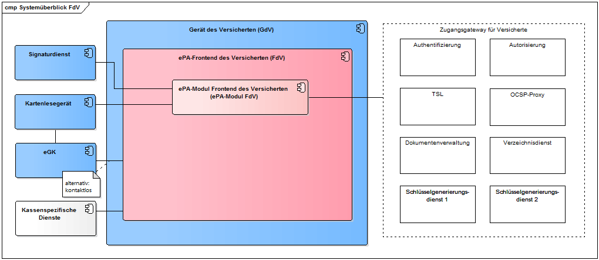
Abbildung 1: Systemüberblick FdV
Der Signaturdienst bietet die Schnittstelle I_Remote_Sign_Operations für Signaturen mittels der alternativen kryptographischen Versichertenidentität an. Siehe [gemSpec_SigD].
In TAB_FdV_102 sind die Schnittstellen des ePA-Aktensystems gelistet, welche durch das ePA-Frontend des Versicherten genutzt werden.
Tabelle 2: TAB_FdV_102 – Schnittstellen des ePA-Aktensystems
| Schnittstelle |
Operationen |
Bemerkung |
|---|---|---|
| I_Authentication_Insurant |
getAuditEvents LoginCreateChallenge LoginCreateToken LogoutToken RenewToken |
Definition in [gemSpec_Authentisierung_Vers] |
| I_Authorization_Insurant |
getAuthorizationKey |
Definition in [gemSpec_Autorisierung] |
| I_Authorization_Management_Insurant |
deleteAuthorizationKey getAuditEvents getAuthorizationList putAuthorizationKey putNotificationInfo getNotificationInfo replaceAuthorizationKey |
Definition in [gemSpec_Autorisierung] |
| I_Account_Management_Insurant |
GetAuditEvents SuspendAccount ResumeAccount |
Definition in [gemSpec_Dokumentenverwaltung] |
| I_Proxy_Directory_Query |
Search |
Definition in [gemSpec_Zugangsgateway_Vers] |
| I_Document_Management_Connect |
CloseContext OpenContext |
Definition in [gemSpec_Dokumentenverwaltung] |
| I_Document_Management_Insurant |
ProvideAndRegisterDocumentSet-b RegistryStoredQuery RemoveMetadata RetrieveDocumentSet RestrictedUpdateDocumentSet |
Definition in [gemSpec_Dokumentenverwaltung] |
| Status-Proxy |
Definition in [gemSpec_Zugangsgateway_Vers] |
|
| TSL-Proxy |
Definition in [gemSpec_Zugangsgateway_Vers] |
|
| Schlüsselgenerierungsdienst Typ 1 und Typ 2 |
Definition in [gemSpec_SGD_ePA] |
Für die Authentisierung mittels eGK und kryptographischer Operationen greift das ePA-Frontend des Versicherten über ein Kartenlesegerät oder über die kontaktlose Schnittstelle auf die eGK zu.
Ein Versicherter kann als Nutzer des FdV das auf der eGK verfügbare Schlüsselmaterial und Zertifikate für die Authentisierung gegenüber dem ePA-Aktensystem und dem Schlüsselgenerierungsdienst verwenden.
Voraussetzung ist die Nutzung einer eGK G2 oder höher, wobei eine eGK G2 nur den RSA-2048-Algorithmenkatalog unterstützt. Eine eGK G2.1 unterstützt den RSA-2048 und ECC-256-Algorithmenkatalog. Die normierenden Organisationen haben das Ende der Zulässigkeit für den RSA-2048 festgelegt. Aus diesem Grund wird bei Nutzung einer eGK G2 der RSA-Algorithmenkatalog und bei eGK einer höheren Generation (d.h. ab eGK G2.1) der ECC-Algorithmenkatalog verwendet.
Zusätzlich zur eGK sieht das FdV die Möglichkeit der Nutzung einer alternativen Authentisierung vor. Sie muss bei der Krankenkasse des Nutzers beantragt werden. Die Authentisierung beim ePA-Aktensystem erfolgt unter Einbeziehung eines Signaturdienstes.
Für die Zertifikate der alternativen Authentisierung wird der ECC-Algorithmenkatalog verwendet.
Im Folgenden wird die Zerlegung des Produkttyps ePA-Frontend des Versicherten dargestellt, welche für die Übersicht der funktionalen Leistungsmerkmale in der vorliegenden Spezifikation nötig ist.
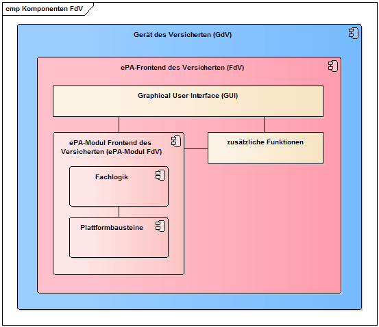
Abbildung 2: Komponenten ePA-Frontend des Versicherten
Tabelle 3: TAB_FdV_167 – Komponenten des FdV
| Komponente |
Verantwortung und Funktionalität |
Spezifiziert in |
|---|---|---|
| Fachlogik |
Die Komponente steuert die Anwendungsfälle entsprechend den fachanwendungsspezifischen Festlegungen. |
Kap. 6.2 |
| Plattformbausteine |
Diese Komponente enthält Plattformbausteine, welche Funktionalitäten der TI-Plattform zur Verfügung stellen:
|
Kap. 6.3 |
Das für die Nutzung des ePA-Frontend des Versicherten notwendige GUI ist Teil des FdV und wird nicht normativ durch die Spezifikation des FdV vorgegeben.
Das FdV kann zusätzliche Funktionen beinhalten, bspw. kassenspezifische Funktionen, welche Schnittstellen zu kassenspezifischen Diensten außerhalb der TI nutzen.
Das ePA-Frontend des Versicherten besitzt eine produktspezifische anwendungsinterne Schnittstelle, welche durch das GUI oder die zusätzlichen Funktionalitäten der integrierenden Anwendung genutzt werden kann, um ePA-Anwendungsfälle auszuführen.
Das ehemalige ePA-Modul FdV wurde als eigenständiges Objekt der Produktzulassung vollständig abgelöst vom ePA-Frontend des Versicherten (also der Gesamt-App). Das sollte durch die Verfahrensbeschreibung und den Aufbau sowie die Bezeichnung des Produkttypsteckbriefs eindeutig und normativ dargestellt sein. Das heißt, prinzipiell richten sich alle Anforderungen des Produkttypsteckbriefs an die gesamte ePA-App bzw. an deren Entwicklungsprozess. Der Nachweis zur Erfüllung der Anforderungen erfolgt dabei im Einzelnen folgendermaßen:
Die Gesamtmenge der Anforderungen, die sich aus der Zusammenführung der Produktzulassung und der Bestätigung der Entwicklungsprozesse des Herstellers ergibt, ist im Wesentlichen unverändert geblieben.
Die Darstellung in der Systemlösung hat keinen normativen Charakter, was den Schnitt der Zulassungsobjekte und deren inneren Aufbau betrifft.
In diesem Kapitel werden übergreifende Anforderungen beschrieben, die sich aus den Themenfeldern Datenschutz und Sicherheit ergeben.
A_16973-01
Das ePA-Frontend des Versicherten MUSS sicherstellen, dass alle ePA-fachanwendungsspezifischen Anteile lokal auf dem Gerät des Versicherten ausgeführt werden. <=
Hinweis: Der auszuführende Code für die ePA-Funktionen des ePA-FdV muss lokal vorliegen und ausgeführt werden, so dass insbesondere alle ePA-Daten (medizinische Daten, sicherheitskritische Daten wie Schlüssel) ausschließlich lokal verarbeitet werden. Zudem erschwert es Administratoren von Servern, auf denen der Code liegen könnte, den Code zu manipulieren.
Dies bedeutet insbesondere, dass eine Auslagerung von ePA-Funktionen auf Webserver nicht erlaubt ist. Dies verhindert jedoch nicht, das ePA-FdV mithilfe von Webtechnologien umzusetzen, um eine Plattformunabhängigkeit zu erreichen. Mithilfe des Frameworks Electron können beispielsweise in HTML, CSS und JavaScript entwickelte Anwendungen lokal unabhängig vom verwendeten Betriebssystem (Windows, MacOS, Linux) ausgeführt werden. Electron bietet auch die Möglichkeit der Nutzung von WebAssembly.
A_15251
Der Hersteller des ePA-Frontends des Versicherten MUSS den Nutzer über die Annahmen und Anforderungen an die Ausführungsumgebung seines Produktes informieren. <=
Die Annahmen und Anforderungen sollen insbesondere Hinweise enthalten, mit welchen Maßnahmen der Nutzer seine Ausführungsumgebung sicher gestalten kann.
A_21235
Der Hersteller des ePA-Frontends des Versicherten MUSS den Nutzer darüber informieren, dass das Erteilen einer Zugriffsberechtigung auf Daten für Leistungserbringer mit einem Speichern dieser Daten in der Umgebung des Leistungserbringers verbunden sein kann. <=
Die medizinischen Dokumente im ePA-Aktensystem sind Ende-zu-Ende verschlüsselt. Dadurch können die Dokumente nicht an zentraler Stelle auf mögliche Schadsoftware geprüft werden. Eine Absicherung gegen mögliche Schadsoftware muss auf dem GdV erfolgen.
A_17723
Der Hersteller des ePA-Frontends des Versicherten MUSS den Nutzer darüber informieren, dass Dokumente Schadsoftware enthalten können und welche Maßnahmen der Nutzer zum Selbstschutz vornehmen kann. <=
A_15252-02
Das ePA-Frontend des Versicherten DARF alle verwendeten symmetrischen und privaten asymmetrischen Schlüssel NICHT persistent speichern, sofern es sich nicht um Authentisierungsmerkmale handelt. <=
Hinweis: Die Anforderung A_20211-* und A_21354 legen die Bedingungen für die persistente Speicherung von Authentisierungsmerkmalen fest.
A_15253-01
Das ePA-Frontend des Versicherten DARF Session-Daten NICHT an Dritte, außer im Rahmen der in den Anwendungsfällen spezifizierten Kommunikation, weitergeben. <=
Der Umfang der Session-Daten ist im Kapitel "" beschrieben. Die für den Versicherten im Aktenkonto bereitgestellten Dokumente gehören nicht zu den Session-Daten.
A_15254-01
Das ePA-Frontend des Versicherten DARF Session-Daten NICHT persistent speichern. <=
A_17625-01
Das ePA-Frontend des Versicherten DARF die PIN der eGK NICHT speichern. <=
A_20211-02
Das ePA-Frontend des Versicherten DARF Authentisierungsmerkmale NICHT speichern, außer wenn
A_21354
Das ePA-FdV für Desktop-Plattformen MUSS sicherstellen, dass Authentisierungsmerkmale ausschließlich unter folgenden Bedingungen gespeichert werden:
Hinweis: Dies ist die analoge Anforderung zu A_20211-* bei mobilen Endgeräten.
Hinweis: Eine explizite Authentifizierung des Versicherten durch das ePA-FdV wird empfohlen.
A_20746
Das ePA Frontend des Versicherten MUSS den Nutzer beim Starten des ePA Frontends des Versicherten am ePA Frontend des Versicherten authentisieren. <=
Hinweis: Für die Authentifizierung des Nutzers am ePA-FdV können die Authentifizierungsfunktionen des Betriebssystems des Endgerätes (z.B. Logscreen-Credentials, Biometrie) genutzt werden. Bei der Authentifizierung der oberen Anforderung ist nicht die Anmeldung an Backendsystemen (z.B. ePA-Aktensystem) gemeint, sondern die Authentifizierung am ePA-Frontend des Versicherten.
A_20747
Das ePA Frontend des Versicherten MUSS den Versicherten bei Erstverwendung des ePA-Frontend des Versicherten darauf hinweisen, dass dieser bei Wahl einer PIN oder eines Passworts zur Freischaltung seines Endgerätes, die bzw. das auch zur Authentisierung am ePA-Frontend des Versicherten genutzt wird, eine sichere PIN bzw. ein sicheres Passwort nutzen sollte inkl. Hinweisen, wie eine sichere PIN bzw. ein sicheres Passwort zu wählen sind. <=
A_15255-01
Das ePA-Frontend des Versicherten MUSS Maßnahmen zum Schutz vor den in der aktuellen Version genannten OWASP-Top-10-Mobile-Risiken [OWASPMobileTop10] umsetzen. <=
Dies betrifft bspw. die folgenden Aspekte:
Für mobile Anwendungen sind OWASP Top Ten Mobile Controls [OWASP TTMC] und OWASP MASVS – L2 + R [OWASP MASVS] zu beachten. Anforderung A_15255-01 ist sowohl für Lösungen auf mobilen als auch Desktop-Plattformen umzusetzen.
Die im Aktenkonto eingestellten Dokumente werden verschlüsselt an das Aktensystem übermittelt und verarbeitet. Sie liegen im Aktensystem nie im Klartext vor. Daher kann das ePA-Aktensystem den Inhalt der Dokumente nicht auf Schadsoftware überprüfen.
A_17660
Das ePA-Frontend des Versicherten MUSS, wenn es Dokumentinhalte direkt anzeigt, Maßnahmen zum Schutz vor Schadsoftware in den Dokumenten umsetzen. <=
Folgende Maßnahmen sind sinnvoll:
A_15256-02
Das ePA-Frontend des Versicherten DARF ein Werbe-Tracking NICHT verwenden. <=
Im Folgenden wird unter Tracking Usability-Tracking sowie Crash-Reporting verstanden.
A_18767
Das ePA-Frontend des Versicherten MUSS sicherstellen, falls es Tracking-Funktionen implementiert, dass in den übermittelten Tracking-Informationen keine Sicherheitsmerkmale enthalten sind. <=
Hinweis: Sicherheitsmerkmale sind die Gerätekennung (DeviceID) und Session-Daten wie z.B. geheime oder private Schlüssel, Authentifizierungs- oder Autorisierungsbestätigungen.
A_18768
Der Hersteller des ePA-Frontend des Versicherten MUSS die Verarbeitung und Auswertung der gesammelten Tracking-Daten des ePA-Frontends des Versicherten selbst durchführen und nicht von einem Drittanbieter durchführen lassen. <=
A_18769
Das ePA-Frontend des Versicherten MUSS sicherstellen, falls es Tracking-Funktionen nutzt, dass die Tracking-Daten keine Daten enthalten, die natürliche Personen direkt identifizieren. <=
Hinweis: Personenbezogene Daten mit direktem Personenbezug sind bspw. Namen von natürlichen Personen, Geräte-IDs, Nutzerkennungen oder ein „Fingerabdruck“ auf Basis von Geräteeigenschaften und Einstellungen.
Tracking Anforderungen für Trackingdaten ohne Einwilligung
A_18770
Das ePA-Frontend des Versicherten MUSS, falls es Tracking-Funktionen ohne Einwilligung des Versicherten nutzt, sicherstellen, dass die Tracking-Daten
Hinweis: Andere Quellen sind z.B. Webtracker, Tracker von anderen Apps oder Trackingmerkmale des Betriebssystems (z.B. Hardware IDs, Network IDs oder Advertising IDs).
A_19061
Das ePA-Frontend des Versicherten MUSS, falls es Tracking-Funktionen ohne Einwilligung des Versicherten nutzt, den Nutzer über das Tracking im ePA-FdV in verständlicher und leicht zugänglicher Form sowie in einer klaren und einfachen Sprache informieren, bevor die Trackingdaten erhoben werden.
<=
Hinweis: Diese Anforderung ist nicht durch einen alleinigen Verweis auf die AGB oder Nutzungsbedingungen des FdVs erfüllbar. Verständliche Form bedeutet eine kurze nicht juristische Erklärung zum Zweck des Trackings. Leicht zugängliche Form bedeutet direkt im FdV.
A_18771
Das ePA-Frontend des Versicherten MUSS, falls es Tracking-Funktionen ohne Einwilligung des Versicherten nutzt, beim Start einer Nutzersession die Nutzersession-ID zufällig neu generieren. <=
Anforderungen zur Einwilligung zum Session-übergreifenden Tracking
A_18772
Das ePA-Frontend des Versicherten MUSS, falls es Tracking-Funktionen implementiert, die Tracking-Daten mehrerer Nutzersessions verknüpfen, technisch sicherstellen, dass diese Tracking-Funktionen bei der Installation des FdV standardmäßig deaktiviert sind und nur nach expliziter Einwilligung durch den Versicherten als Nutzer des FdV aktiviert werden (Opt-in). <=
A_18773
Das ePA-Frontend des Versicherten DARF, falls es Tracking-Funktionen implementiert, die Tracking-Daten mehrerer Nutzersessions verknüpft, die Nutzung des FdVs NICHT an die Aktivierung dieser Trackingfunktion koppeln. <=
Hinweis: Das FdV muss voll-funktional ohne aktiviertes Tracking nutzbar sein.
A_18774
Das ePA-Frontend des Versicherten MUSS, falls es Tracking-Funktionen implementiert, die Tracking-Daten mehrerer Nutzersessions verknüpfen, den Versicherten vor der Einwilligung in die Aktivierung dieser Tracking-Funktionen in verständlicher und leicht zugänglicher Form sowie in einer klaren und einfachen Sprache folgende Einwilligungsinformationen anzeigen:
Hinweis: Diese Anforderung ist nicht durch einen alleinigen Verweis auf die AGB oder Nutzungsbedingungen des FdVs erfüllbar. Verständliche Form bedeutet eine kurze nicht juristische Erklärung zum Zweck des Trackings. Leicht zugängliche Form bedeutet direkt im FdV.
A_18775
Das ePA-Frontend des Versicherten MUSS, falls es Tracking-Funktionen implementiert, die Tracking-Daten mehrerer Nutzersessions verknüpfen, sicherstellen, dass die Einwilligung des Nutzers in die Aktivierung der Tracking-Funktionen erst erfolgt, wenn der Nutzer bestätigt, die angezeigten Einwilligungsinformationen gelesen zu haben. <=
A_18776
Das ePA-Frontend des Versicherten MUSS, falls es Tracking-Funktionen implementiert, die Tracking-Daten mehrerer Nutzersessions verknüpfen, technisch sicherstellen, dass aktivierte Tracking-Funktionen jederzeit durch den Nutzer des FdVs deaktiviert werden können. <=
A_18777
Das ePA-Frontend des Versicherten SOLL, falls es Tracking-Funktionen implementiert, die Tracking-Daten mehrerer Nutzersessions verknüpfen, technisch sicherstellen, dass eine neue Generierung der pseudonymen Identifier jederzeit durch den Nutzer des FdVs veranlasst werden kann. <=
A_18778
Das ePA-Frontend des Versicherten MUSS, falls es Tracking-Funktionen implementiert, die Tracking-Daten mehrerer Nutzersessions verknüpfen, technisch sicherstellen, dass der Benutzer der App maximal einmal eine Abfrage zur Einwilligung des Trackings angezeigt bekommt. <=
Hinweis: Wenn der Benutzer seine Einwilligung zum Tracking nicht erteilt, darf das FdV den Nutzer nicht solange nach seiner Einwilligung fragen, bis der Nutzer diese erteilt.
A_15257-01
Das ePA-Frontend des Versicherten MUSS sicherstellen, dass die von ihm erzeugten Schlüssel die Qualität nach [gemSpec_Krypt#GS-A_4368] besitzen. <=
Wenn die eGK zur Verfügung steht, dann kann diese für das Erzeugen von Schlüsseln in der geforderten Qualität (Kartenkommando GET RANDOM) genutzt werden. Ist das optionale Kartenkommando GET RANDOM für die eGK nicht verfügbar (Fehlermeldung der Karte), dann kann das Kartenkommando GET CHALLENGE (PL_TUC_GET_CHALLENGE) der eGK genutzt werden. GET RANDOM und GET CHALLENGE liefern einen ausreichend guten Zufall, der die Forderungen aus [gemSpec_Krypt#GS-A_4368] erfüllt.
Wenn die eGK nicht zur Verfügung steht, dann können Informationen von zusätzliche Quellen (Internet, Sensoren des GdV) zusammengeführt werden, um die geforderte Entropie zu erreichen.
A_15258-01
Das ePA-Frontend des Versicherten DARF dynamische Inhalte von Drittanbietern NICHT herunterladen oder verwenden. <=
A_15259-01
Das ePA-Frontend des Versicherten MUSS bei Konfigurationsmöglichkeiten die sichere, datenschutzfreundlichere Option vorauswählen. <=
Bspw. ist ein Opt-In anstelle eines Opt-Out-Verfahrens anzuwenden.
A_15261-01
Das ePA-Frontend des Versicherten MUSS Maßnahmen umsetzen, um die Auswirkung von unentdeckten Schwachstellen in benutzten Software-Bibliotheken zu minimieren. <=
Hinweis: Beispielmaßnahmen sind in [OWASP Proactive Control#C2] zu finden. Das gewählte Verfahren muss die gleiche Wirksamkeit aufweisen, wie die Kapselung gemäß [OWASP Proactive Control#C2 Punkt 4].
Das ePA-Frontend des Versicherten bietet nur Funktionalitäten an, welche sich aus den Anwendungsfällen der Fachanwendung ePA ergeben.
Zusätzliche Funktionalitäten können durch das FdV angeboten werden. Folgende Anforderungen gelten für die Abgrenzung der zusätzlichen Funktionalitäten zu denen der Fachanwendung ePA.
A_16438
Das ePA-Frontend des Versicherten MUSS sicherstellen, falls es zusätzliche Funktionalitäten enthält, dass der Nutzer diese zusätzlichen Funktionalitäten von den Funktionalitäten für die ePA unterscheiden kann. <=
Die Information, welche Funktionalitäten zusätzlich zu den Funktionen für die ePA enthalten und damit nicht Gegenstand der Zulassung durch die gematik sind, kann im Handbuch oder den Informationen zur Zustimmung gemäß A_16439 beschrieben werden.
A_18401
Das ePA-Frontend des Versicherten MUSS sicherstellen, dass der Nutzer dem Verarbeiten der ePA-Daten in zusätzlichen Funktionalitäten des ePA-Frontends des Versicherten bezüglich Umfang, Art und Dauer der Verarbeitung vor dem Zugriff der Zusatzfunktionen auf die ePA-Daten zustimmen muss. <=
A_18402
Das ePA-Frontend des Versicherten MUSS sicherstellen, dass die Zustimmung zur Verarbeitung der ePA-Daten in zusätzlichen Funktionalitäten des ePA-Frontends des Versicherten optional (Opt-In) und jederzeit widerrufbar ist. <=
A_16439
Das ePA-Frontend des Versicherten MUSS sicherstellen, dass Daten, die aus der ePA ins FdV geladen werden, nur mit Zustimmung des Versicherten unter Nutzung von expliziten Opt-in-Lösungen weitergeleitet werden können, wobei sich das Opt-In nur genau auf die Weiterleitung beziehen und nicht mit anderen Zustimmungen kombiniert werden darf. <=
Die in A_16439 geforderte Zustimmung kann einmalig durch den Versicherten erteilt werden und bis auf Widerruf des Versicherten für alle Datenweiterleitungen, die von dem Versicherten veranlasst werden, gelten. Das FdV kann dabei die Möglichkeit einer expliziten Opt-in-Lösung mit Widerrufsrecht oder ein anlassbezogenes Zustimmungsverfahren oder eine Wahlmöglichkeit beider Verfahren vorsehen.
A_20721
Das ePA-Frontend des Versicherten MUSS sicherstellen, dass Daten, die aus der ePA ins FdV geladen werden, nur an von Krankenkassen angebotene Anwendungen weitergeleitet werden, falls der Versicherte zuvor gegenüber der Krankenkasse in die Verarbeitung dieser Daten eingewilligt hat. <=
Hinweis: Die A_20721 setzt die Forderung des § 345 Abs. 1 SGB V um. Die Einwilligung gegenüber der Krankenkasse kann elektronisch erfolgen. Dies betrifft insbesondere auch die Übermittlung des Nachweises, mit dem die Krankenkasse die Einwilligung des Versicherten in die Verarbeitung der Daten nachweisen kann (vgl. Art. 7 Abs. 1 DSGVO).
A_16440
Das ePA-Frontend des Versicherten MUSS sicherstellen, dass der Versicherte vor der Zustimmung zur Nutzung von aus der ePA ins FdV geladenen Daten durch Anwendungen oder Apps im oder außerhalb des Frontends in verständlicher Weise darüber informiert wird, welche Daten, wann und an wen weitergeleitet werden und zu welchem Zwecke die Anwendungen die Daten verarbeiten. <=
A_16441
Das ePA-Frontend des Versicherten MUSS sicherstellen, dass der Versicherte eine Weiterleitung der Daten im Nachhinein nachvollziehen kann (z.B. durch Protokollierung). <=
A_19110
Der Hersteller des ePA-Frontend des Versicherten MUSS bei Bekanntwerden einer erheblichen Störung (gemäß §291b Abs.6 S.3 SGB V) in einer Version des ePA-Frontend des Versicherten die Nutzung dieser Version unverzüglich unterbinden.
<=
A_21342
Das ePA-FdV MUSS den Versicherten in einem Hinweistext auf die Gefahren hinweisen, die bei einem Betrieb des ePA-FdV auf Hardware, die nicht unter der Kontrolle des Versicherten steht, gegeben sind. <=
Hinweis: Im Gegensatz zu Betriebssystem für Smartphones und Tablets wie etwa Android und iOS sind Betriebssysteme für stationäre Geräte wie etwa PCs durchaus im öffentlichen Raum verfügbar. So läuft etwa auf den meisten Geräten in Internet-Cafes Windows. Würde hier das ePA-FdV ausgeführt werden und der Versicherte sich Dokumente aus seiner Akte herunterladen, dann müsste der Versicherte dafür sorgen, dass keine Daten von ihm auf der Hardware verbleiben, wenn er den Zugriff auf die Hardware beendet. Es wird empfohlen, die Nutzung des ePA-FdV auf öffentlich zugänglicher Hardware zu unterlassen.
Hinweis: Die einmalige Anzeige des Hinweises mit Bestätigung pro Versicherten ist ausreichend. Es muss dabei sichergestellt sein, dass jedem Nutzer (Mehrbenutzerbetrieb) dieser Hinweis zur Bestätigung angezeigt wird. Dieses könnte etwa durch Anzeige vor der Authentisierung gegenüber dem ePA-FdV erfolgen.
A_21343
Der Hersteller des ePA-FdV MUSS technisch sicherstellen, dass nur im Rahmen eines Produktgutachtens begutachteter Code ausgeführt wird oder Code-Änderungen nach Vorgaben der gematik durch den Hersteller des ePA-FdV als nicht zulassungsrelevant bewertet wurden. <=
Hinweis: Die Anforderung soll das Einschleusen von Schadcode verhindern. Dies kann beispielsweise durch Signieren des ePA-FdV durch den Hersteller erfolgen, um Manipulationen am ePA-FdV vor der Ausführung erkennen zu können. Das Verbot des dynamischen Nachladens von ungeprüftem Code soll insbesondere auch sicherstellen, dass zum Zeitpunkt der Prüfung des ePA-FdV durch den Produktgutachter der gesamte Anwendungscode vorliegt und dieser nicht später durch ungeprüften Code ersetzt bzw. ergänzt werden kann.
Im Zulassungsverfahren für das ePA-FdV ist festgelegt, wann Änderungen durch die gematik als zulassungsrelevant betrachtet werden. Zulassungsrelevante Änderungen sind z.B. Änderungen von Sicherheitsfunktionen oder deren Implementierung (z.B. Wechsel der TLS-Implementierung). Nicht-zulassungsrelevante Änderungen sind z.B. Sicherheitsupdates für von anderen Herstellern bezogenen Software-Komponenten der Plattform (z.B. Bibliotheken), die aus einer vertrauenswürdigen Quelle bezogen werden.
A_21344
Der Hersteller des ePA-FdV MUSS die Software-Komponenten des ePA-FdV, die nicht vom Hersteller des ePA-FdV selbst entwickelt oder zur Entwicklung beauftragt werden (z.B. TLS-Bibliotheken), aus bekannten und vertrauenswürdigen Quellen beziehen. <=
A_21355
Das ePA-FdV DARF Zusatzfunktionen des FdV (d.h. kassenspezifische Dienste) NICHT auf den Geräteidentifikator (die von der Autorisierung übermittelte Zufallszahl bei der Gerätebindung) zugreifen lassen. <=
A_21356
Das ePA-FdV MUSS sicherstellen, dass die Speicherung des Geräteidentifikators (die von der Autorisierung übermittelte Zufallszahl bei der Gerätebindung) ausschließlich verschlüsselt erfolgt. <=
A_21357
Das ePA-FdV MUSS sicherstellen, dass auf den verschlüsselten gespeicherten Geräteidentifikator ausschließlich nach erfolgreicher Authentifizierung des Versicherten beim Start des ePA-FdV zugegriffen werden kann. <=
Hinweis: Nach A_20746 muss sich der Nutzer beim Starten des ePA-FdV am ePA-FdV authentisieren.
A_21350
Der Hersteller des ePA-FdV MUSS Versicherte über die vertrauenswürdigen Quellen informieren, von denen Versicherte das ePA-FdV beziehen können und wie sie die Vertrauenswürdigkeit der Quelle erkennen können. <=
Hinweis: Krankenkassen (als Anbieter eines ePA-Aktensystems) können zur Umsetzung dieser Anforderung z.B. den Versicherten hierzu entsprechendes Informationsmaterial zur Verfügung stellen, wo die Download-Punkte aufgelistet sind.
A_21351
Der Hersteller des ePA-FdV MUSS sicherstellen, dass der Versicherte bei Erstbezug eines ePA-FdV die Authentizität der vertrauenswürdigen Bezugsquelle verifizieren kann. <=
Hinweis: Beim Erstbezug des ePA-FdV kann die Prüfung der Authentizität der Quelle noch nicht durch das ePA-FdV selbst erfolgen. Dies kann z.B. über eine TLS-Server-Authentifizierung der Bezugsquelle erreicht werden. Bei ePA-FdVs in den Stores der mobilen Plattformen kann der Versicherte die Vertrauenswürdigkeit daran erkennen, dass er den offiziellen Store nutzt. Auch unter Windows und Mac OS und Linux/Debian gibt es einen offiziellen Store.
A_21352
Das ePA-FdV MUSS sicherstellen, dass Updates nur von bekannten und vertrauenswürdigen Quellen bezogen werden, nach dem die Authentizität der Quelle technisch erfolgreich verifiziert wurde. <=
A_21475
Das ePA-FdV MUSS sicherstellen, dass Zugriffe mit dem ePA-FdV auf das Nationale Gesundheitsportal erst erfolgen können, nachdem der Versicherte dem zugestimmt hat und nicht mehr erfolgen können, nachdem der Versicherte eine zuvor gegebene Zustimmung zurückgenommen hat. <=
Hinweis: Die Zustimmung kann einmal eingeholt werden und muss nicht bei jedem Zugriff wiederholt erfolgen.
A_21476
Das ePA-FdV MUSS den Versicherten vor Nutzung des Nationalen Gesundheitsportals mindestens informieren über
A_21477
Das ePA-FdV MUSS sicherstellen, dass auf das Nationale Gesundheitsportal ausschließlich zugegriffen wird, nachdem die Authentizität des Nationalen Gesundheitsportals vom ePA-FdV erfolgreich geprüft wurde und eine vertrauliche und integritätsgeschützte Verbindung zwischen ePA-FdV und Nationalem Gesundheitsportal aufgebaut wurde. <=
A_21700
Das ePA-FdV MUSS sicherstellen, dass bei Zugriffen auf das Nationale Gesundheitsportal keine personenbezogenen Daten oder Einstellungen an das Nationale Gesundheitsportal übermittelt oder dem Nationalen Gesundheitsportal Zugriffe auf diese Daten gewährt werden, außer sie sind für die technische Verbindung vom ePA-FdV zum Nationalen Gesundheitsportal zwingend notwendig. <=
A_21795
Das ePA-FdV DARF Dokumente des Versicherten, die nicht durch den Versicherten für die Verwendung zu Forschungszwecken freigegeben sind, NICHT an das Forschungsdatenzentrum übermitteln. <=
A_21802
Das ePA-FdV DARF Originaldokumente (nicht pseudonymisierte Dokumente) NICHT an das Forschungsdatenzentrum oder die Vertrauensstelle übermitteln. <=
A_21857
Das ePA-FdV des Versicherten MUSS sicherstellen, dass ausschließlich integre und authentische Pseudonymisierungsschemata genutzt werden. <=
A_22822
Das ePA-FdV MUSS sicherstellen, dass keine Metadaten zu Dokumenten des Versicherten an das Forschungsdatenzentrum übertragen werden. <=
A_19143
Falls der Hersteller des ePA-Frontend des Versicherten entscheidet, eine CC-Zertifizierung statt eines Produktgutachtens durchzuführen, MUSS der Hersteller des ePA-Frontend des Versicherten bei der Einreichung eines CC-Zertifizierungsantrags sein Security Target Dokument der gematik zur Verfügung stellen. <=
A_19144
Falls der Hersteller des ePA-Frontend des Versicherten entscheidet, eine CC-Zertifizierung statt eines Produktgutachtens durchzuführen, MUSS der Hersteller des ePA-Frontend des Versicherten
Die gematik kann für die Überprüfung der Umsetzung der Anforderungen zur sicherheitstechnischen Eignung Audits beim ePA- FdV durchführen. Für die Hersteller gelten Mitwirkungspflichten.
A_18254-01
Der Hersteller des ePA-Frontends des Versicherten MUSS zusichern, dass die gematik oder ein von ihr zur Geheimhaltung verpflichteter Bevollmächtigter berechtigt sind,
A_18211-01
Der Hersteller des ePA-Frontends des Versicherten MUSS Sicherheitsprüfungen (z.B. Pentest) der gematik unterstützen. <=
Hinweis: Unterstützen bedeutet beispielsweise das Bereitstellen einer Release oder Beta-Version des Produkts, das Bereitstellen eines Testsystems inkl. Test Accounts, kleine Anpassungen des Produktes, die eine Beschleunigung des Tests ermöglichen (z.B. Entfernung von Certificate Pinning, Code Obfuscation) und Unterstützung bei Rückfragen.
A_18246-01
Der Hersteller des ePA-Frontends des Versicherten MUSS zusichern, dass die gematik oder ein von ihr zur Geheimhaltung verpflichteter Bevollmächtigter berechtigt sind,
Für die Nutzung der Schnittstellen werden u.a. die folgenden Standards verwendet.
A_15268-01
Das ePA-Frontend des Versicherten MUSS SOAP-Nachrichten gemäß den Vorgaben aus WS-I Basic Profile V2.0 [WSIBP] unterstützen. <=
A_15269-02
Das ePA-Frontend des Versicherten MUSS für die Authentisierung den Standard [WS-Trust1.3] unterstützen.
<=
A_15270-01
Das ePA-Frontend des Versicherten MUSS für die Abfrage des Verzeichnisdienstes die Standard Directory Services Markup Language v2.0 (DSMLv2) unterstützen. <=
Informationen zu DMSLv2 sind unter https://www.oasis-open.org/standards#dsmlv2 verfügbar.
Die dokumentenbezogenen Schnittstellen des ePA-Aktensystems und die Verarbeitungslogik des ePA-Frontend des Versicherten basieren auf Transaktionen des IHE ITI Technical Frameworks (IHE ITI TF). Die IHE ITI-Implementierungsstrategie ist in [gemSpec_DM_ePA] beschrieben.
Das ePA-Frontend des Versicherten nutzt die folgenden Integrationsprofile des IHE ITI TF:
Die folgende Tabelle bietet einen Überblick über die durch das ePA-Frontend des Versicherten umzusetzenden IHE ITI-Akteure und assoziierte Transaktionen. Siehe auch [gemSpec_DM_ePA#Abbildung Überblick über IHE ITI-Akteure und assoziierte Transaktionen].
Tabelle 4: TAB_FdV_103 – IHE Akteure und Transaktionen
| Aktion |
Profile |
IHE-Akteur |
Transaktion |
Referenz |
|---|---|---|---|---|
| Suchanfrage auf Metadaten |
XDS.b |
Document Consumer |
Registry Stored Query [ITI-18] |
[IHE-ITI-TF2a]#3.18 |
| Herunterladen von Dokumenten |
XDS.b |
Document Consumer |
Retrieve Document Set [ITI-43] |
[IHE-ITI-TF2b]#3.43 |
| Einstellen von Dokumenten |
XDS.b |
Document Source |
Provide & Register Document Set-b [ITI-41] |
[IHE-ITI-TF2b]#3.41 |
| Löschen von Dokumenten |
RMD |
Document Administrator |
Remove Metadata [ITI-62] |
[IHE-ITI-RMD]#3.62 |
| AuthenticationAssertion übertragen |
XUA |
X-Service User |
Provide X-User Assertion [ITI-40] |
[IHE-ITI-TF2b]#3.40 |
| Policy Document erstellen |
APPC |
APPC Content Creator |
- |
[IHE-ITI-APPC] |
| Interpretieren von Policy Documents |
APPC |
APPC Content Consumer |
- |
[IHE-ITI-APPC] |
XDS-Option „Document Replacement“ - Ersetzen eines existierenden Dokuments
Ein eingestelltes Dokument kann auch ein existierendes Dokument ersetzen. Dies erfolgt durch Verwendung der „Document Replacement“-Option (XDS.b Document Source). Dazu wird das gleiche Dokument (mit geändertem Inhalt und nebst ggf. geänderten DocumentEntry-Metadaten) erneut hochgeladen. Das neue Dokument erhält den Status „Approved“. Das alte Dokument geht in den Status „Deprecated“. Beide Dokumente werden über eine „Replace“-Association miteinander verbunden, sodass nach dem Einstellen erkennbar ist, dass das neue Dokument das alte ersetzt. Lädt man erneut eine neue Fassung hoch, erhält man zwei Dokumente im Status "Deprecated" und das neueste im Status "Approved".
Alle alten Dokumente (Status "Deprecated") können nach wie vor gefunden und heruntergeladen werden. Einige Suchen erlauben das Filtern nach Status bzw. zeigen per Default auch nur Dokumente im Status „Approved“ an.
Eingestellt (im "Submission Set") wird zum einen das neue Dokument inkl. Metadaten und zum anderen eine Association vom Typ urn:ihe:iti:2007:AssociationType:RPLC, die auf das neue Dokument und das zu ersetzende, bestehende Dokument verweist und so die "Replace"-Beziehung herstellt.
XDS-Option "Folder Management" - Verwendung von Ordnern
Ordner können durch die Option "Folder Management" (XDS.b Document Source) verwendet werden. Bei der kategorienbasierten Berechtigungsverwaltung werden vom Aktensystem definierte Ordner genutzt. Nur für dynamische Dokumentensammlungen (z. B. Kinderuntersuchungsheft und Mutterpass) werden Ordner durch Primärsysteme erstellt und vom Frontend ggf. ausgewertet. Durch die Assoziation eines Dokumentes zu einem dieser Ordner wird das Dokument dem Ordner der entsprechenden Dokumentenkategorie bzw. Dokumentensammlung zugeordnet.
Die XDS-Option "Folder Management" ist nur für den geschilderten Verwendungszweck zugelassen; ein selbständiges Anlegen oder Bearbeiten von Ordnern und ihrer Metadaten ist durch das FdV nicht möglich. Das Entfernen von Dokumenten aus einem Ordner durch Löschen der entsprechenden Assoziation ist nicht vorgesehen, da dies die direkte Zuordnung gemäß einer Zugriffsunterbindungsregel verletzten könnte.
Weitere Festlegungen
Weitere übergreifenden Einschränkungen von IHE ITI-Transaktionen sowie Festlegungen spezieller Umsetzungsvorgaben bzgl. einzelner Transaktionen sind in [gemSpec_DM_ePA] und [gemSpec_Dokumentenverwaltung] beschrieben.
Wenn im Rahmen der IHE Interface-Beschreibung der Begriff "Patient" verwendet wird, ist im Rahmen der vorliegenden Spezifikation darunter der Aktenkontoinhaber zu verstehen.
Im ePA-Frontend des Versicherten werden fachliche Dokumente (Versichertendokumente) und technische Dokumente (Policy Documents) unterschieden.
Die Fachanwendung ePA verwendet das APPC-Profil für die Durchsetzung von Zugriffsregeln (Autorisierung) auf Dokumente. Die Zugriffsregeln werden gemäß APPC in Policy Documents beschrieben und als technische Dokumente im Aktenkonto des Versicherten hinterlegt.
Für jeden Vertreter, jede berechtigte Leistungserbringerinstitution (LEI), den berechtigten Kostenträger (KTR) und jede berechtigte Digitale Gesundheitsanwendung (DiGA) wird je ein Policy Document im Aktenkonto verwaltet.
Bei der Neuvergabe einer Berechtigung für Vertreter, LEI, DiGA oder KTR erstellt das ePA-Frontend des Versicherten ein neues Policy Document und lädt es in das Aktenkonto hoch. Bei der Änderung einer Berechtigung (bspw. Verlängerung der Berechtigungsdauer) lädt das ePA-Frontend des Versicherten das Policy Document aus der ePA-Dokumentenverwaltung herunter (IHE-Akteur Content Consumer), bearbeitet es und lädt die veränderte Fassung als neu zu registrierendes Policy Document in die ePA-Dokumentenverwaltung hoch (IHE APPC-Akteur Content Creator). Beim Hochladen einer veränderten Version eines Policy Document wird die vorherige Version infolge des Hochladens des neuen Policy Document automatisch durch die ePA-Dokumentenverwaltung gelöscht. Beim Entzug einer Berechtigung löscht das ePA-Frontend des Versicherten das entsprechende Policy Document aus der ePA-Dokumentenverwaltung.
Die ePA-Dokumentenverwaltung wertet die in den Policy Documents hinterlegten Zugriffsregeln aus. Es entscheidet unter Berücksichtigung der Dokumentenmetadaten, ob der anfragende Nutzer den Dokumentenzugriff (bspw. Einstellen von Dokumenten) durchführen darf oder ob der Dokumentenzugriff ablehnt wird. Das ePA-Frontend des Versicherten verarbeitet Policy Documents nur intern.
A_15271-02
Das ePA-Frontend des Versicherten DARF Policy Documents an der Schnittstelle zum FdV NICHT herausgeben. <=
Für die XDS-Metadaten eines Policy Documents gelten die Nutzungsvorgaben aus [gemSpec_DM_ePA#A_14961-*].
A_15673-03
Das ePA-Frontend des Versicherten MUSS für eine zu berechtigende LEI ein Policy Document unter Berücksichtigung der Anforderungen an deren Inhalt in A_15442-* erstellen. <=
A_15674-03
Das ePA-Frontend des Versicherten MUSS für einen zu berechtigenden Vertreter ein Policy Document unter Berücksichtigung der Anforderungen an deren Inhalt in A_15440-* erstellen. <=
A_17232-03
Das ePA-Frontend des Versicherten MUSS für einen zu berechtigenden Kostenträger ein Policy Document unter Berücksichtigung der Anforderungen an deren Inhalt in A_17460-* erstellen. <=
A_22995
Das ePA-Frontend des Versicherten MUSS für eine zu berechtigende DiGA ein Policy Document unter Berücksichtigung der Anforderungen an deren Inhalt in A_22705-* erstellen. <=
Die Benutzeroberfläche, welche durch den Versicherten genutzt wird, um ePA-Anwendungsfälle auszuführen, ist Teil des FdV.
Die folgenden Ausführungen zu Anforderungen an die visuelle Darstellung und Benutzerführung sind informativ und nicht normativ.
Für die visuelle Darstellung der Inhalte ist eine grafische Benutzeroberfläche erforderlich, welche die Daten des Versicherten strukturiert und übersichtlich darstellt.
Das FdV soll eine einheitlich gestaltete Oberfläche zur Benutzerführung besitzen, um die Übersichtlichkeit in allen Anwendungsfällen für den Nutzer zu gewährleisten. Es soll Menüfunktionen, Texte und andere Anzeigen eindeutig, verständlich und widerspruchsfrei benennen bzw. darstellen.
Das FdV soll es dem Nutzer ermöglichen, zu jeder Zeit zu erkennen, in welchem ePA-Anwendungsfall sich die Applikation gerade befindet.
A_20968-02
Das ePA-Frontend des Versicherten MUSS den Hintergrundmodus bei der Umschlüsselung, soweit es das Betriebssystem zulässt, unterstützen. <=
Hinweis:
Ist durch das Betriebssystem keine sichere und ausreichende Unterstützung des Hintergrundmodus möglich, kann die Ausführung im Vordergrund erfolgen.
A_20969
Das ePA-Frontend des Versicherten MUSS die notwendigen Permissions besitzen, die für eine fehlerfreie Funktion im Hintergrundmodus notwendig sind. <=
Sofern der Benutzer diese Permissions nicht schon bei der Installation freigegeben hat, ist die Freigabe beim Beginn längerer Aktionen einzuholen und zu aktivieren. Insbesondere ist dies bei der Umschlüsselung zu beachten, da sie länger dauern kann.
A_20970
Das ePA-Frontend des Versicherten MUSS den Nutzer vor dem Beginn längerer Aktionen darauf hinweisen, dass die Aktion im Hintergrund weiter läuft und die Anwendung während dieser Zeit nicht beendet oder deinstalliert und dass das Gerät während dieser Zeit nicht ausgeschaltet oder rebootet werden darf. <=
Die Bedienung des FdV soll für den Nutzer intuitiv gestaltet werden. Das FdV soll dem Nutzer alle anzeigbaren Texte mindestens in der Sprache Deutsch bereitstellen.
DIN Normen und Verordnungen zur Beachtung:
Eine hohe Akzeptanz der Benutzerfreundlichkeit oder Usability wird durch eine einfache, selbsterklärende Bedienung der Oberfläche erreicht, die sich an gängigen Mustern des App-Designs orientiert.
Hierfür ist es auch erforderlich, die Erwartungshaltung der Zielgruppe zu kennen und zu berücksichtigen (z.B. auch Menschen mit körperlichen oder geistigen Einschränkungen).
Die Akzeptanz des Frontends für den Versicherten hängt in großem Maße von folgenden Faktoren ab:
| Die Entwicklung einer barrierearmen Anwendung unterliegt einem sich fortlaufend weiterentwickelnden Prozess. Die Umsetzung aller Anforderungen kann nicht mit der Ersteinführung der Anwendung sichergestellt werden. |
Zusätzlich zu den in diesem Kapitel aufgeführten Anforderungen zur Benutzerführung sollen auch die in der ISO 9241 aufgeführten Qualitätsrichtlinien zur Sicherstellung der Ergonomie interaktiver Systeme und Anforderungen aus der Verordnung zur Schaffung barrierefreier Informationstechnik nach dem Behindertengleichstellungsgesetz (Barrierefreie-Informationstechnik-Verordnung – BITV 2.0) beachtet werden.
DIN EN ISO 9241 – Teile mit Bezug zur Software-Ergonomie
Insbesondere sollen die nachfolgend aufgeführten Teile der ISO 9241 berücksichtigt werden:
Für die Entwicklung eines barrierefreien Frontend des Versicherten ist insbesondere die Verordnung zur barrierefreien Gestaltung von Informationstechnik zu beachten.
BITV 2.0 - Barrierefreie Informationstechnik-Verordnung
Hinweis: Die Versionsnummern der aufgeführten Normen und Richtlinien spiegeln den Stand zum Zeitpunkt der Erstellung dieses Dokumentes wider.
Die seit 2018 bestehende umfassende Forderung nach Umsetzung von Barrierefreiheit in der Informationstechnik erwächst aus der EU Richtlinie 2016/2102 zur „Barrierefreiheit von Webseiten und mobiler Anwendungen öffentlicher Stellen“. Diese Richtlinie musste im Jahr 2018 in Bundes- und Landesrecht übertragen werden. – Diese Gesetze verweisen jeweils auf die Barrierefreie Informationstechnik-Verordnung mit Ausgabe vom 21. Mai 2019 (BITV 2.0).
Zur Erfüllung der BITV 2.0 § 3 Abs. 2 ist die durch die Veröffentlichung im europäischen Amtsblatt harmonisierte EN 301549 „Barrierefreiheitsanforderungen für IKT-Produkte und -Dienstleistungen“ (V 2.1.2 von 2018-08) anzuwenden. Diese liegt in der Fassung von 2020-02 als DIN EN 301549 als deutsche Übersetzung vor. Die DIN EN 301549 ist eine Beschaffungsnorm. Die darin aufgeführten und für den Anwendungsfall des FdV des E-Rezepts anzuwendenden Erfolgskriterien sind in Kapitel 9 (Web mit 50 Erfolgskriterien), Kapitel 10 (Dokumente mit 46 Erfolgskriterien) und Kapitel 11 (Nicht webbasierte Software mit 44 Erfolgskriterien) aufgeführt. Sie entsprechen den Erfolgskriterien von Level AA der 2.1. WCAG 2.1 (Web Content Accessibility Guidelines).
Der sachliche Geltungsbereich der BITV 2.0 umfasst folgende relevanten Anwendungsbereiche für diese Spezifikation:
Folgende Gestaltungsmerkmale der Anwendungen stellen die Barrierefreiheit sicher:
In den genannten Normen und Standards werden nebeneinander die Belange von in der Handmotorik eingeschränkter, blinder, sehbehinderter, gehörloser, schwerhöriger, geistig und lernbehinderter Menschen berücksichtigt.
Nach BITV 2.0 müssen Dokumente, die über dem FdV angezeigt werden, die gleichen Anforderungen an die Barrierefreiheit erfüllen, wie sie an die Anwendung gestellt werden. Sämtliche bereitgestellten Dokumente müssen als barrierefreie Formate angeboten werden, die mit dem Screenreader lesbar und navigierbar sind. Hierbei müssen die behinderungsspezifischen Standardsoftwares zur Herstellung von Zugänglichkeit berücksichtigt werden.
Allgemeine Anforderungen an die Benutzerfreundlichkeit
A_20092
Die Bedienung des ePA-Frontend des Versicherten SOLL für den Nutzer intuitiv gestaltet werden. <=
A_20094
Das ePA-Frontend des Versicherten SOLL dem Nutzer alle anzeigbaren Texte in der Sprache Deutsch bereitstellen. <=
Zusätzliche Sprachen können unterstützt werden.
A_20095
Das ePA-Frontend des Versicherten MUSS es dem Nutzer ermöglichen, Anwendungsfälle auch vor dem Ende der Verarbeitung jederzeit abzubrechen. <=
A_20096
Das ePA-Frontend des Versicherten SOLL dem Nutzer anzeigen, welche Arten von Dokumentenzugriffen und Verwaltungsfunktionen ausgeführt werden können. <=
A_20097
Das ePA-Frontend des Versicherten MUSS für die Inhalte und Anwendungsfälle eindeutige und verständliche Bezeichnungen verwenden. <=
Bezeichnungen sollen nach Möglichkeit vollständig ausgeschrieben sein, Abkürzungen sind zu vermeiden.
A_20098
Das ePA-Frontend des Versicherten SOLL sicherstellen, dass bereitgestellte Inhalte maschinenlesbar und navigierbar sind, um dem Nutzer eine barrierefreie Bedienung zu ermöglichen. <=
A_20099
Das ePA-Frontend des Versicherten SOLL gerätespezifische Funktionalitäten (z.B. Lagebestimmung, Kamerafunktion, Multi-Touch-Gesten) sinnvoll nutzen und unterstützen. <=
A_20100
Das ePA-Frontend des Versicherten SOLL die Schnittstellen für die Unterstützung der barrierefreien Bedienungsmöglichkeit, welche vom Betriebssystem zur Verfügung gestellt werden, nutzen. <=
A_20101
Das ePA-Frontend des Versicherten SOLL die Bedienhilfen der verwendeten Betriebssysteme zur barrierefreien Nutzung verwenden. <=
A_20102
Das ePA-Frontend des Versicherten SOLL für das GUI ein Kontrastverhältnis verwenden, welches unter verschiedenen Bedingungen eine optimale Ablesbarkeit gewährleistet. <=
A_20103
Das ePA-Frontend des Versicherten SOLL dem Nutzer Hinweise anzeigen, die den Zweck sowie den inhaltlichen Ablauf eines Anwendungsfalls betreffen, um dem Nutzer die Bedienung zu vereinfachen. <=
Um dem Nutzer die Bedienung zu vereinfachen, sollen ihm Hinweise angezeigt werden, die den Zweck sowie den inhaltlichen Ablauf eines Anwendungsfalls betreffen.
Ist ein Anwendungsfall durchgeführt worden, muss das FdV das Ergebnis für den Versicherten klar verständlich anzeigen, z. B. "Die Vertretung wurde erfolgreich eingerichtet.".
Ist ein Anwendungsfall durch den Nutzer abgebrochen worden oder technisch nicht durchführbar, muss der Nutzer ebenfalls einen für ihn verständlichen Hinweis erhalten. In jedem Fall muss das Ergebnis für den Nutzer klar erkennbar sein.
Ist ein Anwendungsfall durch den Versicherten abgebrochen worden oder technisch nicht durchführbar, muss der Versicherte ebenfalls einen für ihn verständlichen Hinweis erhalten. In jedem Fall muss das Ergebnis für den Versicherten klar erkennbar sein.
Für die Anzeige in Fehlerfällen siehe Kapitel "".
Zur Sicherstellung, dass keine Daten versehentlich gelöscht werden, soll der Nutzer nach der Auswahl der Löschen-Funktion für Dokumente darauf hingewiesen werden, dass es sich hierbei um eine unwiderrufliche Aktion handelt.
Der Nutzer kann nach Dokumenten in der ePA suchen und diese herunterladen oder sich anzeigen lassen.
A_18257
Das ePA-Frontend des Versicherten MUSS für alle Außenschnittstellen, welche für Dokumente in ePA-Anwendungsfälle genutzt werden, Dokumente mit einer Größe von mindestens 25 MB unterstützen. <=
A_17226
Das ePA-Frontend des Versicherten MUSS es dem Nutzer ermöglichen, die zu einem Dokument zugehörigen Metadaten mit fachlichen Informationen einzusehen. <=
Technische Metadaten zu einem Dokument müssen nicht angezeigt werden.
A_15284
Das ePA-Frontend des Versicherten SOLL Standardprogramme zur Anzeige von aus der ePA heruntergeladenen Dokumenten verwenden. <=
Für die Anzeige der Dokumente werden die auf dem Gerät des Versicherten (GdV) verfügbaren Standardprogramme verwendet. Unter einem Standardprogramm wird das im GdV mit einem Dokumenttypen verknüpfte Programm verstanden (z.B. Dateityp PDF mittels eines auf dem GdV verfügbaren PDF Reader). Das FdV braucht keine Funktionalität zur Anzeige von Dokumenten in beliebigem Format bereitstellen.
Ist kein Programm zur Anzeige des Dokumentenformates auf dem GdV verfügbar, dann kann der Nutzer das Dokument nur lokal speichern.
A_15285
Das ePA-Frontend des Versicherten MUSS für strukturierte Dokumente eine für den Nutzer lesbare Darstellung mit dem vollständigen Inhalt des Dokumentes generieren und dem Nutzer anzeigen können. <=
Für Informationen zu strukturierten Dokumenten siehe [A_14761-*].
Wenn ein Arztbrief Dokument mit xml- und pdf-Anteil vorliegt, muss nur das PDF angezeigt werden.
Der Nutzer kann Dokumente in die ePA einstellen. Dafür müssen diese im FdV ausgewählt werden.
A_22974
Das ePA-Frontend des Versicherten DARF einem Nutzer die Dokumente und Metadaten der Dokumente des Ordners "technical" NICHT zur Anzeige anbieten oder anzeigen. <=
Als Sammlung gemäß [] wird eine Zusammenstellung von Dokumenten verstanden, die in ihrer Gesamtheit betrachtet, berechtigt oder anderweitig besonders behandelt werden müssen. Zum Beispiel werden einzelne Einträge im Impfpass als separate Dokumente in ePA abgelegt. Als Sammlung "Impfpass" unterliegen sie jedoch bestimmten Verarbeitungsregeln. Beispiele für andere Sammlungen sind der Mutterpass oder das Kinderuntersuchungsheft. Je nach Verarbeitungsvorgaben für einzelne Sammlungen werden drei Sammlungstypen ("mixed", "uniform" und "atomic") eingeführt. Bestehende strukturierte Dokumente werden einem dieser Typen zugeordnet, weitere strukturierte Dokumente und ihre Sammlungstypen können konfiguriert werden. Weitere Details finden sich in [].
Für das Erteilen einer Berechtigung für eine LEI auf einen Pass gilt das analog, d.h., das ePA-Frontend des Versicherten muss die Erteilung einer Berechtigung zum Zugriff auf einen Pass in seiner Gesamtheit durch eine LEI unterstützen. Dies wird in Anforderung A_19686-* geregelt.
A_19897-01
Das ePA-Frontend des Versicherten MUSS für eine für den Nutzer lesbare Darstellung mit dem vollständigen Inhalt aller zur Sammlungsinstanz gehörenden Dokumente generieren und dem Nutzer anzeigen können. <=
A_19898-01
Das ePA-Frontend des Versicherten MUSS es dem Nutzer ermöglichen, eine Sammlungsinstanz lokal zu drucken oder zu speichern. <=
Das lokale Speichern kann im PDF-Format angeboten werden.
A_19961-01
Das ePA-Frontend des Versicherten MUSS einen Nutzer beim Löschen einer Sammlungsinstanz, insbesondere dem gesamtheitlichen Löschen bei Instanzen des Typs "mixed" und "uniform", unterstützen. <=
Das Löschen einer Sammlungsinstanz umfasst das Löschen aller zur Instanz gehörenden Dokumente.
Für Dokumente, welche durch den Nutzer in die ePA eingestellt werden, sind Metadaten anzugeben, auf deren Basis Dokumente nachfolgend gesucht und heruntergeladen werden können.
Die XDS-Metadaten und ihre Nutzungsvorgaben sind in [gemSpec_DM_ePA] beschrieben.
Es kann auf die Anzeige einzelner nutzbarer Metadatenattribute verzichtet werden, um eine übersichtliche Darstellung beim Einstellen der Dokumente zu erreichen.
Das FdV soll für die Eingabe von Metadaten required-Attribute als Pflichtfelder kennzeichnen. Dabei soll unterschieden werden zwischen einer einer einfachen Ansicht für das Einstellen von Dokumenten des Versicherten und einer erweiterten Ansicht für das Einstellen von LE-Dokumenten durch den Versicherten. Vorgaben dazu werden in [gemSpec_DM_ePA] getroffen.
Defaultmäßig wird der Nutzer als Submission Set author (Einstellender) gesetzt. Die Werte für den author werden mindestens mit den Informationen givenname, surname und title aus den subject des C.CH.AUT bzw. C.CH.AUT_ALT Zertifikates vorbelegt. Das Zertifikat wird im Anwendungsfall "Login Aktensession" in die Session-Daten übernommen.
Entsprechend den Nutzungsvorgaben für die Verwendung von XDS-Metadaten sind für einzelne Attribute Value Sets zu verwenden. Für eine bessere Bedienbarkeit bei der Eingabe der Metadaten werden die in der GUI auswählbaren Werte defaultmäßig auf einen Teil des Value Sets gemäß eingeschränkt. Über die Konfiguration des FdV hat der Nutzer die Möglichkeit, die anzuzeigenden Werte zu ändern, d.h. nicht angezeigte Werte aus dem Value Set hinzuzunehmen oder angezeigte Werte zu verbergen.
Das FdV soll dem Nutzer in der GUI für Attribute von Metadaten, welche entsprechend einem Value Set belegt werden, eine konfigurierbare Auswahl anbieten. Wenn das Attribut optional ist, dann muss die Auswahl einen leeren Eintrag beinhalten.
Dokumente, die vom Versicherten am FdV eingestellt werden, werden vom Aktensystem entsprechend der verwendeten Metadaten in die Kategorien bzw. die Folder "patientdoc", "childsrecord" oder "eGA" eingeordnet, da sie mit submissionset.authorRole = 102 eingestellt werden. Zusätzliche Metadaten können Dokumente als medizinisch relevante Dokumente auszeichnen, etwa als Arztbrief, ohne dass sie deswegen in Ordner einsortiert werden, die für Dokumentenkategorien der Leistungserbringer stehen.
Das Frontend kann den Nutzer auch durch eine sinnvolle Vorauswahl bei der Klassifizierung und Typisierung unterstützen, insbesondere falls Versicherte Dokumente in ihre Akte einstellen wollen, die ursprünglich von anderen Leistungserbringern erstellt wurden, etwa Arztbriefe, die der Versicherte in Kopie erhalten hat.
A_15291
Das ePA-Frontend des Versicherten MUSS Schlüsselwerte aus Value Sets decodieren und in einem für den Nutzer verständlichen Text anzeigen. <=
Ggf. kann dazu bei unbekannten Codes der Anzeigename eines Codes (sofern mit übertragen bzw. verfügbar) angezeigt werden.
Im Folgenden sind Konfigurationsparameter beschrieben, deren Werte für die Nutzung der Schnittstellen benötigt werden. Darüber hinaus kann der Hersteller des ePA-Frontend des Versicherten zusätzliche Konfigurationsparameter definieren.
A_15292-05
Das ePA-Frontend des Versicherten MUSS die Parameter aus TAB_FdV_104 persistent speichern und bei der Initialisierung laden.
Tabelle 5: TAB_FdV_104 – Parameter FdV
| Parameter |
Beschreibung |
Wertebereich (Default Wert) |
|---|---|---|
| Aktenkontoinhaber: Akten-ID |
Akten-ID (RecordIdentifier) des Aktenkontos für den Versicherten |
siehe Bildungsvorschrift gemäß |
| Aktenkontoinhaber: FQDN Anbieter ePA-Aktensystem |
FQDN für den Zugriff auf das ePA-Aktensystem des zugehörigen Anbieters für den Versicherten |
|
| Aktenkontoinhaber: Anbieter-ID |
"HomeCommunityId" des ePA-Aktensystems Der Parameter wird mittels Abfrage des Namensdienstes im Internet bestimmt. Er wird durch das FdV automatisch gesetzt und ist nicht durch den Nutzer konfigurierbar. |
siehe [gemSpec_DM_ePA] |
| Aktenkontoinhaber: Geräteidentifikator |
Von der Autorisierung einmalig übermittelte Zufallszahl. Wird durch das ePA-FdV übernommen und ist nicht durch den Nutzer konfigurierbar. |
base64Binary, 120 Zeichen |
| Aktenkontoinhaber: Letzte Anmeldung zum Aktenkonto |
Zeitpunkt des letzten erfolgreichen Login des Nutzers in das Aktenkonto von dem Gerät. Dient der Auswahl der Benachrichtigungen; Der Parameter wird durch das ePA-FdV automatisch gesetzt und ist nicht durch den Nutzer konfigurierbar. |
Timestamp |
| für jede Vertretung: Name des Versicherten |
Name des zu vertretenden Versicherten Der Datensatz Vertretung (Versicherten Name, Akten-ID, ... ) muss für mehrere Vertretungen konfigurierbar sein. |
|
| für jede Vertretung: Akten-ID |
Akten-ID (RecordIdentifier) des Aktenkontos für den zu vertretenden Versicherten |
siehe Bildungsvorschrift gemäß |
| für jede Vertretung: FQDN Anbieter ePA-Aktensystem |
FQDN für den Zugriff auf das ePA-Aktensystem des zugehörigen Anbieters für den zu vertretenden Versicherten |
|
| für jede Vertretung: Anbieter-ID |
"HomeCommunityId" des ePA-Aktensystems Der Parameter wird mittels Abfrage des Namensdienstes im Internet bestimmt. Er wird durch das ePA FdV automatisch gesetzt und ist nicht durch den Nutzer konfigurierbar. |
siehe [gemSpec_DM_ePA] |
| für jede Vertretung: Versicherten-ID des zu Vertretenden |
unveränderlicher Teil der KVNR des zu Vertretenden |
alphanummerisch, 10-stellig |
| für jede Vertretung: Geräteidentifikator |
Von der Autorisierung einmalig übermittelte Zufallszahl. Wird durch das ePA-FdV übernommen und ist nicht durch den Nutzer konfigurierbar. Der Parameter wird nicht angezeigt. |
base64Binary, 120 Zeichen |
| für jede Vertretung: letzte Anmeldung zum Aktenkonto |
Zeitpunkt des letzten erfolgreichen Login des Nutzers in das Aktenkonto von dem Gerät. Dient der Auswahl der Benachrichtigungen. Der Parameter wird durch das ePA-FdV automatisch gesetzt und ist nicht durch den Nutzer konfigurierbar. |
Timestamp |
| Benachrichtigungen aktivieren |
Benachrichtigung über neue, geänderte oder gelöschte ePA-Dokumente |
ja/nein Default: ja |
| Benachrichtigungszeitraum |
Optionen:
|
|
| Dokumente einstellen: Berechtigte anzeigen |
Gibt an, ob im Anwendungsfall Dokumente einstellen die Liste der für den Zugriff Berechtigten vor dem Hochladen angezeigt wird. |
ja/nein Default: ja |
| Gerätenamen |
Bezeichnung des GdV durch den Nutzer, um es im Freischaltprozess und während der Geräteverwaltung leichter wiedererkennen zu können. Bildet zusammen mit dem Geräteidentifikator die Gerätekennung (DeviceID). Die Gerätekennung wird für die Geräteautorisierung genutzt. |
string, 64 Zeichen |
| eGK nutzen | Gibt an, ob zur Authentifizierung des Versicherten die eGK genutzt wird oder ein alternatives Verfahren. | ja/nein Default: ja |
| URL des Signaturdienstes | URL des Signaturdienstes | URL Default: nein |
| Defaultwert der Vertraulichkeitsstufe beim Einstellen von Dokumenten | normal/vertraulich/streng vertraulich Default: gemäß A_20178-* |
Entsprechend dem für die Akten-ID spezifizierten Format, besitzt die Akten-ID einen variablen und einen konstanten Anteil. Der variable Anteil entspricht der Versicherten-ID, welche bspw. auf der eGK des Versicherten aufgedruckt ist. Das Erfassen der Akten-ID kann auf die Versicherten-ID beschränkt werden und automatisch um die konstanten Anteile ergänzt werden.
A_15634-01
Das ePA-Frontend des Versicherten SOLL die Parameter "Aktenkontoinhaber: Anbieter-ID" und "Vertreter: Anbieter-ID" mittels DNS des Anbieters des ePA-Aktensystems im Internet auf Basis des FQDN des ePA-Aktensystems ermitteln.
Resource Record: ePA_FQDN, TXT Record: hcid <=
A_15293
Das ePA-Frontend des Versicherten MUSS dem Nutzer ermöglichen, die nicht automatisch bestimmbaren Parameter aus TAB_FdV_104 zu verwalten (anzeigen, ändern, löschen). <=
A_17088-01
Der Hersteller des ePA-Frontend des Versicherten KANN den Wertebereich für die Parameter zur Identifikation des zu nutzenden ePA-Aktensystems fest vorgeben und eine Konfiguration durch den Nutzer einschränken. <=
Das entspricht den folgenden Parametern aus TAB_FdV_104 für Aktenkontoinhaber und für jede Vertretung:
Ein FdV kann an ein oder mehrere ePA-Aktensysteme gekoppelt werden.
Eine Aktensession in einem ePA-Frontend des Versicherten bezeichnet die Sitzung eines Nutzers, in der dieser fachliche Anwendungsfälle im Aktenkonto eines Versicherten ausführt. Hierbei kann es sich um das Aktenkonto des Nutzers selber (Nutzer ist Aktenkontoinhaber) oder um das Aktenkonto eines zu vertretenden Versicherten handeln, wenn dieser eine entsprechende Vertretung für den Nutzer eingerichtet hat.
Ein Aktenkonto wird eindeutig durch eine Akten-ID (RecordIdentifier, siehe ) referenziert. Der RecordIdentifier für sein eigenes Aktenkonto wird dem Versicherten als Ergebnis der Eröffnung des Aktenkontos mitgeteilt. Wenn der Nutzer die Vertretung eines anderen Versicherten wahrnimmt, dann erhält der Nutzer den RecordIdentifier von dem zu Vertretenden.
Eine Aktensession im ePA-Frontend des Versicherten beginnt mit dem Login und endet mit dem Logout des Nutzers aus dem Aktenkonto. Das Logout erfolgt auf Wunsch des Nutzers, mittels eines Time-outs oder nach einem Fehler beim Login.
A_15294-01
Das ePA-Frontend des Versicherten MUSS den Anwendungsfall "Login Aktensession" vor der Ausführung einer fachlichen Operation, welche eine Kommunikation mit dem ePA-Aktensystem beinhaltet, starten, wenn im Rahmen der internen Session-Verwaltung keine gültigen Session-Daten vorhanden sind. <=
Das Login kann explizit nach Auswahl eines Aktenkontos im FdV durch den Nutzer ausgeführt werden.
A_17505-02
Das ePA-Frontend des Versicherten MUSS dem Nutzer die Möglichkeit geben, für eine Aktensession anstelle der eGK eine von einem Signaturdienst erzeugte alternative kryptografische Identität des Versicherten zu verwenden, falls der Nutzer diese alternative kryptographische Versichertenidentität zuvor im ePA-Frontend des Versicherten bekannt gemacht hat. <=
A_21830
Das ePA-Frontend des Versicherten für Desktop-Plattformen KANN dem Nutzer die Möglichkeit geben, für eine Aktensession anstelle der eGK eine von einem Signaturdienst erzeugte alternative kryptografische Identität des Versicherten zu verwenden, falls der Nutzer diese alternative kryptographische Versichertenidentität zuvor im ePA-Frontend des Versicherten für Desktop-Plattformen bekannt gemacht hat. <=
Falls eine Auswahl zwischen eGK und alternativer kryptographische Versichertenidentität durch den Nutzer getroffen wurde, kann diese in der Konfiguration gespeichert werden.
A_15295-01
Das ePA-Frontend des Versicherten MUSS zum Beenden der Aktensession den Anwendungsfall "Logout Aktensession" ausführen. <=
A_15296-01
Das ePA-Frontend des Versicherten MUSS den Nutzer nach spätestens 20 Minuten Inaktivität (Zeitspanne nach der letzten Nutzer-Aktivität) automatisch abmelden und die Aktensession beenden. <=
Das FdV kann dem Nutzer vor der Abmeldung wegen Inaktivität einen Hinweis einblenden, der es dem Nutzer ermöglicht, die Aktensession fortzuführen.
Für die Dauer der Aktensession benötigt das ePA-Frontend des Versicherten einen gültigen Authentisierungstoken. Dieser wird in der Aktivität "Authentisieren des Nutzers" im Anwendungsfall "Login Aktensession" erstmalig ausgestellt. Der Authentisierungstoken hat eine Gültigkeitsdauer von 5 min und kann über einen Zeitraum von 120 min erneuert werden. Nach diesem Zeitraum muss sich der Nutzer neu authentisieren.
A_17543-01
Das ePA-Frontend des Versicherten MUSS vor Ablauf der Gültigkeit des Authentisierungstoken versuchen, mit der Aktivität "Authentisierungstoken erneuern" einen neuen Authentisierungstoken zu erhalten. <=
Der Zeitpunkt zum Erneuern soll so gewählt werden, dass bei einem Fehlschlagen der Operation je nach Fehlermeldung die Aktivität noch einmal ausgeführt werden kann, bzw. eine erneute Authentisierung gestartet werden kann.
Zu einer Aktensession im FdV gehören Session-Daten, welche für die Dauer der Aktensession vorzuhalten sind. Die Session-Daten beinhalten u.a. die in TAB_FdV_105 gelisteten Informationen. Eine vollständige Auflistung ist in "" beschrieben.
Tabelle 6: TAB_FdV_105 – Session-Daten
| Authentisierungstoken |
Authentifizierungsbestätigung |
| Autorisierungstoken |
Autorisierungsbestätigung |
| Aktenschlüssel |
Symmetrischer Schlüssel, der alle Dokumente eines Versicherten schützt, indem der Aktenschlüssel die zu den Dokumenten gehörigen Dokumentenschlüssel verschlüsselt. |
| Kontextschlüssel |
Symmetrischer Schlüssel mit dem Metadaten der Dokumente, Policy Documents für die Zugriffssteuerung und das Zugriffsprotokoll für die persistente Speicherung im ePA-Aktensystem verschlüsselt werden. |
Die Informationen zu diesen Session-Daten ergeben sich aus dem Anwendungsfall "Login Aktensession".
Nach dem Ende der Aktensession (Anwendungsfall "Logout") werden die Session-Daten verworfen.
Das ePA-Frontend des Versicherten nutzt TLS-Verbindungen für die Kommunikation zum ePA-Aktensystem. Es verbindet sich mit der Komponente Zugangsgateway des Versicherten. Das ePA-Frontend des Versicherten führt eine Authentisierung des Servers durch, wobei sich das Zugangsgateway mittels eines öffentlich prüfbaren Zertifikats authentisiert. Für die TLS-Verbindung gelten die Vorgaben aus [gemSpec_Krypt].
Der Anbieter des ePA-Aktensystems, welchen der Versicherte gewählt hat, teilt dem Versicherten einen FQDN für den Zugriff auf das ePA-Aktensystem mit. Im Falle einer Vertretung, muss der zu Vertretende dem Vertretenden den FQDN für den Zugriff auf das ePA-Aktensystem mitteilen.
A_15302-02
Das ePA-Frontend des Versicherten MUSS den Endpunkt für die Kommunikation mit dem Zugangsgateway für Versicherte mittels des Mechanismus gemäß [gemSpec_Aktensystem#A_22688-*] ermitteln. <=
Falls für den FQDN mehrere IP-Adressen hinterlegt sind, wählt das ePA-Frontend des Versicherten zufällig eine der IP-Adressen als Endpunkt für den Verbindungsaufbau aus. Die Komponente Zugangsgateway des Versicherten weist bei Vollauslastung der Systemressourcen im ePA-Aktensystem die Verbindunganfrage ab. In diesem Fall kann das ePA-Frontend des Versicherten zufällig eine der weiteren IP-Adressen für einen neuen Verbindungsaufbau auswählen.
Jeder Anbieter eines ePA-Aktensystem verwaltet gemäß [gemSpec_Aktensystem#A_22688-*] die Schnittstellen-Konfiguration des ePA-Aktensystems. Die einzelnen Module werden mit Key-/Value-Paaren mit den Kürzeln in TAB_FdV_106 identifiziert.
Tabelle 7: TAB_FdV_106 – ePA-Aktensystem Komponenten, Schnittstellen-Konfiguration
| ePA-Aktensystem /TI-Komponente |
Attribut |
<path> für Schnittstelle |
|---|---|---|
| Authentisierung |
authn |
I_Authentication_Insurant |
| Autorisierung |
authz |
I_Authorization_Insurant I_Authorization_Management_Insurant |
| Dokumentenverwaltung |
docv |
I_Account_Management_Insurant I_Document_Management_Connect I_Document_Management_Insurant I_Key_Management_Insurant |
| Status Proxy (OCSP Responder) |
ocspf |
I_OCSP_Status_Information |
| Verzeichnisdienst Proxy |
avzd |
I_Proxy_Directory_Query |
| Schlüsselgenerierungsdienst Typ 1 | sgd1 | |
| Schlüsselgenerierungsdienst Typ 2 |
sgd2 |
Die URL wird entsprechend den Vorgaben in gebildet.
A_15297-01
Das ePA-Frontend des Versicherten MUSS mit dem Zugangsgateway des Versicherten ausschließlich über TLS kommunizieren. <=
A_15298-01
Das ePA-Frontend des Versicherten MUSS bei jedem Verbindungsaufbau das Zugangsgateway des Versicherten anhand seines TLS-Zertifikats authentifizieren und MUSS die Verbindungen ablehnen, falls die Authentifizierung fehlschlägt. <=
Das Zugangsgateway für Versicherte authentisiert sich mit einem extended-validation-X.509-Zertifikat. Für Kriterien zur Prüfung des Zertifikates siehe "".
Es gelten die Bedingungen für das TLS-Handshake gemäß [gemSpec_PKI#GS-A_4662].
A_15299-03
Das ePA-Frontend des Versicherten MUSS für jede Aktensession genau eine TLS-Session nutzen. <=
Für jede Aktensession kann eine separate TLS-Verbindung genutzt werden.
Für die Schlüsselgenerierung müssen der Schlüsselgenerierungsdienst (SGD) 1 und SGD 2 parallel angesprochen werden (siehe ). Dafür baut das ePA-Frontend des Versicherten eine zweite TLS-Verbindung auf (siehe ), welche nach Abschluss der Schlüsselgenerierung wieder geschlossen wird.
A_15300-01
Das ePA-Frontend des Versicherten MUSS eine TLS-Verbindung zum Zugangsgateway des Versicherten aufbauen, wenn die ausgeführte Operation eine Kommunikation zum ePA-Aktensystem oder den zentralen Diensten der TI beinhaltet und keine TLS-Verbindung zum Zugangsgateway des Versicherten für die Aktensession besteht. <=
A_15301-01
Das ePA-Frontend des Versicherten MUSS die für eine Aktensession aufgebaute TLS-Verbindung zum Zugangsgateway des Versicherten schließen, wenn die Aktensession beendet wird. <=
A_15303-01
Das ePA-Frontend des Versicherten MUSS bei allen SOAP-Responses eine Schemaprüfung durchführen und mit einer qualifizierten Fehlermeldung abbrechen, wenn die Nachricht nicht valide ist. <=
Die Kommunikation zur Dokumentenverwaltung wird zusätzlich zu TLS über einen sicheren Kanal zwischen FdV und der Vertrauenswürdigen Ausführungsumgebung (VAU) in der Dokumentenverwaltung gesichert. Die Dokumentenverwaltung bietet dem FdV die folgenden Operationen ausschließlich über einen sicheren Kanal an:
A_15304-01
Das ePA-Frontend des Versicherten MUSS den im Rahmen des sicheren Verbindungsaufbaus mit der Dokumentenverwaltung ausgehandelten Sitzungsschlüssel verwenden, um den HTTP Body aller über den sicheren Kanal zu sendenden Requests an die Dokumentenverwaltung zu verschlüsseln und alle über den sicheren Kanal gesendeten Responses von der Dokumentenverwaltung zu entschlüsseln. <=
Für Informationen zum Kommunikationsprotokoll zwischen dem ePA-Frontend des Versicherten und einer VAU siehe und .
Um einen möglichen Missbrauch und Identitätsdiebstahl erkennen zu können, wird eine Berechtigungsprüfung auf Geräteebene auf Seiten der Versicherten umgesetzt. Der Zugriff auf ein Aktenkonto ist zulässig, wenn das Gerät, auf dem das FdV genutzt wird, durch den Nutzer über einen separaten Benachrichtigungskanal (E-Mail mit Freischalt-Link) zur Benutzung eines Aktenkontos autorisiert wurde. Siehe auch .
Das Gerät wird durch die Gerätekennung (DeviceID) identifiziert. Die Gerätekennung beinhaltet die Geräteidentität und den Gerätenamen. Die Geräteidentität ist eine Zufallszahl, welche dem ePA-Frontend des Versicherten von der Autorisierung übermittelt wird. Der Gerätename ist ein bis zur 64 Zeichen langer String, welcher durch den Nutzer in der Konfiguration des ePA-Frontend des Versicherten hinterlegt wird (siehe A_15292-*).
Beim erstmaligen Login eines Nutzers von einem GdV wird die Gerätekennung mit leerem Geräteidentifikator (phr:DeviceID::Device) im Aufruf gesandt. Da noch kein bekannter Geräteidentifikator für dieses GdV in der Autorisierung registriert ist, antwortet die Autorisierung mit dem Fehler DEVICE_UNKNOWN und einer Zufallszahl im Fehlertext. Das ePA-Frontend des Versicherten speichert die Zufallszahl als Geräteidentifikator lokal und verwendet sie in allen Aufrufen gegenüber der Komponente Autorisierung.
A_15305-01
Das ePA-Frontend des Versicherten MUSS einen von der Komponente Autorisierung übermittelten Geräteidentifikator nutzer- und aktenkontospezifisch abspeichern. <=
A_15306-01
Das ePA-Frontend des Versicherten MUSS beim Start der Applikation nutzer- und aktenkontospezifisch die DeviceID aus der Geräteidentität und dem Gerätenamen aus der Konfiguration bilden und für Aufrufe an der Schnittstelle zur Komponente Autorisierung verwenden. <=
Für die Struktur von DeviceID siehe [PHR_Common.xsd].
Das ePA-Frontend des Versicherten verwendet bei den in TAB_FdV_110 dargestellten Aktivitäten Zertifikate.
Tabelle 8: TAB_FdV_110 – Zertifikatsnutzung
| Aktivität |
Zertifikat der TI |
Zertifikatstyp |
Rollen-OID |
Nutzung |
|---|---|---|---|---|
| Einlesen der eGK |
ja |
C.CH.AUT |
oid_egk_aut |
passiv |
| TLS-Verbindungsaufbau zum Zugangsgateway des Versicherten |
nein |
TLS Internet Zertifikat |
n/a |
aktiv |
| Authentisierung |
ja |
C.CH.AUT C.CH.AUT_ALT |
oid_egk_aut oid_egk_aut_alt |
passiv |
| Aufbau sicherer Kanal zur VAU |
ja |
C.FD.AUT |
oid_epa_vau |
aktiv |
| Berechtigung von LEI, DiGA oder KTR erteilen Berechtigung von LEI ändern |
ja | C.HCI.ENC | oid_smc_b_enc | aktiv |
| Verbindungsaufbau SGD | ja | C.SGD-HSM.AUT | oid_sgd1_hsm oid_sgd2_hsm |
aktiv |
| Verschlüsselung pseudonymisierter Dokumente für Forschungszwecke | ja | C.FD.ENC | oid_epa_fdz |
aktiv |
Es gelten folgende übergreifende Festlegungen für die Prüfung aktiv durch das ePA-Frontend des Versicherten genutzter Zertifikate.
A_15872-01
Das ePA-Frontend des Versicherten MUSS alle Zertifikate, die es aktiv verwendet (bspw. TLS-Verbindungsaufbau) auf Integrität und Authentizität prüfen. Falls die Prüfung kein positives Ergebnis ("gültig") liefert, so MUSS es die von dem Zertifikat und den darin enthaltenen Attributen (bspw. öffentliche Schlüssel) abhängenden Arbeitsabläufe ablehnen.
Das ePA-Frontend des Versicherten MUSS alle öffentlichen Schlüssel, die es verwenden will, auf eine positiv verlaufene Zertifikatsprüfung zurückführen können. <=
"Ein Zertifikat aktiv verwenden" bedeutet im Sinne von A_15872, dass ein ePA-FdV einen dort aufgeführten öffentlichen Schlüssel innerhalb einer kryptografischen Operation (Signaturprüfung, Verschlüsselung, Signaturprüfung von öffentlichen (EC)DH-Schlüsseln etc.) nutzt. Erhält ein ePA-Frontend des Versicherten bspw. einen Access-Token, in dem Signaturen und Zertifikate enthalten sind und behandelt es diesen Token als opakes Datenobjekt, ohne die Zertifikate darin gesondert zu betrachten, dann verwendet das ePA-Frontend des Versicherten diese Zertifikate im Sinne von A_15872 passiv.
Der Vertrauensraum der TI ist in [gemSpec_PKI#8.1] beschrieben. Für das ePA-Frontend des Versicherten gelten abweichende Vorgaben, da das ePA-FdV nicht innerhalb der TI betrieben wird. Diese Abweichungen werden im Folgenden beschrieben.
Die Initialisierung des TI-Vertrauensraums und der Wechsel des TI-Vertrauensankers wird beim ePA-Frontend des Versicherten
durch die Bereitstellung der FdV Applikation durchgeführt.
A_17667-01
Das ePA-Frontend des Versicherten MUSS den aktuellen TI-Vertrauensanker (TSL-Signer-CA-Zertifikat) im Auslieferungszustand der Applikation integer und authentisch mit sich führen.
Dabei MUSS der TI-Vertrauensanker fest mit dem Code des ePA-Frontend des Versicherten verbunden sein, d.h. eine Manipulation des TI-Vertrauensankers MUSS durch das ePA-Frontend des Versicherten erkannt werden.
Das ePA-Frontend des Versicherten MUSS bei einem angekündigten Wechsel des TI-Vertrauensankers den neuen TI-Vertrauensanker zusätzlich zum aktuell gültigen Vertrauensanker mit sich führen.
Das ePA-Frontend des Versicherten MUSS eindeutig identifizierte und während der Erstellung der Applikation mittels Fingerprint validierte TSL-Signer-CA-Zertifikate mit sich führen und ausschließlich diese als Vertrauensanker verwenden.
<=
Folgende Vorgaben gelten für den Bezug und die Verarbeitung der TSL.
A_15874-02
Das ePA-Frontend des Versicherten MUSS zur periodischen Aktualisierung des TI-Vertrauensraums den TUC_PKI_001 mit folgenden Anpassungen umsetzen:
Für die Spezifikation der Schnittstelle siehe .
Der Aufbau und der Inhalt der TSL sind durch [ETSI_TS_102_231_V3.1.2] gegeben und in beschrieben.
A_16489-01
Das ePA-Frontend des Versicherten MUSS die Integrität und Authentizität der heruntergeladenen TSL prüfen. Falls die Prüfung kein positives Ergebnis liefert, so MUSS die gerade heruntergeladene TSL verworfen werden. <=
Die Bedingungen an den Vertrauensstatus der TSL sind in [gemSpec_TSL#8.2.2] beschrieben. Für das ePA-FdV gilt eine "TSL-Graceperiod" von 0 Tagen, d.h., die TSL-Informationen sind nicht mehr vertrauenswürdig, wenn das aktuelle Datum nach dem Datum nextUpdate der TSL liegt.
A_17732-01
Das ePA-Frontend des Versicherten MUSS die TSL auswerten, um aus den Inhalten einen Truststore für die durchzuführenden Zertifikatsprüfungen zu bilden. <=
Hinweis: Eine Möglichkeit zur Umsetzung ist, im Rahmen der Aktualisierung der TSL (vgl. A_15874) nach positiver Prüfung der TSL-Signatur die CA-Zertifikate aus der TSL in verschiedene zugriffsgeschützte Verzeichnisse zu legen: bspw. einmal für HBA/SMC-B/eGK-CAs, einmal für SGD-Zertifikate und einmal für CAs der Komponenten-PKI der TI. Die Verzeichnisse dienen dann als Truststore für die Zertifikatsprüfung, womit sich die Umsetzungskomplexität der Vorgabe aus A_15873 Punkt 2 reduziert.
A_16490-01
Das ePA-Frontend des Versicherten MUSS, falls keine nach A_16489 erfolgreich geprüfte TSL zur Verfügung steht oder das aktuelle Datum nach dem Datum nextUpdate der TSL liegt, den Vertrauensraum als ungültig betrachten und sicherstellen, dass alle Zertifikatsprüfungen für TI-Zertifikate mit "ungültig" bewertet werden. <=
Hinweis: Es ist in Bezug auf die CC-Evaluierung hilfreich, wenn die TSL-Signaturprüfung mit einer speziell dafür geschriebenen (und gehärteten) Programmkomponente durchgeführt wird. Bei einer anschließenden XML-Auswertung der TSL mit einer Standard-XML-Bibliothek können die verarbeiteten XML-Daten dann als vertrauenswürdig angesehen werden.
In der folgenden Anforderung sind die Schritte zum Prüfen eines Zertifikates der TI beschrieben. In den Schritten werden TUC_PKI_* referenziert. Sie dienen als Rahmen für den Ablauf der Prüfschritte. Die TUC_PKI_* sind in dieser Afo nicht normativ umzusetzen.
A_15873-01
Das ePA-Frontend des Versicherten MUSS bei der Prüfung von X.509-Zertifikaten der TI (ausser X.509-Zertifikaten eines Schlüsselgenerierungsdienstes) folgende Prüfschritte durchlaufen.
Für die Prüfung des Online-Status von Zertifikaten der TI wird die Schnittstelle I_OCSP_Status_Information genutzt. Siehe [gemSpec_PKI#9]. Die Schnittstelle wird durch den Status-Proxy der Komponente Zugangsgateway des Versicherten angeboten. Siehe auch .
A_18177-01
Das ePA-Frontend des Versicherten MUSS X.509-Zertifikate eines Schlüsselgenerierungsdienstes der TI gemäß PL_TUC_PKI_VERIFY_CERTIFICATE prüfen.
| PL_TUC_PKI_VERIFY_CERTIFICATE nutzen | Eingangsdaten:
|
Folgende Vorgaben gelten für die Prüfung von Internet-Zertifikaten.
A_15887-03
Das ePA-Frontend des Versicherten MUSS für die Prüfung des internetseitigen Zertifikats des Zugangsgateways des Versicherten das Zertifikat auf ein CA-Zertifikat einer CA, die die "CA/Browser Forum Baseline Requirements for the Issuance and Management of Publicly-Trusted Certificates" (https://cabforum.org/baseline-requirements-documents/) erfüllt, kryptographisch (Signaturprüfung) zurückführen können. Ansonsten MUSS es das Zertifikat als "ungültig" bewerten.
Es MUSS die zeitliche Gültigkeit des Zertifikats prüfen. Falls diese Prüfung negativ ausfällt, muss es das Zertifikat als "ungültig" bewerten.
Bei der Prüfung auf eine gültige CA SOLL die Prüfung auf ausgewählte Zertifikate aus der Liste https://ccadb-public.secure.force.com/mozilla/IncludedCACertificateReport beschränkt werden (bez. Auswahl vgl. Hinweis 2 zu A_15887-*).
<=
Hinweis 1: Der erste Teil von A_15887-* ist gleichbedeutend damit, dass das CA-Zertifikat im Zertifikats-Truststore eines aktuellen Webbrowsers ist.
Hinweis 2: gemäß Absprache mit den ePA-Industriekonsortien soll bei der Prüfung nach A_15887-* die Menge der zulässigen CA:
Das ePA-Aktensystem unterstützt die einzelne Dokumente bis zu einer Größe von 25 MB.
A_15283-01
Das ePA-Frontend des Versicherten MUSS für alle Außenschnittstellen, in denen ein Dokument verarbeitet wird, Dokumente mit einer Größe von mindestens 25 MB unterstützen. <=
A_21301
Das ePA-FdV DARF bei der Anzeige von Dokumenten aktive Elemente NICHT ausführen. <=
Hinweis: Aktive Elemente sind alle code-ausführenden Anteile eines Dokuments, also etwa Makros oder Skripte. Diese dürfen im Kontext des FdV nicht ausgeführt werden, etwa indem auch bei zugelieferten Bibliotheken diese Funktionalität deaktiviert wird.
Die Verwendung explizit externer Applikationen wird dabei nicht betrachtet, da hier aus Sicht des ePA-FdV der Vorgang mit dem Herunterladen des Dokuments als abgeschlossen angesehen wird.
Die Dokumente der elektronischen Patientenakte sind mit ePA-spezifischen kryptographischen Schlüsseln gesichert. Ab der ePA Version 2.0 ist es möglich, dass der Versicherte zu jedem Zeitpunkt eine Umschlüsselung starten kann. Dadurch kann bei Verdacht oder bei tatsächlicher Kompromittierung eine missbräuchliche Nutzung der Dokumente verhindert werden.
Die Umschlüsselung kann über das FdV vom Versicherten gestartet werden.
Die Dokumente der elektronischen Patientenakte werden verschlüsselt im Aktensystem abgelegt. Der Betreiber hat keinen Zugriff auf die Klartext-Daten der Dokumente. Die Versicherten können jederzeit alle Dokumente entschlüsseln und die Leistungserbringer dürfen im Rahmen ihrer von den Versicherten festgelegten Berechtigungen für sie freigegebene Dokumente über ihr Primärsystem entschlüsseln. Um diese Funktionalität umzusetzen sind verschiedene Verschlüsselungen mit unterschiedlichen Schlüsseln notwendig. Diese müssen bei der Umschlüsselung ausgetauscht werden. In der folgenden Abbildung sind die verschiedenen Schlüssel aufgeführt.
Abbildung 3: Kryptographische Schlüssel der ePA
Für die Verschlüsselung eines Dokumentes wird ein dokumentenindividueller symmetrischer Dokumentenschlüssel verwendet. Dieser wird mit einem versichertenindividuellen Aktenschlüssel verschlüsselt. Der Aktenschlüssel wird mit nutzerindividuellen Schlüsseln des SGD1 und SGD2 verschlüsselt und anschließend in der Komponente Autorisierung abgelegt. Nutzer sind berechtigte LEI, Kassen und Vertreter des Versicherten.
Die mit dem Dokumentenschlüssel gesicherten Dokumente und die mit dem Aktenschlüssel verschlüsselten Dokumentenschlüssel werden mit einem aus einem betreiberspezifischen Schlüssel abgeleiteten aktenspezifischen Schlüssel nochmals verschlüsselt und anschließend im Aktensystem abgelegt.
Die Metadaten werden mit dem versichertenindividuellen Kontextschlüssel verschlüsselt. Die verschlüsselten Metadaten werden nochmals mit dem aus dem betreiberspezifischen Schlüssel abgeleiteten aktenspezifischen Schlüssel verschlüsselt und im Aktensystem abgelegt. Die Kontextschlüssel werden mit den nutzerindividuellen Schlüsseln des Schlüsselgenerierungsdienstes 1 und 2 (SGD1 und SGD2) symmetrisch verschlüsselt und anschließend in der Komponente Autorisierung abgelegt.
Ab Release 4.0.1 ist die explizite, vom Versicherten angestoßene, Erneuerung der Akten-, Kontext- und SGD1- und SGD2 Schlüssel umgesetzt. Der Betreiber kann unabhängig davon regelmäßig den betreiberspezifischen Schlüssel erneuern.
Einzelne Rückgabewerte bei der Kommunikation zwischen dem FdV und der Autorisierungskomponente und der Dokumentenverwaltung sind vom jeweiligen Absender signiert, damit beim Weiterleiten von Argumenten (z.B. bei der Übermittlung der von der Autorisierung ausgestellten rollbackTime) der Empfänger diese über eine Signaturprüfung validieren kann. Es werden sowohl die Herkunft als auch der Signaturerstellungszeitpunkt vom Empfänger geprüft. Das Frontend des Versicherten prüft die Signaturen der Rückgabewerte nicht.
A_20477
Das ePA-Frontend des Versicherten MUSS dem Nutzer eine Umschlüsselungsfunktion anbieten, die auf Wunsch des Versicherten einen Wechsel der Akten- und Kontextschlüssel sowie der SGD1- und SGD2-Schlüssel durch die Komponenten, die diese Schlüssel verwalten, einleitet.
<=
Wird das FdV nicht auf einem mobilen Gerät betrieben, muss die Verwendung des FdV durch mehrere Versicherte für den Zugriff auf die individuellen ePA möglich sein.
A_21358
Das ePA-FdV MUSS die Ausführung der Aktensteuerung über verschiedene, lokale Benutzerkonten des Betriebssystems oder alternativ eine FdV-interne Benutzer-Kontensteuerung ermöglichen. <=
Einem Versicherten oder einem Vertreter muss die Freigabe von Dokumenten der Akte des Versicherten in pseudonymisierter Form für Zwecke der Forschung gemäß §363 Abs. 1-7 SGB V nach erteilter Einwilligung gemäß § 363 Absatz 2 SGB V ermöglicht werden. Darüber hinaus muss es einem Versicherten oder einem Vertreter möglich sein, die Verwendung zuvor freigegebener Daten für Forschungszwecke zu widerrufen.
Die Freigabe von Dokumenten aus der Akte eines Versicherten ist auf die Freigabe von Daten in strukturierten Dokumenten (MIOs) beschränkt. Die freizugebenden Dokumente werden durch das ePA-FdV unter Verwendung von Pseudonymisierungsvorgaben ("Pseudonymisierungsschema") in pseudonymisierte Dokumente übertragen. Ausschließlich pseudonymisierte Dokumente dürfen für Forschungszwecke an das Forschungsdatenzentrum übermittelt werden. Der Versicherte oder ein Vertreter muss dabei für jeden Freigabevorgang auswählen können, welche Dokumente freigegeben werden sollen. Ein Freigabevorgang kann dabei auch die Freigabe zu einer automatisch zu wiederholenden Übermittelung eines Dokuments an das Forschungsdatenzentrum beinhalten, beispielsweise nach Aktualisierungen eines Dokuments.
Neben der Pseudonymisierung der Daten des Versicherten (pD) wird eine Arbeitsnummer (AN) und ein Lieferpseudonym (LP) auf Basis der KVNR des Versicherten verwendet. Zum Nachweis der Authentizität des Absenders fordert das ePA-FdV die Erstellung von nicht personengebundenen Transporttoken von der Autorisierung des Aktensystems an, jeweils ein Token für die Vertrauensstelle mit der Arbeitsnummer und dem Lieferpseudonym und ein Token für das Forschungsdatenzentrum mit der Arbeitsnummer. Die Einbettung der Arbeitsnummer und des Lieferpseudonyms in diese signierten Token stellt darüber hinaus sicher, dass alle Dokumentenfreigaben des ePA-FdV ausschließlich für dieses Lieferpseudonym erfolgen können.
Das Transporttoken für die Vertrauensstelle mit dem Lieferpseudonym und der Arbeitsnummer werden an die Vertrauensstelle (VST, gemäß § 303c SGB V) übertragen.
Das Transporttoken für das Forschungsdatenzentrum mit der Arbeitsnummer und die Ende-zu-Ende verschlüsselten pseudonymisierten Dokumente werden an das Forschungsdatenzentrum (FDZ, gemäß § 303d SGB V ) übertragen.
Eine Übersicht der freigegebenen Dokumente und etwaiger Widerrufe der Freigabe wird zentral in einem Dokument des Versicherten in seiner Akte verwaltet (Aufzeichnungsliste).
Die Referenzierung der freigegebenen Dokumente gegenüber dem Forschungsdatenzentrum erfolgt nicht durch Metadaten der Akte (z.B. document.UniqueId). Das ePA-FdV generiert daher pro Dokument (MIO) einen eigenen Identifier. Dieser wird in der Aufzeichnungsliste abgelegt und sowohl für folgende Freigaben, als auch den Widerruf der Dokumente verwendet.
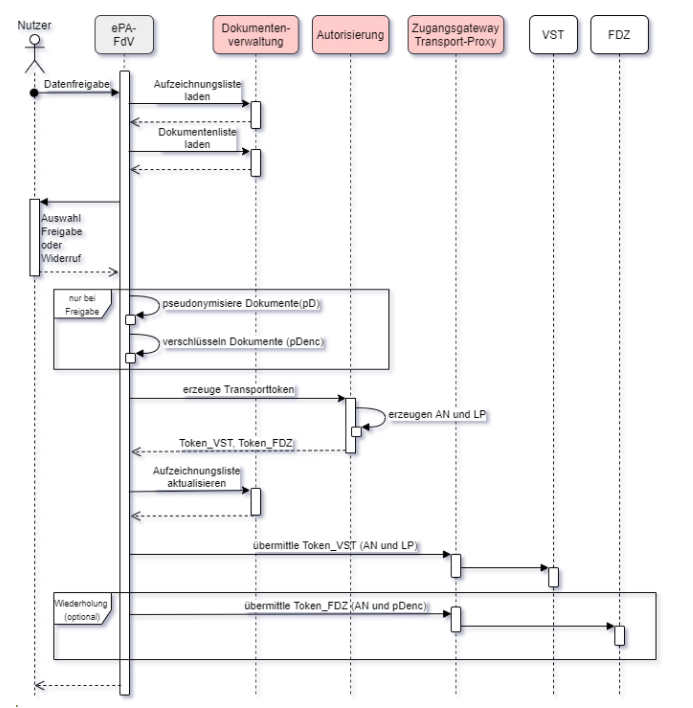
Abbildung 4 Übersicht des Ablaufs der Freigabe von Daten für Forschungszwecke
A_21843-01
Das ePA-FdV MUSS dem Versicherten eine Einwilligung nach § 363 Absatz 2 SGB V in die Datenfreigabe für die Forschung in einem informierten Dialog zur Anzeige bringen. Dabei MUSS der von der Krankenkasse des Versicherten vorgegebene Einwilligungstext verwendet werden. Der Text der Einwilligung muss auch im Nachhinein für den Versicherten zugänglich sein.
<=
A_21844-01
Das ePA-FdV MUSS sicherstellen, dass eine Freigabe von Dokumenten zu Forschungszwecken am ePA-FdV erst erfolgen kann, nachdem der Versicherte die Einwilligung nach § 363 Absatz 2 SGB V gegenüber der Krankenkasse erteilt hat.
<=
A_21845-01
Das ePA-FdV MUSS es dem Versicherten ermöglichen, die Einwilligung nach § 363 Absatz 2 SGB V gegenüber der Krankenkasse jederzeit zu widerrufen. Nach einem Widerruf MUSS das ePA-FdV die weitere Freigabe von Dokumenten für Forschungszwecke verhindern.
<=
Hinweis: das ePA-FdV vermerkt den Status einer erteilten, bzw. widerrufenen Einwilligung nach § 363 Absatz 2 SGB V in der Akte des Versicherten im Dokument der aufgezeichneten Freigaben/Widerrufe (Aufzeichnungsliste).
A_21895
Das ePA-FdV MUSS bei einem Widerruf der Einwilligung nach § 363 Absatz 2 SGB V automatisch gegenüber dem Forschungsdatenzentrum alle zu diesem Zeitpunkt noch freigegebenen Dokumente widerrufen. Für diesen Widerruf MÜSSEN die Schnittstellen [I_VST] und [I_FDZ] unter Angabe der zu widerrufenden Dokumente genutzt werden. <=
Hinweis: Es müssen alle Dokumente widerrufen werden, die in der Aufzeichnung der freigegebenen und widerrufenen Dokumente als freigegeben aber noch nicht widerrufen vermerkt sind.
A_21794
Das ePA-FdV MUSS dem Versicherten oder einem Vertreter die Auswahl der freizugebenden Dokumente für Forschungszwecke ermöglichen. Die Auswahl MUSS durch den Versicherten oder einen Vertreter bei folgenden Freigaben änderbar sein. <=
A_22682
Das ePA-FdV MUSS sicherstellen, dass Dokumente nicht erneut freigegebenen werden, welche schon für Forschungszwecke freigegeben und übermittelt und seitdem in der Akte des Versicherten nicht verändert wurden <=
Hinweis: Es muss also mindestens ein XDS-Dokument vor einer erneuten Freigabe hinzugekommen, gelöscht oder verändert worden sein.
A_21877
Das ePA-FdV MUSS vor der Übermittelung von ausgewählten Dokumenten und vor der Übermittelung des Widerrufs von einem oder mehreren zuvor freigegebenen Dokumenten für Forschungszwecke die Bestätigung des Versicherten oder eines Vertreters einholen. <=
A_21847
Das ePA-FdV MUSS es dem Versicherten oder einem Vertreter ermöglichen, zuvor freigegebene Dokumente jederzeit zu widerrufen. Zum Zwecke des Widerrufs MÜSSEN die Schnittstellen [I_VST] und [I_FDZ] unter Angabe der zu widerrufenden, in der Vergangenheit freigegebenen Dokumente genutzt werden. <=
A_21792
Das ePA-FdV MUSS die Daten eines für Forschungszwecke freizugebenden Dokuments unter Verwendung von Pseudonymisierungsvorgaben in ein pseudonymisiertes Dokument überführen. <=
A_22997-02
Das ePA-FdV MUSS für ein pseudonymisiertes Dokument die Regeln des FHIR-Standards (Compliance) berücksichtigen und im Format xml an das Forschungsdatenzentrum übermitteln.
<=
A_21793
Das ePA-FdV MUSS für die Konvertierung der Daten eines Dokuments des Versicherten in ein pseudonymisiertes Dokument die Pseudonymisierungsvorgaben verwenden, welche für die Pseudonymisierung dieser spezifischen Ausprägungen (Versionen) der Datenstruktur geeignet sind <=
Hinweis: Die Pseudonymisierungsvorgaben für die strukturierten Dokumente werden zusammen mit den Implementierungsvorgaben ("Implementation-Guidelines") zu den strukturierten Dokumenten auf GitHub veröffentlicht und enthalten Listen von FHIR-Path-Ausdrücken, welche eindeutig und vollständig die für ein pseudonymisiertes Dokument zulässigen Elemente eines MIOs angeben.
Die Übermittlung der freigegebenen und pseudonymisierten Dokumente an das Forschungsdatenzentrum erfolgt verschlüsselt und unter Verwendung einer Arbeitsnummer. Die gleiche Arbeitsnummer und ein Lieferpseudonym werden an die Vertrauensstelle übermittelt.
Ein Übermittlungsvorgang beinhaltet die Übermittlung der pseuonymisierten Dokumente gemäß Auswahl durch den Versicherten oder einen Vertreter. Ein solcher Vorgang kann dabei mehr als einen Aufruf der Schnittstelle des Forschungsdatenzentrums erfordern.
Ein zur Freigabe ausgewähltes Dokument kann in der Akte des Versicherten durch mehr als ein XDS-Dokument repräsentiert sein (Sammlungstypen mixed und uniform). Für jeden Übermittlungsvorgang eines Dokuments dieses Sammlungstyps müssen alle aktuellen (Status 'approved') XDS-Dokumente des assoziierten Ordners (XDS Folder) berücksichtigt werden.
Ein Übermittlungsvorgang zum Zweck des Widerrufs erfolgt analog zu einer Datenfreigabe. Anstelle der pseudonymisierten Dokumente wird jedoch lediglich deren ID an das Forschungsdatenzentrum übertragen.
A_21797
Das ePA-FdV MUSS für den Übermittlungsvorgang an die Vertrauensstelle und an das Forschungsdatenzentrum von der Autorisierung erstellte Transporttoken verwenden. Beide Transporttoken MÜSSEN aus dem gleichen Aufruf der Schnittstelle [I_Authorization_Token_Service] stammen. <=
A_22699-01
Das ePA-FdV MUSS das Verschlüsselungszertifikat des Forschungsdatenzentrums über die in [I_FDZ] definierte URL herunterladen und dieses Zertifikat mittels TI-Zertifikatsprüfung (Policy-List enthält oid_epa_fdz [gemSpec_OID], OCSP-Graceperiod=4h, vgl. auch A_15873-*) prüfen.
Das ePA-FdV MUSS sicherstellen, dass ausschließlich gültige Zertifakte nach Prüfung für die Verschlüsselung der pseudonymisierten Dokumente für das Forschungsdatenzentrum verwendet werden.
<=
A_21800
Das ePA-FdV MUSS sicherstellen, dass die pseudonymisierten Dokumente ausschließlich gemäß [I_FDZ] für das Forschungsdatenzentrum verschlüsselt werden. D. h., insbesondere das ePA-FdV MUSS das Verschlüsselungszertifikat des FDZ prüfen bevor es den öffentlichen Schlüssel darin für Verschlüsselungsoperationen verwendet. <=
A_21850
Das ePA-FdV MUSS für jeden Übermittlungsvorgang (ein oder mehrere Dokumente, siehe Erläuterung) an die Vertrauensstelle und an das Forschungsdatenzentrum eine neu erzeugte Arbeitsnummer, bzw. neu erzeugte Transporttoken, verwenden. <=
A_21796-01
Das ePA-FdV MUSS bei jedem Übermittlungsvorgang an die Vertrauensstelle und an das Forschungsdatenzentrum zeitlich gültige Transporttoken verwenden. Dieser Verwendungszeitraum beginnt mit dem Bezug der Transporttoken von der Komponente Autorisierung und endet 30 Minuten vor dem Verfallszeitpunkt der Transporttoken ("exp" - 30 Minuten).
<=
A_21803
Das ePA-FdV MUSS das Transporttoken mit der Arbeitsnummer und dem Lieferpseudonym unter Verwendung der Schnittstelle der Vertrauensstelle [I_VST] über den Transport-Proxy an die Vertrauensstelle übermitteln. <=
A_21804
Das ePA-FdV MUSS die pseudonymisierten und verschlüsselten Dokumente mit der Arbeitsnummer gemäß [I_FDZ], oder - im Falle eines Widerrufs - die Identifier der zu widerrufenen Dokumente, und die Arbeitsnummer unter Verwendung der Schnittstelle des Forschungsdatenzentrums [I_FDZ] über den Transport-Proxy an das Forschungsdatenzentrum übermitteln <=
Erläuterung zum Begriff "Übermittlungsvorgang": Ein Übermittlungsvorgang beinhaltet einen Aufruf der Schnittstelle der Vertrauensstelle und -- je nach Umfang der freigegebenen Dokumente -- einen oder mehrere Aufruf der Schnittstelle des Forschungsdatenzentrums.
A_22821-01
Das ePA-FdV MUSS für jedes freigegebene Dokument eine eigens generierte ID (256 Bit Zufallswert) als Identifier verwenden. Dieser Identifier MUSS auch für Folgefreigaben des Dokuments verwendet werden. Für Freigaben nach einem Widerruf MUSS ein neuer Identifier erzeugt werden.
Dieser Zufallswert muss den Anforderungen aus GS-A_4367 [gemSpec_Krypt] zur Qualität der Zufallszahlenerzeugung entsprechen.
<=
A_22670
Das ePA-Fdv MUSS alle freizugebenden und pseudonymisierten XDS-Dokumente eines MIOs mit einem einzigen Aufruf der Schnittstelle des Forschungsdatenzentrums gemäß [I_FDZ] übermitteln. <=
A_22683
Das ePA-FdV MUSS bei der Pseudonymisierung und Übermittlung von Dokumenten an das Forschungsdatenzentrum jeweils alle Teildokumente (XDS Dokumente mit Status 'approved') berücksichtigen. <=
A_21894
Das ePA-FdV MUSS für einen Übermittlungsvorgang die Schnittstelle der Vertrauensstelle [I_VST] und die Schnittstelle des Forschungsdatenzentrums [I_FDZ] verwenden. <=
Hinweis: Für das ePA-FdV gilt der Vorgang der Übermittelung an das FDZ als erfolgreich abgeschlossen, wenn sowohl der Aufruf der Schnittstelle der Vertrauensstelle [I_VST], als auch der anschließende Aufruf der Schnittstelle des Forschungsdatenzentrums [I_FDZ] erfolgreich war
Jede Freigabe und jeder Widerruf eines strukturierten Dokuments muss erfasst werden und für den Versicherten oder einen Vertreter einsehbar sein. Für diese Aufzeichnungen wird ein vorgegebenes Dokument (Aufzeichnungsliste) in der Akte des Versicherten verwendet. Anhand dieser Aufzeichnungen ist nachvollziehbar, welche Dokumente zu welchem Zeitpunkt freigegeben und an das Forschungsdatenzentrum übermittelt und welche widerrufen wurden und wer den jeweiligen Vorgang initiiert hat. Die aufgezeichnete Dokumenteninformation zu einer Freigabe kann auch für einen eindeutigen Widerruf der Freigabe verwendet werden.
Bei der Aufzeichnung der freigegebenen Dokumente, bzw. der zu übermittelnden Artefakte, muss sichergestellt sein, dass keine Situation eintreten kann welche dazu führt, dass im Forschungsdatenzentrum Dokumente vorliegen, deren Freigabe für einen Versicherten nicht mehr einsehbar und dahingehend auch nicht widerrufbar ist. In die Aufzeichnungsliste werden freizugebende Daten daher vor einer Übermittlung eingetragen und ein Widerruf erst nach Erhalt der Bestätigung durch das Forschungsdatenzentrum. Das ePA-FdV selbst muss daneben Maßnahmen vorsehen, die sicherstellen, dass der genannte eindeutige Zustand auch nach einer unvorhergesehenen Unterbrechung der Kommunikation erreicht werden kann.
A_21878-01
Das ePA-FdV MUSS einen Nachweis der erteilten Einwilligung des Versicherten oder den Widerruf dieser Einwilligung zur Freigabe von Dokumenten für Forschungszwecke im Dokument [FD_Aufzeichnung] unter Beachtung von [FD_Aufzeichnung_Schema] in der Akte des Versicherten ablegen. Ist das Dokument [FD_Aufzeichnung] zum Zeitpunkt der Aufzeichnung der erteilten Einwilligung nicht vorhanden, MUSS das ePA-FdV dieses Dokument gemäß [FD_Aufzeichnung] in der Akte des Versicherten anlegen.
<=
Hinweis: A_21878-* bezieht sich auf die Einwilligung gemäß § 363 Absatz 2 SGB V (A_21843-*). Als Nachweis genügt der Einwilligungsstatus, welcher gemäß den Vorgaben in [FD_Aufzeichnung] angegeben wird.
A_21805
Das ePA-FdV MUSS die Freigabe von Dokumenten für Forschungszwecke und den erfolgten Widerruf von Dokumenten aufzeichnen und in der Akte des Versicherten gemäß [FD_Aufzeichnung] und [FD_Aufzeichnung_Schema] ablegen. <=
A_22858-01
Das ePA-FdV MUSS bei der Erstellung und bei Modifikationen des Dokuments der Aufzeichnungsliste in der Akte die Vorgaben in [FD_Aufzeichnung] beachten.
<=
A_22680
Das ePA-FdV MUSS sicherstellen, dass alle dem Forschungsdatenzentrum freigegebenen Dokumente in der Aufzeichnungsliste gespeichert sind und für einen Widerruf verwendet werden können. <=
A_22674
Das ePA-FdV MUSS durch geeignete Maßnahmen sicherstellen, dass ein durch technische Störung unterbrochener Übermittlungsvorgangs nach erneuter Anmeldung des ePA-FdV am Aktensystem beendet werden kann, ohne dass im Forschungsdatenzentrum Dokumente vorliegen, die in der Aufzeichnungsliste nicht vermerkt sind. <=
Hinweis: Bei einem Abbruch der Übermittlung, beispielsweise durch einen schwachen Akku des Geräts des ePA-FdV, ist nicht bekannt, ob und welche Dokumente schon an das Forschungsdatenzentrum übertragen wurden. Ein ePA-FdV soll daher den Vorgang regulär beenden können, beispielsweise durch erneute Übermittlung der betroffenen Dokumente.
A_21896
Das ePA-FdV MUSS es dem Versicherten oder einem Vertreter jederzeit ermöglichen, einzusehen, welche Dokumente aus seiner Akte für Forschungszwecke freigegeben sind, welche widerrufen wurden, sowie zu welchem Zeitpunkt dieses erfolgte und wer (Versicherter/Vertreter) diesen Vorgang ausgelöst hat.
<=
A_22693
Das ePA-FdV MUSS die Aufzeichnungsliste gemäß [FD_Aufzeichnung] aus der regulären Handhabung von Dokumenten des Versicherten ausnehmen und gegenüber einem Versicherten verbergen. <=
Bei einem Wechsel des Kostenträgers (Aktenumzug) ist eine eigenständige Erteilung der Einwilligung gemäß § 363 Absatz 2 SGB V gegenüber dem neuen Kostenträger erforderlich.
Diese erneute Einwilligung muss vor einem Umzug der Akte erteilt werden, wenn aktuell noch freigegebene Dokumente im Forschungsdatenzentrum vorliegen und diese Freigabe nach dem Umzug erhalten bleiben soll. Wird diese Einwilligung nicht erteilt, müssen vor dem Umzug der Akte alle freigegebenen Dokumente widerrufen werden.
A_22666
Das ePA-FdV MUSS einem Versicherten die Erteilung der Einwilligung gemäß § 363 Absatz 2 SGB V gegenüber dem neuen Kostenträger ermöglichen, wenn zum Zeitpunkt des Aktenumzugs freigegebene Dokumente des Versicherten beim Forschungsdatenzentrum vorliegen. <=
A_22667
Das ePA-FdV MUSS alle für Forschungszwecke aktuell freigegebenen Dokumente beim Forschungsdatenzentrum widerrufen, wenn ein Versicherter die Einwilligung gemäß § 363 Absatz 2 SGB V gegenüber dem neuen Kostenträger nicht erteilt. Dieser Widerruf MUSS vor Aufruf der Operation Suspend_Account des AccountManagement-Dienstes des Aktensystems abgeschlossen sein. <=
Durch die Kopplung der ePA mit dem Nationalen Gesundheitsportal ([NGP]) soll dem Versicherten über das ePA-FdV, unabhängig von Gesundheitskompetenzniveau, eine Hilfestellung angeboten werden, durch die sich der Versicherte einen Zugang zu einfach verständlichen und von Experten bereitgestellten Gesundheitsinformationen verschaffen kann.
Der Versicherte hat über das ePA-FdV zwei Möglichkeiten auf die Inhalte des Nationalen Gesundheitsportal zu zugreifen. Einerseits kann der Versicherte über eine selektive schlagwortbasierte Suche aus dem ePA-FdV heraus auf die Inhalte des Nationalen Gesundheitsportal zugreifen. In dem Fall, dass im ePA-Aktensystem bereits strukturierte Daten vorliegen (eingestellt durch den Versicherten und/oder berechtigte Leistungserbringer bzw. Dritte), kann der Versicherte über das ePA-FdV gezielt auf im Nationalen Gesundheitsportal liegende Informationen zu Symptomen, Diagnosen oder medizinische Fachbegriffe zugreifen.
A_21473
Das ePA-FdV MUSS es dem Versicherten ermöglichen, auf Informationen des Nationalen Gesundheitsportals barrierefrei zuzugreifen. <=
A_21474
Das ePA-FdV MUSS es dem Versicherten ermöglichen, Informationen des Nationalen Gesundheitsportals mit Daten, die in der elektronischen Patientenakte des Versicherten gespeichert sind, zu verknüpfen. <=
Ein ePA-FdV kann technische Dokumente (Dokumente, die nicht Dokumente des Versicherten sind) bei Bedarf im Ordner "technical" ablegen, beispielsweise für eine Synchronisation von Zuständen zwischen verschiedenen ePA-FdVs des Versicherten.
A_23145
Das ePA-Frontend des Versicherten MUSS für herstellerspezifische Dokumente, die im Ordner "technical" abgelegt werden, einen formatCode mit der codeSystem OID "2.25.154081344090540725127779452347992051720" und einem code der Form "urn:<Hersteller>:ig:<Bezeichner>:<Version>" verwenden. <=
Hinweis: Der Teil <Hersteller> in code muss dabei so gewählt werden, dass eine Verwechselung mit einem anderen Hersteller ausgeschlossen ist.
Ein ePA-Frontend des Versicherten soll alle Dokumente des Ordners "technical" ignorieren, wenn diese nicht für den Verarbeitungskontext des ePA-FdV notwendig oder unbekannt sind.
In diesem Kapitel wird die Umsetzung der im systemspezifischen Konzept [gemSysL_ePA] spezifizierten Anwendungsfälle im FdV beschrieben.
Voraussetzung für die Nutzung des FdV ist das Vorhandensein eines Aktenkontos:
A_15567-06
Das ePA-Frontend des Versicherten MUSS die Zulässigkeit des Anwendungsfalls in Abhängigkeit von folgenden Kriterien sicherstellen:
VerificationResult
Tabelle 9: TAB_FdV_161 – Zulässigkeit von Anwendungsfällen
| Anwendungsfall |
K1 |
K2 | K3 |
|---|---|---|---|
| Login Aktensession |
Aktenkontoinhaber Vertreter |
immer | OK VERIFYABLE |
| Logout Aktensession |
Aktenkontoinhaber Vertreter |
immer | immer |
| Aktenkonto aktivieren |
Aktenkontoinhaber |
Registered | OK VERIFYABLE |
| Anbieter wechseln |
Aktenkontoinhaber |
Dismissed Start_Migration Suspended |
OK VERIFYABLE |
| Dokumente umschlüsseln | Aktenkontoinhaber | vor und nach der Umschlüsselung: Activated , während der Umschlüsselung: KEY_CHANGE | OK VERIFYABLE |
| Berechtigung für LEI vergeben |
Aktenkontoinhaber Vertreter |
Activated Dismissed |
OK VERIFYABLE |
| Vertretung einrichten |
Aktenkontoinhaber |
Activated Dismissed |
OK VERIFYABLE |
| Berechtigung für Kostenträger vergeben |
Aktenkontoinhaber Vertreter |
Activated Dismissed |
OK VERIFYABLE |
| Vergebene Berechtigungen anzeigen |
Aktenkontoinhaber Vertreter |
Activated Dismissed Start_Migration Suspended |
OK VERIFYABLE |
| Eingerichtete Vertretungen auflisten |
Aktenkontoinhaber Vertreter |
n/a | immer |
| Berechtigung für LEI ändern |
Aktenkontoinhaber Vertreter |
Activated Dismissed |
OK VERIFYABLE |
| Berechtigung für LEI löschen |
Aktenkontoinhaber Vertreter |
Activated Dismissed |
OK VERIFYABLE |
| Berechtigung für Vertreter löschen |
Aktenkontoinhaber |
Activated Dismissed |
OK VERIFYABLE |
| Berechtigung für Kostenträger löschen |
Aktenkontoinhaber Vertreter |
Activated Dismissed |
OK VERIFYABLE |
| Dokumente einstellen |
Aktenkontoinhaber Vertreter |
Activated Dismissed |
OK VERIFYABLE |
| Dokumente suchen |
Aktenkontoinhaber Vertreter |
Activated Dismissed |
OK VERIFYABLE |
| Dokumente löschen |
Aktenkontoinhaber Vertreter |
Activated Dismissed |
OK VERIFYABLE |
| Dokumente herunterladen |
Aktenkontoinhaber Vertreter |
Activated Dismissed |
OK VERIFYABLE |
| Protokolldaten einsehen |
Aktenkontoinhaber Vertreter |
Activated Dismissed |
OK VERIFYABLE |
| PIN der eGK ändern |
Aktenkontoinhaber Vertreter |
n/a | OK VERIFYABLE |
| PIN der eGK mit PUK entsperren |
Aktenkontoinhaber Vertreter |
n/a | BLOCKED OK VERIFYABLE |
| Benachrichtigungsadresse für Geräteautorisierung aktualisieren |
Aktenkontoinhaber Vertreter |
Activated Dismissed |
OK VERIFYABLE |
Die Rolle des Nutzers kann durch den Vergleich der Versicherten-ID aus dem Authentisierungszertifikat der eGK (C.CH.AUT) bzw. der alternativen kryptographische Versichertenidentität (C.CH.AUT_ALT) des Nutzers mit der Versicherten-ID aus der Akten-ID bestimmt werden.
Tritt ein Fehler bei der Verarbeitung von Operationsaufrufen des ePA-Aktensystems auf, dann antworten die Komponenten des ePA-Aktensystems mit einer Fehlermeldung. Das Format und die verwendeten Fehlercodes sind in den Spezifikationen der Interfaces beschrieben. Weiterhin können Fehler in der lokalen Verarbeitung auftreten.
A_15307-01
Das ePA-Frontend des Versicherten MUSS, wenn bei der Abarbeitung der Aktivitäten eines Anwendungsfalls ein Fehler auftritt und keine Fehlerbehandlung beschrieben ist, den Anwendungsfall abbrechen. <=
Das FdV soll dem Nutzer nach einem Abbruch eine verständliche Fehlermeldung anzeigen.
Wenn die Möglichkeit besteht, dass der Nutzer das fehlerverursachende Problem selbst beheben kann, kann das FdV den Nutzer auf die Lösung hinweisen. Bspw. kann dem Nutzer bei einer gesperrten PIN der Anwendungsfall "PIN der eGK entsperren" angeboten werden.
A_15308
Das ePA-Frontend des Versicherten SOLL dem Nutzer im Fehlerfall einen Hinweis geben, wenn es für den Nutzer Handlungsmöglichkeiten dazu gibt. <=
A_15309-02
Das ePA-Frontend des Versicherten MUSS bei Auftreten der Fehlercodes aus TAB_FdV_107 und TAB_FdV_108 dem Nutzer den entsprechenden Fehlertext anzeigen und die spezifische Aktion durchführen.
Tabelle 10: TAB_FdV_107 – Behandlung von Fehlercodes von Plattformbausteinen
| Fehlercode |
Fehlertext |
Spezifische Aktionen durch FdV |
|---|---|---|
| CardTerminated |
Ihre Gesundheitskarte ist gesperrt, bitte wenden Sie sich an Ihre Krankenkasse. |
|
| MemoryFailure |
Ihre Gesundheitskarte ist beschädigt, bitte wenden Sie sich an Ihre Krankenkasse. |
|
| PasswordBlocked |
Die PIN/PUK wurde – nach zu häufiger falscher PIN/PUK Eingabe – blockiert. |
Eine Fehlermeldung anzeigen und dem Versicherten empfehlen, entweder die PIN mit Hilfe der PUK zu entsperren bzw. bei einer gesperrten PUK sich an seine Krankenkasse zu wenden. |
| WrongSecretWarning |
Falsche PIN, verbleibende Eingabeversuche <x> |
Eine Fehlermeldung mit der verbleibenden Anzahl der Eingabeversuche bis zur Sperrung der PIN anzeigen und erneute PIN-Eingabe ermöglichen. |
Tabelle 11: TAB_FdV_108 – Behandlung von Fehlern des ePA-Aktensystems
| Fehlercode |
Fehlertext |
Spezifische Aktion durch ePA-Frontend des Versicherten |
|---|---|---|
| ASSERTION_INVALID |
Das ePA-Frontend des Versicherten kann versuchen die Authentisierung mittels der übergreifenden Aktivität "Authentisieren des Nutzers" zu aktualisieren und den Operationsaufruf wiederholen. |
|
| DEVICE_UNKNOWN |
Sie haben noch nie mit diesem Gerät auf Ihre ePA zugegriffen. Aus Sicherheitsgründen bitten wir Sie Ihren Zugriff zu autorisieren. Ihre Registrierung mit diesem Gerät ist fast abgeschlossen. In Kürze erhalten Sie den Bestätigungslink für Ihre Autorisierung an die hinterlegte E-Mail Adresse. Falls Sie diese E-Mail nicht erhalten haben, prüfen Sie bitte Ihren Spam-Ordner. Falls Sie keinen Zugriff mehr auf Ihre hinterlegte E-Mail Adresse haben, können Sie uns gerne kontaktieren. |
Der Anwendungsfall wird abgebrochen. |
| wst:InvalidSecurityToken |
Ihre Gesundheitskarte ist ungültig, bitte wenden Sie sich an Ihre Krankenkasse. |
A_15310-01
Das ePA-Frontend des Versicherten MUSS, wenn eine Operation mit einer Fehlermeldung antwortet, welche auf einen ungültigen Authentisierungstoken oder ungültigen Autorisierungstoken verweist, den referenzierten Token aus den Session-Daten löschen. <=
A_15311-01
Das ePA-Frontend des Versicherten MUSS bei allen Operationen mit einer qualifizierten Fehlermeldung abbrechen, wenn notwendige Aufrufparameter unvollständig, ungültig oder inkonsistent sind. <=
Dieser Abschnitt beschreibt Aktivitäten, welche durch verschiedene Anwendungsfälle genutzt werden.
Mit dieser Operation authentisiert sich der Nutzer am ePA-Aktensystem. Das ePA-FdV erhält bei erfolgreicher Authentisierung einen Authentisierungstoken.
A_15312-02
Das ePA-Frontend des Versicherten MUSS die Aktivität "Authentisieren des Nutzers" gemäß TAB_FdV_109 umsetzen.
Tabelle 12: TAB_FdV_109 – Authentisieren des Nutzers
| I_Authentication_Insurant:: LoginCreateChallenge Request erstellen |
RequestSecurityToken (RST) erstellen |
| I_Authentication_Insurant:: LoginCreateChallenge Response verarbeiten |
RequestSecurityTokenResponse (RSTR) verarbeiten Rückgabedaten:
|
| I_Authentication_Insurant:: LoginCreateToken Request erstellen |
RequestSecurityTokenResponse (RSTR) erstellen Eingangsdaten:
|
| wenn Authentisierung mittels eGK: Plattformbaustein PL_TUC_SIGN_HASH_nonQES zum Signieren nutzen |
Eingangsdaten:
Rückgabedaten:
|
| wenn Authentisierung mittels alternativer kryptographischer Versichertenidentität: |
Aufruf der signaturdienstspezifischen Schnittstelle I_Remote_Sign_Operations::sign_Data Eine Beschreibung der konkreten Ausgestaltung der Schnittstelle befindet sich in [vesta]. Der Response liefert u.a. das C.CH.AUT_ALT Zertifikat. Dieses wird in die Session-Daten übernommen. |
| I_Authentication_Insurant:: LoginCreateToken Response verarbeiten |
RequestSecurityTokenResponse Collection (RSTRC) verarbeiten Rückgabedaten:
|
| Fehlerbehandlung |
Wenn der Response von LoginCreateToken den WS-Trust Fehler wst:InvalidSecurityToken liefert, dann ist das C.CH.AUT bzw. C.CH.AUT_ALT Zertifikat des Nutzers ungültig. Der Anwendungsfall wird abgebrochen. Falls die Authentisierung mittels eGK erfolgte, muss der Nutzer aufgefordert werden, seine aktuell gültige eGK zu stecken oder sich an seine Krankenkasse zu wenden. |
Die Dauer der Gültigkeit des Authentisierungstoken ist in [gemSpec_Authentisierung_Vers] beschrieben.
Mit dieser Operation kann das ePA-Frontend des Versicherten den Authentisierungstoken am ePA-Aktensystem verlängern.
A_17541-01
Das ePA-Frontend des Versicherten MUSS die Aktivität "Authentisierungstoken erneuern" gemäß TAB_FdV_173 umsetzen.
Tabelle 13: TAB_FdV_173 – Logout - Authentisierungstoken abmelden
| Vorbedingung | AuthenticationAssertion in Session-Daten |
|---|---|
| I_Authentication_Insurant::RenewToken Request erstellen |
Eingangsdaten:
|
| I_Authentication_Insurant::RenewToken Response verarbeiten |
RequestSecurityTokenResponse (RSTR) verarbeiten Rückgabedaten:
|
Der vorher genutzte Authentisierungstoken wird gelöscht.
Im Fehlerfall kann die Operation wiederholt oder eine neue Authentisierung des Nutzers gestartet werden.
Mit dieser Operation werden ein oder mehrere Dokumente in die Dokumentenverwaltung hochgeladen. Hierbei kann es sich entweder um durch den Nutzer ausgewählte (fachliche) Versichertendokumente oder um technische Dokumente (z.B. ein Policy Document) handeln. Eine Mischung beider Arten von Dokumenten innerhalb eines Dokumentensets ist nicht erlaubt.
A_15314-01
Das ePA-Frontend des Versicherten MUSS die Aktivität "Dokumentenset in Dokumentenverwaltung hochladen" gemäß TAB_FdV_111 umsetzen.
Tabelle 14: TAB_FdV_111 – Dokumentenset in Dokumentenverwaltung hochladen
| I_Document_Management_Insurant:: ProvideAndRegisterDocumentSet-b Request erstellen |
Eingangsparameter:
|
| I_Document_Management_Insurant:: ProvideAndRegisterDocumentSet-b Response verarbeiten |
Rückgabedaten:
|
A_15315-01
Das ePA-Frontend des Versicherten MUSS für die Nutzung der Operation I_Document_Management_Insurant::ProvideAndRegisterDocumentSet-b gemäß der in [IHE-ITI-TF] definierten IHE XDS-Transaktion [ITI-41] "Provide & Register Document Set-b" als Akteur "Document Source" umsetzen. <=
Für die XDS-Metadaten von Dokumenten des Versicherten gelten die Nutzungsvorgaben aus [gemSpec_DM_ePA#A_14760-*]. Für die XDS-Metadaten eines Policy Documents gelten die Nutzungsvorgaben aus [gemSpec_DM_ePA#A_14961-*].
A_15316-01
Das ePA-Frontend des Versicherten MUSS sicherstellen, dass Dokumente des Versicherten, welche in das ePA-Aktensystem eingestellt werden, verschlüsselt sind. <=
Technische Dokumente (Policy Documents) werden nach der Übertragung in das Aktenkonto durch die Dokumentenverwaltung ausgewertet.
A_17772-01
Das ePA-Frontend des Versicherten MUSS sicherstellen, dass technische Dokumente (Policy Documents) unverschlüsselt, d.h. nicht mit dem Aktenschlüssel verschlüsselt, in das ePA-Aktensystem eingestellt werden. <=
A_15972-01
Das ePA-Frontend des Versicherten MUSS sicherstellen, dass eine Provide And Register Document Set-b Message entweder ein oder mehrere Versichertendokumente oder genau ein technisches Dokument enthält. <=
A_16221-01
Das ePA-Frontend des Versicherten MUSS bei der Umsetzung der IHE XDS-Transaktion [ITI-41] zur Übertragung von Dokumenten eine Kodierung mittels MTOM/XOP [MTOM] gemäß [IHE-ITI-TF2x#V.3.6.] verwenden. <=
Das ePA-Aktensystem lehnt beim Einstellen von Dokumenten Requests ab, wenn die Summe der Größe der Dokumente in einem Submission Set 250 MB überschreitet. Das ePA-Frontend des Versicherten kann Einstellversuche von Dokumentensets unterbinden, wenn diese von der Dokumentenverwaltung aufgrund der Größenbeschränkung abgelehnt würden.
Mit dieser Operation werden ein oder mehrere Dokumente anhand der Document Unique IDs aus den XDS-Metadaten aus dem Aktenkonto heruntergeladen.
A_15317-02
Das ePA-Frontend des Versicherten MUSS die Aktivität "Dokumentenset aus Dokumentenverwaltung herunterladen" gemäß TAB_FdV_112 umsetzen.
Tabelle 15: TAB_FdV_112 – Dokumentenset aus Dokumentenverwaltung herunterladen
| I_Document_Management_Insurant:: RetrieveDocumentSet Request erstellen |
Eingangsparameter:
|
| I_Document_Management_Insurant:: RetrieveDocumentSet Response verarbeiten |
Rückgabedaten:
|
| für jedes medizinische Dokument aus RetrieveDocumentSetResponse_Message: Plattformbaustein PL_TUC_SYMM_DECIPHER nutzen Hinweis: Der Begriff "medizinische Dokumente" umfasst alle Dokumente, welche durch LEI, KTR, DiGA oder Versicherte in das ePA-Aktensystem eingestellt wurden. Davon abgegrenzt werden die technischen Dokumente (Policy Documents). Sie werden unverschlüsselt übertragen. |
Für Vorgaben zum Entschlüsseln eines Dokumentes aus dem ePA-Aktensystem siehe . Dokumentenschlüssel mit PL_TUC_SYMM_DECIPHER entschlüsseln Eingangsdaten:
Eingangsdaten:
|
A_15318-01
Das ePA-Frontend des Versicherten MUSS für die Nutzung der Operation I_Document_Management_Insurant::RetrieveDocumentSet gemäß der in [IHE-ITI-TF] definierten IHE XDS-Transaktion [ITI-43] "Retrieve Document Set" als Akteur "Document Consumer" umsetzen. <=
A_16222-02
Das ePA-Frontend des Versicherten MUSS bei der Umsetzung der IHE XDS-Transaktion [ITI-43] die Übertragung von Dokumenten mit MTOM/XOP [MTOM] unterstützen. <=
Mit dieser Operation werden ein oder mehrere Dokumente anhand ihrer entryUUIDs aus der Dokumentenverwaltung gelöscht. Die XDS-Metadaten wurden vorab mit einer Suche nach Dokumenten im ePA-Aktensystem ermittelt.
A_15319-02
Das ePA-Frontend des Versicherten MUSS die Aktivität "Dokumentenset in Dokumentenverwaltung löschen" gemäß TAB_FdV_113 umsetzen.
Tabelle 16: TAB_FdV_113 – Dokumentenset in Dokumentenverwaltung löschen
| I_Document_Management_Insurant::RemoveMetadata Request erstellen |
Eingangsdaten:
|
| I_Document_Management_Insurant::RemoveMetadata Response verarbeiten |
Rückgabedaten:
|
A_15320-02
Das ePA-Frontend des Versicherten MUSS die Nutzung der Operation I_Document_Management_Insurant::RemoveMetadata gemäß der in [IHE-ITI-RMD] definierten IHE RMD-Transaktion [ITI-62] "Remove Metadata" als Akteur "Document Administrator" umsetzen. <=
Mit dieser Operation wird eine Suchanfrage über die XDS-Metadaten der Dokumente im Aktenkonto an die Dokumentenverwaltung gesendet.
A_15321-01
Das ePA-Frontend des Versicherten MUSS die Aktivität "Suche nach Dokumenten in Dokumentenverwaltung" gemäß TAB_FdV_114 umsetzen.
Tabelle 17: TAB_FdV_114 – Suche nach Dokumenten in Dokumentenverwaltung
| I_Document_Management_Insurant:: RegistryStoredQuery Request erstellen |
Eingangsparameter:
|
| I_Document_Management_Insurant:: RegistryStoredQuery Response verarbeiten |
Rückgabedaten:
|
A_15322-01
Das ePA-Frontend des Versicherten MUSS für die Nutzung der Operation I_Document_Management_Insurant::RegistryStoredQuery gemäß der in [IHE-ITI-TF] definierten IHE XDS-Transaktion [ITI-18] "Registry Stored Query" als Akteur "Document Consumer" umsetzen. <=
A_17854-01
Das ePA-Frontend des Versicherten MUSS den in [ITI-18] nicht enthaltenen zusätzlichen Anfragetyp "FindDocumentsByTitle" mit der Query-ID "urn:uuid:ab474085-82b5-402d-8115-3f37cb1e2405" und denselben Parameternutzungsvorgaben der Registry Stored Query "FindDocuments" gemäß [IHE-ITI-TF2a#3.18.4.1.2.3.7.1] in Verbindung mit dem zusätzlich zu [ITI-18] eingeführten Suchparameter $XDSDocumentEntryTitle sowie dem optionalen Parameter $XDSDocumentEntryAuthorInstitution nutzen können. <=
Der zusätzliche Parameter "$XDSDocumentEntryTitle" filtert die Suchergebnismenge über das Attribut XDSDocumentEntry.title. Dabei ist die Angabe von Platzhaltern (wie für Suchanfragen über den Parameter $XDSDocumentEntryAuthorPerson) möglich, die sich verhält wie das SQL Schlüsselwort "LIKE" in Kombination mit den anzugeben Wildcard-Zeichen "%", um jedes beliebige Zeichen und "_", um ein einzelnes beliebiges Zeichen zu finden.
Der optionale Parameter "$XDSDocumentEntryAuthorInstitution" filtert die Suchergebnismenge über das Attribut XDSDocumentEntry.authorInstitution.
Mit dieser Operation werden die für das Aktenkonto vergebenen Berechtigungen ermittelt. Für jeden Berechtigten ist in der Komponente Autorisierung ein AuthorizationKey und in der Komponente Dokumentenverwaltung ein technisches Dokument (Policy Document) hinterlegt. Letzteres beinhaltet die Parameter der Berechtigung.
A_15323-02
Das ePA-Frontend des Versicherten MUSS die Aktivität "Vergebene Berechtigungen bestimmen" gemäß TAB_FdV_115 umsetzen.
Tabelle 18: TAB_FdV_115 – Vergebene Berechtigungen bestimmen
| Standardablauf |
Aktivitäten im Standardablauf
|
A_17129-01
Das ePA-Frontend des Versicherten MUSS für die Aktivität "Vergebene Berechtigungen bestimmen" die übergreifende Aktivität "Schlüsselmaterial aller Berechtigten aus ePA-Aktensystem laden" ausführen. <=
Dokumente im Aktenkonto werden mittels ihrer XDS-Metadaten identifiziert. Die Nutzungsvorgaben für XDS-Metadaten zur Kennzeichnung von Policy Documents sind in [gemSpec_DM_ePA#A_14961-*] beschrieben.
A_15324-01
Das ePA-Frontend des Versicherten MUSS für die Aktivität "Vergebene Berechtigungen bestimmen" zur Suche der Policy Documents die übergreifende Aktivität "Suche nach Dokumenten in Dokumentenverwaltung" mit einer query:AdhocQueryRequest_Message für Policy Documents ausführen. <=
Das Ergebnis der Suchanfrage query:AdhocQueryResponse_Message liefert, falls Berechtigungen erteilt wurden, die XDS-Metadaten von einem oder mehreren Policy Documents (je ein Policy Document pro LEI, KTR, DiGA bzw. Vertreter). Die XDS-Metadaten beinhalten die eindeutigen Kennungen (DocumentEntry.uniqueId) der Policy Documents. Mittels dieser werden die Policy Documents im nächsten Schritt aus der Dokumentenverwaltung heruntergeladen.
A_15325-01
Das ePA-Frontend des Versicherten MUSS im Anwendungsfall "Vergebene Berechtigungen anzeigen" zum Herunterladen der Policy Documents die übergreifende Aktivität "Dokumentenset aus Dokumentenverwaltung herunterladen" mit einer RetrieveDocumentSet_Message für alle über die XDS-Metadaten ermittelten Kennungen (DocumentEntry.uniqueId) von Policy Documents ausführen. <=
Als Ergebnis liegen, falls Berechtigungen erteilt wurden, ein oder mehrere AuthorizationKeys sowie Policy Documents für berechtigte LEI, KTR, DiGA und für Vertreter vor.
Gemäß der Beschreibung in "" können folgende Informationen zu den Berechtigungen aus den Policy Documents bzw. den XDS-Metadaten ermittelt werden.
Berechtigung für LEI: Telematik-ID, Name der LEI, Berechtigung "erteilt am", Berechtigung "gültig bis", Zugriffsrecht der LEI berechtigte Dokumentenkategorien, einzeln freigeschaltete oder geblockte Dokumente (Allowlist, Denylist)
Gemäß der Beschreibung in "" können folgende Informationen zu den Berechtigungen aus den AuthorizationKeys ermittelt werden.
Berechtigung für Vertreter: Versicherten-ID, Name des Vertreters
Berechtigung für KTR: Telematik-ID, Name des KTR
Berechtigung für DiGA: Telematik-ID, Name der DiGA
Die Policy Documents lassen sich auf Basis der Versicherten-ID des Vertreters bzw. der Telematik-ID der LEI, DiGA oder KTR den AuthorizationKeys zuordnen.
Der AuthorizationKey enthält Parameter zur Berechtigung sowie die für den Berechtigten verschlüsselten Akten- und Kontextschlüssel.
Die Struktur AuthorizationKeyType ist in [AuthorizationService.xsd] beschrieben.
Das Attribut validTo beinhaltet die Gültigkeit des AuthorizationKey, d.h. den Zeitpunkt bis zu dem die Berechtigung erteilt wird. Für eine Berechtigung ohne zeitliche Begrenzung wird ein technisches Datum (31.12.9999) verwendet.
Das Attribut actorID beinhaltet die ID des Berechtigenden, d.h. die Versicherten-ID für Aktenkontoinhaber und Vertreter bzw. die Telematik-ID für LEIs, DiGA und KTR.
Das Element DisplayName beinhaltet den Klartextnamen des Berechtigten oder den Namen der berechtigten DiGA.
Das Element AuthorizationType beinhaltet den Berechtigungstyp. Siehe auch .
Das Element phrs:AuthorizationKey/phrs:EncryptedKeyContainer enthält das Chiffrat mit dem verschlüsselten Akten- und Kontextschlüssel sowie AssociatedData.
Die Datenstruktur für EncryptedKeyContainer und die Klartextpräsentation für Akten- und Kontextschlüssel ist in beschrieben.
Die Klartextpräsentation von Akten- und Kontextschlüssel im AuthoritationKey ist doppelt symmetrisch verschlüsselt. Die symmetrischen Schlüssel zur Ver- und Entschlüsselung von Akten- und Kontextschlüssel werden über die Schlüsselableitungsfunktion der Schlüsselgenerierungsdienste Typ 1 und 2 ermittelt. Die Funktionsweise der Schlüsselgenerierung wird in [gemSpec_SGD_ePA] beschrieben.
A_17842-01
Das ePA-Frontend des Versicherten MUSS zur Schlüsselableitung den in festgelegten Ablauf in der Rolle Client durchführen. <=
Im Schritt 7 des Basisablaufs erfolgt der Aufruf für KeyDerivation abhängig vom Anwendungsfall:
| Anwendungsfall im FdV |
Akteur |
Zweck |
Anwendungsfall für SGD |
|---|---|---|---|
| Aktenkonto aktivieren Anbieter wechseln |
Versicherter |
Verschlüsseln |
|
| Berechtigung für LEI vergeben Vertretung einrichten Berechtigung für Kostenträger vergeben Berechtigung für DiGA vergeben Berechtigung für LEI ändern |
Versicherter |
Verschlüsseln |
|
| Berechtigung für LEI vergeben Berechtigung für Kostenträger vergeben Berechtigung für DiGA vergeben Berechtigung für LEI ändern |
Vertreter |
Verschlüsseln |
|
| Login |
Versicherter Vertreter |
Entschlüsseln |
Für das Entschlüsseln müssen keine Anwendungsfälle für SGD unterschieden werden. Es wird das Element AssociatedData des ermittelten AuthorizationKey für den Aufruf der Operation KeyDerivation beim SGD wie folgt verwenden: KeyDerivation <Teilstring aus AssociatedData für den entsprechenden SGD> |
Als Ergebnis bei einer erfolgreichen Schlüsselableitung zum Verschlüsseln erhält das ePA-FdV von jedem der beiden SGD eine Antwortnachricht für KeyDerivation im Format: "OK-KeyDerivation "+Key+" "+a
Key ist der für die Verschlüsselung zu verwendende symmetrische Schlüssel und a entspricht AssociatedData für den entsprechenden SGD.
Zur Optimierung der Performance muss das ePA-FdV die Schlüsselableitung für SGD 1 (Basisablauf Schritt 1) und SGD 2 (Basisablauf Schritt 3) und das Erzeugen eines ephemeren ECDH-Schlüsselpaares (Basisablauf Schritt 5) parallel ausführen. Der Request an SGD 1 und SGD 2 in Basisablauf Schritt 7 können ebenfalls parallelisiert werden. Die bei einer Schlüsselableitung für eine Entschlüsselung im Request für KeyDerivation zu übermittelnden Informationen werden sowohl für SGD 1 als auch SGD 2 dem Element phrs:AuthorizationKey/phrs:EncryptedKeyContainer/phrs:AssiciatedData entnommen.
A_17994-01
Das ePA-Frontend des Versicherten MUSS die Schlüsselableitung mit SGD 1 und SGD 2 sowie das Erzeugen des ephemeren ECDH-Schlüsselpaares parallelisieren. <=
Siehe auch .
Für den Aktenkontoinhaber, Vertreter, DiGA und KTR wird die Berechtigung ohne zeitliche Begrenzung vergeben. Für LEI ist das Enddatum entsprechend der vom Nutzer gewählten Berechtigungsdauer zu setzen. Der für DisplayName zu verwendende Name einer LEI, einer DiGA oder eines KTR und die Telematik-ID werden aus dem Eintrag der zu berechtigenden Institution im VZD bestimmt (siehe "").
A_18248-01
Das ePA-Frontend des Versicherten MUSS beim Erstellen eines AuthorizationKeys für das Ermitteln der Telematik-ID einer Leistungserbringerinstitution oder eines Kostenträger ein Verschlüsselungszertifikat der Institution verwenden. <=
A_16204-01
Das ePA-Frontend des Versicherten MUSS beim Erstellen eines AuthorizationKey alle verwendeten Verschlüsselungszertifikate prüfen und den Anwendungsfall abbrechen, wenn das Zertifikat in der Prüfung abgelehnt wurde oder der Sperrstatus nicht ermittelt werden konnte. <=
Es werden bei der Autorisierung verschiedene Berechtigungstypen unterschieden. Siehe . Für Aktenkontoinhaber, Vertreter, LEIs, DiGA und KTR wird immer ein Berechtigung mit Zugriff auf die Dokumente vergeben.
A_15328-01
Das ePA-Frontend des Versicherten MUSS beim Erstellen eines AuthorizationKey den AuthorizationType = DOCUMENT_AUTHORIZATION setzen, wenn dem zu Berechtigenden Zugriff auf Dokumente in der Dokumentenverwaltung gewährt werden soll. <=
Akten- und Kontextschlüssel werden mit den in der Schlüsselableitung erhaltenen Schlüssel symmetrisch verschlüsselt. Es gelten die Vorgaben aus sowie .
A_17995-02
Das ePA-Frontend des Versicherten MUSS beim Erstellen eines AuthorizationKeys den Akten- und Kontextschlüssel mit den von der Schlüsselableitung mit SGD 1 und SGD 2 erhaltenen symmetrischen Schlüssel gemäß [gemSpec_SGD_ePA] und [gemSpec_Krypt] verschlüsseln.
Tabelle 19: TAB_FdV_179 – Akten- und Kontextschlüssel verschlüsseln
| Plattformbaustein PL_TUC_SYMM_ENCIPHER nutzen |
Eingangsdaten:
|
| Plattformbaustein PL_TUC_SYMM_ENCIPHER nutzen |
Eingangsdaten:
|
Der AuthorizationKey für einen Versicherten (Aktenkontoinhaber oder Vertreter) enthält ein verschlüsseltes Schlüsselpaar (Akten- und Kontextschlüssel).
Der Aktenschlüssel wird benötigt, um die Dokumente aus dem ePA-Aktensystem zu ver- und entschlüsseln. Der Kontextschlüssel wird benötigt, um den Verarbeitungskontext der Dokumentenverwaltung zu öffnen.
Das Chiffrat phrs:AuthorizationKey/phrs:EncryptedKeyContainer/phrs:CipherText ist doppelt symmetrisch verschlüsselt. Die für die Entschlüsselung des Chiffrats benötigten zwei AES-256-Schlüssel ruft das FdV von den Schlüsselgenerierungsdiensten Typ 1 und Typ 2 gemäß [gemSpec_SGD_ePA] ab. Siehe " ".
Es gelten für das Entschlüsseln die Vorgaben aus sowie .
A_17843
Das ePA-Frontend des Versicherten MUSS beim Entschlüsseln des Akten- und Kontextschlüssel die bei der Schlüsselableitung mit SGD 1 und SGD 2 erhaltenen symmetrischen Schlüssel gemäß [gemSpec_SGD_ePA] und [gemSpec_Krypt] nutzen.
Tabelle 20: TAB_FdV_180 – Akten- und Kontextschlüssel entschlüsseln
| Plattformbaustein PL_TUC_SYMM_DECIPHER nutzen |
Eingangsdaten:
|
| Plattformbaustein PL_TUC_SYMM_DECIPHER nutzen |
Eingangsdaten:
|
Mit dieser Operation wird die Autorisierung eines Nutzers des FdV für ein Aktenkonto geprüft und die Schlüssel eines berechtigten Nutzers (bspw. Aktenkontoinhaber, berechtigter Vertreter, LEI) für den Zugriff auf die Dokumentenverwaltung heruntergeladen.
A_15330-02
Das ePA-Frontend des Versicherten MUSS die Aktivität "Schlüsselmaterial aus ePA-Aktensystem laden" gemäß TAB_FdV_116 umsetzen.
Tabelle 21: TAB_FdV_116 – Schlüsselmaterial aus ePA-Aktensystem laden
| Vorbedingung |
AuthenticationAssertion liegt in Session-Daten vor |
| I_Authorization_Insurant::getAuthorizationKey Request erstellen |
Eingangsparameter:
|
| I_Authorization_Insurant::getAuthorizationKey Response verarbeiten |
Rückgabedaten:
Beinhaltet der Response einen AuthorizationKey und eine AuthorizationAssertion wird versucht, das Element (verschlüsseltes Schlüsselpaar) aus EncryptedKeyContainer zu entschlüsseln. (siehe Kapitel " ") Liefert das Entschlüsseln einen Fehler, dann stehen die Informationen RecordKey und ContextKey nicht für die weitere Verarbeitung zur Verfügung. Die Aktivität wird abgebrochen. |
| Nachbedingung |
Nach Abarbeitung der Aktivität stehen folgende Informationen bereit:
|
Besitzt der Nutzer, für den das Schlüsselmaterial angefragt wird, keine Autorisierung für den Zugriff auf das Aktenkonto, dann beinhaltet die Response den Fehler KEY_ERROR.
Wird versucht das Schlüsselmaterial für den Aktenkontoinhaber herunterzuladen und beinhaltet der Response eine AuthorizationAssertion aber kein AuthorizationKey, dann ist das Aktenkonto des Versicherten noch nicht aktiviert. Das Aktivieren kann über die Anwendungsfälle "Aktenkonto aktivieren" oder "Anbieter wechseln" erfolgen.
Mit dieser Operation wird das Schlüsselmaterial für alle Berechtigten des Aktenkontos heruntergeladen. Im Response werden keine AuthorizationAssertion übertragen.
A_17130-01
Das ePA-Frontend des Versicherten MUSS die Aktivität "Schlüsselmaterial aller Berechtigten aus ePA-Aktensystem laden" gemäß TAB_FdV_163 umsetzen.
Tabelle 22: TAB_FdV_163 – Schlüsselmaterial aller Berechtigten aus ePA-Aktensystem laden
| I_Authorization_Management_Insurant:: getAuthorizationList Request erstellen |
Eingangsparameter:
|
| I_Authorization_Management_Insurant:: getAuthorizationList Response verarbeiten |
Rückgabedaten:
|
Mit dieser Operation wird Schlüsselmaterial (AuthorizationKey) für den Aktenkontoinhaber, einen Vertreter oder eine LEI in der Komponente Autorisierung des ePA-Aktensystems gespeichert. Beim Operationsaufruf für einen Vertreter wird eine Benachrichtigungsadresse (E-Mail) für die Geräteautorisierung hinterlegt (Parameter NotificationInfoRepresentative).
A_15331-02
Das ePA-Frontend des Versicherten MUSS die Aktivität "Schlüsselmaterial im ePA-Aktensystem speichern" gemäß TAB_FdV_117 umsetzen.
Tabelle 23: TAB_FdV_117 – Schlüsselmaterial im ePA-Aktensystem speichern
| I_Authorization_Management_Insurant:: putAuthorizationKey Request erstellen |
Eingangsparameter:
|
| I_Authorization_Management_Insurant:: putAuthorizationKey Response verarbeiten |
HTTP OK ohne SOAP-Response oder gematik Fehlermeldung Für Fehler KEY_ERROR siehe A_15332-01 ePA-Frontend des Versicherten: Schlüsselmaterial im ePA-Aktensystem speichern KEY_ERROR" |
Wenn die Operation den Fehler KEY_ERROR meldet, dann ist bereits ein Schlüssel in der Autorisierung hinterlegt. Dies kann bspw. bei einer Berechtigung der Fall sein, wenn die Berechtigung bereits zuvor erfolgreich erteilt wurde, oder wenn bei einem vorherigen Versuch die Berechtigung einzurichten ein Fehler auftrat, nachdem Schlüsselmaterial erfolgreich hinterlegt wurde (bspw. das zugehörige Policy Document nicht erfolgreich in der Dokumentenverwaltung hinterlegt werden konnte).
A_15332-01
Das ePA-Frontend des Versicherten MUSS, wenn die Aktivität "Schlüsselmaterial im ePA-Aktensystem speichern" den Fehler KEY_ERROR liefert, einmalig den Anwendungsfall nicht abbrechen, das bereits hinterlegte Schlüsselmaterial mit der Aktivität "Schlüsselmaterial im ePA-Aktensystem löschen" löschen und die Aktivität "Schlüsselmaterial im ePA-Aktensystem speichern" wiederholen. <=
Mit dieser Operation wird vorhandenes Schlüsselmaterial (AuthorizationKey) für den Aktenkontoinhaber, einen Vertreter oder eine LEI in der Komponente Autorisierung des ePA-Aktensystems ersetzt.
A_15333-01
Das ePA-Frontend des Versicherten MUSS die Aktivität "Schlüsselmaterial im ePA-Aktensystem ersetzen" gemäß TAB_FdV_118 umsetzen.
Tabelle 24: TAB_FdV_118 – Schlüsselmaterial im ePA-Aktensystem ersetzen
| I_Authorization_Management_Insurant:: replaceAuthorizationKey Request erstellen |
Eingangsparameter:
|
| I_Authorization_Management_Insurant:: replaceAuthorizationKey Response verarbeiten |
HTTP OK ohne SOAP-Response oder gematik Fehlermeldung |
Mit dieser Operation wird vorhandenes Schlüsselmaterial (AuthorizationKey) für einen Vertreter oder eine LEI in der Komponente Autorisierung des ePA-Aktensystems gelöscht.
A_15334-01
Das ePA-Frontend des Versicherten MUSS die Aktivität "Schlüsselmaterial im ePA-Aktensystem löschen" gemäß TAB_FdV_119 umsetzen.
Tabelle 25: TAB_FdV_119 – Schlüsselmaterial im ePA-Aktensystem löschen
| I_Authorization_Management_Insurant:: deleteAuthorizationKey Request erstellen |
Eingangsparameter:
|
| I_Authorization_Management_Insurant:: deleteAuthorizationKey Response verarbeiten |
HTTP OK ohne SOAP-Response oder gematik Fehlermeldung |
Informationen zu Leistungserbringern und Leistungserbringerinstitutionen sind im Verzeichnisdienst (VZD) der TI-Plattform hinterlegt. Der Nutzer der FdV kann (bspw. für die Vergabe von Berechtigungen an LEI) mit verschiedenen Kriterien nach LE und LEI im VZD suchen und Informationen abrufen. Das Informationsmodell des Verzeichnisdienstes ist in [gemSpec_VZD#5] beschrieben.
Die Suche nach LE oder LEIs erfolgt primär über den Namen oder Institutionennamen aber auch über zusätzliche Informationen wie Adressen, Fachgebiet oder Institutionstyp.
A_15335-01
Das ePA-Frontend des Versicherten MUSS es dem Versicherten ermöglichen, Leistungserbringerinstitutionen über Suchkriterien gemäß TAB_FdV_120 zu suchen.
Tabelle 26: TAB_FdV_120 – Suchkriterien LDAP Search
| Suchkriterium |
Beschreibung für die Suche nach Heilberuflern |
Beschreibung der Suche nach Leistungserbringerinstitutionen |
LDAP-Directory Basisdatensatz Attribut |
|---|---|---|---|
| Anzeigename |
Nachname, Vorname des Heilberuflers |
Name der Organisation/Einrichtung des Gesundheitswesens |
displayName |
| Institutionsname |
Die Bezeichnung der Organisation des Gesundheitswesens (z.B. Arztpraxis Dr. Mustermann) |
Name der Organisation/Einrichtung des Gesundheitswesens |
organization |
| Strasse, Hausnummer |
Straße, Hausnummer |
Straße, Hausnummer |
streetAddress |
| Postleitzahl |
Postleitzahl |
Postleitzahl |
postalCode |
| Ort |
Ort |
Ort |
localityName |
| Bundesland |
Bundesland |
Bundesland |
stateOrProvinceName |
| Institution/Berufsgruppe |
Berufsgruppe |
Institution |
professionOID |
| Fachgebiet |
medizinisches Fachgebiet |
Fachabteilung |
specialization |
| TelematikID |
Eindeutige ID des Heilberuflers in der TI |
Eindeutige ID der Institution in der TI |
telematikID |
Da nur Leistungserbringerinstitutionen und keine einzelnen Leistungserbringer für den Zugriff auf ein Aktenkonto berechtigt werden können, müssen die durch den Nutzer eingegebenen Suchparameter ggf. für die VZD-Abfrage so ergänzt werden, dass nur Informationen zu Leistungserbringerinstitutionen abgefragt werden. Dies kann anhand des Parameters entryType=3 oder, wenn spezifischere Informationen zur Art der Leistungserbringerinstitution vorliegen, über den Parameter professionOID im Wertebereich gemäß [gemSpec_VZD#Tab_VZD_Mapping_Eintragstyp Eingangstyp 3] erfolgen.
Die VZD-Abfrage wird gemäß der übergreifenden Aktivität "Suchanfrage Verzeichnisdienst der TI" durchgeführt.
Informationen zu DiGAs sind im Verzeichnisdienst (VZD) der TI-Plattform hinterlegt. Der Nutzer der FdV kann (bspw. für die Vergabe von Berechtigungen an eine DiGA) mit verschiedenen Kriterien nach DiGAs im VZD suchen und Informationen abrufen. Das Informationsmodell des Verzeichnisdienstes ist in [gemSpec_VZD#5] beschrieben.
A_22668
Das ePA-Frontend des Versicherten MUSS es dem Versicherten ermöglichen, DiGAs über Suchkriterien gemäß TAB_FdV_190 zu suchen.
Tabelle 27: TAB_FdV_190 – Suchkriterien LDAP Search für DiGA
| Suchkriterium |
Beschreibung für die Suche nach konkreter DiGA |
LDAP-Directory Basisdatensatz Attribut |
|---|---|---|
| Anzeigename |
Name der DiGA |
displayName |
| Institutionsname |
Name des DiGA-Herstellers | organization |
| DiGA allgemein |
DiGA allgemein |
professionOID = oid_diga |
| TelematikID |
Eindeutiger technischer Identifier der DiGA |
telematikID |
Das Ergebnis kann eine Liste von Apps unterschiedlicher Hersteller sein, aus welcher der Versicherte diejenige DiGA auswählt, die er berechtigen möchte. Eine genauere Eingrenzung der Suchergebnisse kann am FdV über organizationName (Name des DiGA-Herstellers) und commonName (Name der DiGA) erfolgen.
Das Verschlüsselungszertifikat im Ergebnis der Abfrage beinhaltet die Telematik-ID des zu berechtigenden DiGA-Herstellers und den Namen der DiGA.
Der VZD der TI ist für Suchoperationen des ePA-Frontend des Versicherten über das Zugangsgateway des Versicherten erreichbar, welches als LDAP-Proxy agiert. Das ePA- FdV nutzt zur Abfrage des VZD den Standard Directory Services Makeup Language v2.0 [DSML2.0].
A_18256-01
Das ePA-Frontend des Versicherten MUSS für eine Suchanfrage im VZD der TI eine LDAP search Operation basierend auf dem VZD Datenmodell umsetzen. <=
Für das Datenmodell des LDAP-Verzeichnis siehe [gemSpec_VZD].
A_15336-01
Das ePA-Frontend des Versicherten MUSS die Aktivität "Suchanfrage Verzeichnisdienst der TI" gemäß TAB_FdV_121 umsetzen.
Tabelle 28: TAB_FdV_121 – Abfrage Verzeichnisdienst
| dsmlEnvelopeRequest mit searchRequest erstellen |
|
| I_Proxy_Directory_Query::Search Request erstellen |
Eingabedaten:
|
| I_Proxy_Directory_Query::Search Response verarbeiten |
Rückgabedaten:
|
Für ein Beispiel für eine Suchanfrage und ein Ergebnis siehe .
Die Anzahl der Einträge im Ergebnis der Suchabfrage wird durch den VZD beschränkt. (siehe )
Die Anzahl der möglichen Anfragen an den Verzeichnisdienst ist begrenzt (default: 10 Anfragen pro Minute). Wird die Anzahl überschritten, beinhaltet der HTTP-Response des Zugangsgateway des Versicherten den HTTP-Statuscode 429 entsprechend RFC6585 Kapitel 4 "429 Too Many Requests". Der Response mit dem HTTP-Statuscode 429 stellt keinen Fehler dar. Der Anwendungsfall wird nicht abgebrochen. Das FdV muss den Nutzer informieren, dass der nächste Request erst nach einer Verzögerung möglich ist.
Die im dsmlEnvelopeResponse gelieferten Informationen beinhalten die Informationen zum Name der Institution und Verschlüsslungszertifikate, welche für die Vergabe von Berechtigungen weiterverarbeitet werden.
Der Name einer Institution oder einer DiGA wird aus dem Basisdatensatz Attribut displayName bestimmt. Die Telematik-ID einer Institution oder einer DiGA wird aus einem Verschlüsselungszertifikat des Datensatzes bestimmt (siehe [gemSpec_PKI]).
Mit dieser Operation wird der Nutzer zur fachlich motivierten PIN-Eingabe für seine eGK aufgefordert.
Zusätzlich kann bei Nutzung einer eGK eine PIN-Eingabe für die Berechtigung zum Zugriff auf Daten auf der eGK notwendig sein. In dem Fall wird die Aufforderung zur PIN-Eingabe durch den CardProxy ausgelöst.
A_15338-01
Das ePA-Frontend des Versicherten MUSS die Aktivität "PIN-Eingabe durch Nutzer" gemäß TAB_FdV_122 umsetzen.
Tabelle 29: TAB_FdV_122 – PIN-Eingabe durch Nutzer
| Plattformbaustein PL_TUC_CARD_VERIFY_PIN |
Durch den Plattformbaustein PL_TUC_CARD_INFORMATION wird eine Nutzerverifikation durchgeführt. |
| Eingangsdaten |
|
| Beschreibung |
Der Nutzerhinweis wird bei Aufruf der Umgebungsoperation ENV_TUC_SECRET_INPUT im Nutzerinterface (GUI) bzw. bei Nutzung eines Kartenterminal Sicherheitsklasse 3 im Display des Kartenterminals angezeigt. |
| Rückgabedaten |
|
| Varianten/Alternativen |
|
A_15339-01
Das ePA-Frontend des Versicherten MUSS, wenn die Nutzerverifikation in der Operation "PIN-Eingabe durch Nutzer" fehlschlägt, den Anwendungsfall abbrechen, in dem die Operation aufgerufen wurde. <=
Mit diesem Anwendungsfall wird die Aktensession eines Nutzers im FdV gestartet. Der Sessionstart erfolgt implizit, falls die Verbindung zum ePA-Aktensystem bei Ausführung eines fachlichen Anwendungsfalls der ePA erforderlich ist und nicht besteht oder explizit beim Start des FdV durch den Nutzer.
Für die Anmeldung des Nutzers mit seiner eGK wird eine 2-Faktor-Authentisierung (eGK + PIN) verwendet. Als weitere Möglichkeit kann die alternative kryptographische Versichertenidentität genutzt werden. Nach erfolgreicher Authentisierung inklusive Gültigkeitsprüfung der eGK und Autorisierung wird das empfängerverschlüsselte Schlüsselmaterial heruntergeladen und das Öffnen des Aktenkontextes in der Komponente "Dokumentenverwaltung" für das referenzierte Aktenkonto durchgeführt.
Bei der Anmeldung eines Nutzers als Vertreter oder bei der Anmeldung des Versicherten bei seinem alten Aktensystem während des Anbieterwechsels erfolgt das Login immer explizit. Dabei unterstützt das ePA-Frontend des Versicherten den Benutzer bei der Auswahl des Aktensystems des zu Vertretenen.
A_13695-03
Das ePA-Frontend des Versicherten MUSS den Anwendungsfall "UC 1.1 - Login durch einen Versicherten" aus [gemSysL_ePA] gemäß TAB_FdV_123 umsetzen.
Tabelle 30: TAB_FdV_123 – Login Aktensession
| Name |
Login Aktensession |
| Auslöser |
|
| Akteur |
Versicherter oder berechtigter Vertreter |
| Vorbedingung |
RecordIdentifier des Versicherten oder des zu Vertretenden ist im ePA-Frontend des Versicherten bekannt und ausgewählt. Falls Authentisierung mittels eGK: Die eGK des Nutzers steckt im Kartenleser. Falls Authentisierung mittels alternativer kryptographischer Versichertenidentität: es besteht eine freigeschaltete Verbindung zum Signaturdienst |
| Nachbedingung |
Für die Aktensession liegen gültige Session-Daten im ePA-FdV vor. |
| Standardablauf |
Aktivitäten im Standardablauf
|
| Varianten/Alternativen |
Wenn nach der Aktivität "Autorisieren des Nutzers" ein Autorisierungstoken mit RecordState = REGISTERED vorliegt, dann wird der Anwendungsfall "Login Aktensession" ohne Fehler abgebrochen und der Anwendungsfall "Aktenkonto aktivieren" gestartet. In allen – nicht behebbaren – Fehlerfällen wird der Anwendungsfall abgebrochen und der Anwendungsfall "Logout Aktensession" gestartet. |
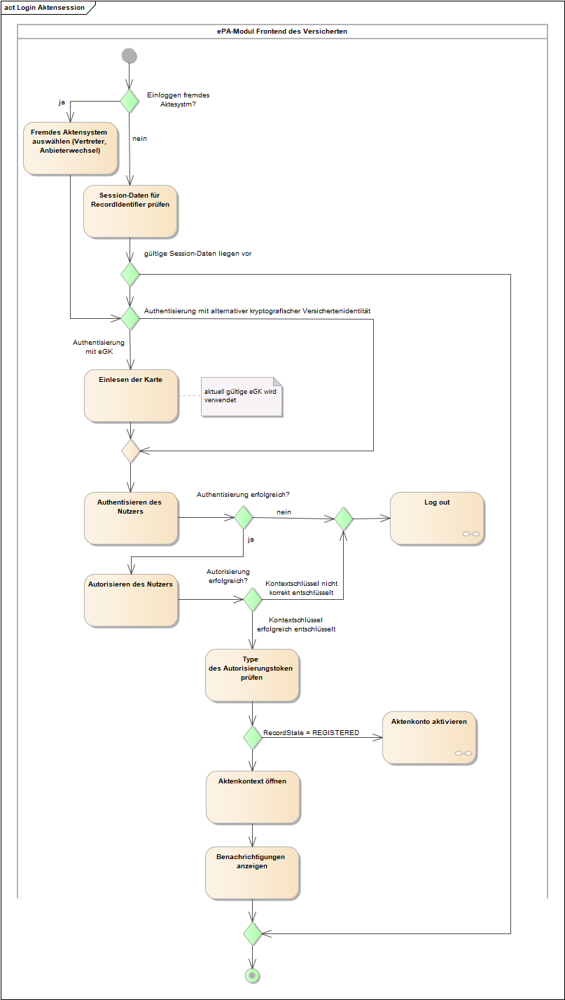
Abbildung 5: Aktivitätsdiagramm "Login Aktensession"
A_15340-01
Das ePA-Frontend des Versicherten MUSS den Anwendungsfall "Login Aktensession" ohne Fehler abbrechen, wenn gültige Session-Daten zu dem RecordIdentifier vorliegen. <=
Gültige Session-Daten liegen vor, wenn die Session-Daten einen Authentisierungstoken und einen Autorisierungstoken beinhalten. Auf eine Prüfung der zeitlichen Gültigkeit der Token wird verzichtet, da eine Synchronität der Systemzeit in der Ablaufumgebung des ePA-FdV mit der den Token ausstellenden Komponente nicht sichergestellt werden kann. Antwortet das ePA-Aktensystem auf einen Operationsaufruf mit dem Fehler, dass ein Token ungültig ist, dann löscht das ePA-FdV die Token aus den Session-Daten (siehe ).
A_15341-01
Das ePA-Frontend des Versicherten MUSS im Anwendungsfall "Login Aktensession", wenn die Authentisierung mittels eGK erfolgt, die Aktivität "Einlesen der Karte" gemäß TAB_FdV_124 umsetzen.
Tabelle 31: TAB_FdV_124 – Login - Einlesen der Karte
| Plattformbaustein PL_TUC_CARD_INFORMATION |
Durch den Plattformbaustein PL_TUC_CARD_INFORMATION werden Statusinformationen der Karte bereitgestellt. |
| Eingangsdaten |
eGK |
| Beschreibung |
Das ePA-FdV MUSS die Karteninformationen in PL_TUC_CARD_INFORMATION auswerten hinsichtlich
Die folgenden Informationen der Karte werden in die Session-Daten übernommen:
|
A_15342
Das ePA-Frontend des Versicherten MUSS, wenn der Anwendungsfall "Login Aktensession" aufgrund der Prüfungen beim Einlesen der Karte abbricht, den Nutzer darauf hinweisen, seine aktuell gültige eGK zu stecken. <=
Authentisieren und Autorisieren
A_15343-01
Das ePA-Frontend des Versicherten MUSS im Anwendungsfall "Login Aktensession" die übergreifende Aktivität "Authentisieren des Nutzers" ausführen. <=
Während der Entschlüsselung des Akten-und Kontextschlüssels werden Zertifikate der TI geprüft. Zuvor ist die Aktualität des Vertrauensraumes der TI sicher zu stellen. Siehe "".
A_15344-01
Das ePA-Frontend des Versicherten MUSS im Anwendungsfall "Login Aktensession" zum Autorisieren des Nutzers die übergreifende Aktivität "Schlüsselmaterial aus ePA-Aktensystem laden" ausführen. Wenn die Aktivität die Informationen AuthenticationAssertion, AuthorizationAssertion, RecordKey (Aktenschlüssel) oder ContextKey (Kontextschlüssel) liefert, dann werden diese in die Session-Daten übernommen. <=
Aktivieren und Migration
Wenn die Autorisierung eine AuthorizationAssertion aber kein AuthorizationKey liefert, dann ist das Aktenkonto des Versicherten noch nicht aktiviert. Das Aktivieren kann über die Anwendungsfälle "Aktenkonto aktivieren" oder "Anbieter wechseln" erfolgen.
Der Status des Aktenkontos (RecordState) lässt sich aus dem Autorisierungstoken Attribut Assertion/AttributeStatement/Attribute mit dem Namen "Zustand des Kontos" ermitteln. Die Information wird in die Session-Daten übernommen.
A_15346-01
Das ePA-Frontend des Versicherten MUSS im Anwendungsfall "Login Aktensession" den Aktenzustand aus dem Autorisierungstoken ermitteln und bei RecordState = REGISTERED den Anwendungsfall ohne Fehler abbrechen und den Anwendungsfall "Aktenkonto aktivieren" starten. <=
A_15681-02
Das ePA-Frontend des Versicherten MUSS im Anwendungsfall "Login Aktensession" den Aktenzustand aus dem Autorisierungstoken prüfen und bei RecordState = REGISTERED_FOR_MIGRATION nur die Operation I_Account_Management_Insurant::ResumeAccount zum Import des Pakets mit den Daten aus der Akte des Versicherten beim alten Anbieter ermöglichen, alle anderen Anwendungsfällen sind mit einem Fehler abzubrechen. <=
Dem Nutzer soll im Falle dieses Abbruchs ein Hinweis gegeben werden, dass vor der Nutzung des Aktenkontos beim neuen Anbieter eine Migration der Daten aus dem Aktenkonto des alten Anbieters durchgeführt werden muss.
Verbindung zur Dokumentenverwaltung
Für die Aktivität "Aktenkonto öffnen" wird zuerst ein sicherer Kanal auf Inhaltsebene zwischen dem ePA-FdV und der VAU der Dokumentenverwaltung aufgebaut. Dafür wird die Schnittstelle I_Document_Management_Connect der Komponente Dokumentenverwaltung genutzt (siehe auch ).
A_15347-01
Das ePA-Frontend des Versicherten MUSS im Anwendungsfall "Login Aktensession" in der Aktivität "Aktenkontext öffnen" für die Schnittstellen zur Komponente Dokumentenverwaltung das Kommunikationsprotokoll gemäß den Vorgaben aus und umsetzen.
<=A_15600-01
Das ePA-Frontend des Versicherten MUSS beim Aufbau des sicheren Kanals zur Dokumentenverwaltung die AuthorizationAssertion aus den Session-Daten der vom ePA-Frontend des Versicherten aufgerufenen Operation als Parameter gemäß [gemSpec_Dokumentenverwaltung#A_15592-*] übergeben. <=
Das ePA-FdV nutzt den abgeleiteten Sitzungsschlüssel, um alle fachlichen Eingangs- und Ausgangsnachrichten zur Dokumentenverwaltung zu ver- bzw. entschlüsseln. Siehe .
A_15348-01
Das ePA-Frontend des Versicherten MUSS im Anwendungsfall "Login Aktensession" in der Aktivität "Aktenkontext öffnen" das Übersenden des Kontextschlüssels gemäß TAB_FdV_126 umsetzen.
Tabelle 32: TAB_FdV_126 – Login - Aktenkontext öffnen - Operation OpenContext
| Vorbedingung |
AuthorizationAssertion und entschlüsselter Kontextschlüssel liegen in Session-Daten vor. |
| I_Document_Management_Connect::OpenContext Request erstellen |
Eingangsdaten:
|
| I_Document_Management_Connect::OpenContext Response verarbeiten |
Rückgabedaten:
|
Benachrichtigungen
Die Anzeige von Benachrichtigungen im Anwendungsfall "Login Aktensession" ist optional gemäß den Konfigurationsdaten. Wird das Login nicht explizit mit dem Start des FdV ausgeführt, sondern erst bei Ausführung eines Anwendungsfalls mit Zugriff auf das ePA-Aktensystem, dann muss der Nutzer zuerst bestätigen, ob die Benachrichtigungen innerhalb des aufgerufenen Anwendungsfalls angezeigt werden sollen.
A_15350
Das ePA-Frontend des Versicherten MUSS, wenn die Konfiguration Benachrichtigungen aktivieren = nein gesetzt ist, die Aktivitäten zum Anzeigen von Benachrichtigungen ignorieren. <=
A_15351
Das ePA-Frontend des Versicherten MUSS, wenn die Konfiguration Benachrichtigungen aktivieren = ja gesetzt ist und der Anwendungsfall "Login Aktensession" nicht zum Start des FdV durchgeführt wird, sondern implizit durch einen anderen Anwendungsfall getriggert wird, beim Nutzer abfragen, ob die Benachrichtigungen angezeigt werden sollen. <=
A_15352-02
Das ePA-Frontend des Versicherten MUSS im Anwendungsfall "Login Aktensession", wenn die Konfiguration Benachrichtigungen aktivieren = ja gesetzt ist, die Protokolldaten der Komponente Dokumentenverwaltung gemäß A_15485-* abfragen und das Ergebnis gemäß der Konfiguration Benachrichtigungszeitraum filtern. Falls gemäß A_15354-* noch kein Wert "Letzte Anmeldung zum Aktenkonto" vorliegt, ist es ausreichend, wenn die Protokolldaten für den Zeitraum der letzten 30 Tage abgefragt werden. Der Versicherte MUSS dann über eine Einschränkung der Protokolldaten informiert werden.
<=
A_15353
Das ePA-Frontend des Versicherten MUSS eine Anzeige für Benachrichtigungen umsetzten, in der die Protokolleinträge für folgende Zugriffe übersichtlich dargestellt werden:
Es gilt die folgende Anforderung aus dem Anwendungsfall "Protokolldaten einsehen" für die Darstellung der Benachrichtigung: "".
A_15354-01
Das ePA-Frontend des Versicherten MUSS nach erfolgreichem Login den Wert "Letzte Anmeldung zum Aktenkonto" für das Aktenkonto in den Konfigurationsdaten aktualisieren. <=
Dieser Anwendungsfall beendet eine Aktensession.
A_15355-01
Das ePA-Frontend des Versicherten MUSS den Anwendungsfall "UC 1.3 - Logout durch einen Nutzer" aus [gemSysL_ePA] gemäß TAB_FdV_127 umsetzen.
Tabelle 33: TAB_FdV_127 – Logout Aktensession
| Name |
Logout Aktensession |
| Auslöser |
|
| Akteur |
Versicherter, berechtigter Vertreter |
| Vorbedingung |
Es besteht eine Aktensession mit gültigen Session-Daten. |
| Nachbedingung |
Die Session-Daten sind gelöscht. |
| Standardablauf |
Aktivitäten im Standardablauf
|
A_15356-01
Das ePA-Frontend des Versicherten MUSS im Anwendungsfall "Logout Aktensession", wenn ein sicherer Kanal zur Dokumentenverwaltung aufgebaut und der Aktenkontext erfolgreich geöffnet wurde, die Aktivität "Aktenkontext schließen" gemäß TAB_FdV_128 umsetzen.
Tabelle 34: TAB_FdV_128 – Logout - Aktenkontext schließen
| Vorbedingung |
AuthorizationAssertion in Session-Daten |
| I_Document_Management_Connect::CloseContext Request erstellen |
|
| I_Document_Management_Connect::CloseContext Response verarbeiten |
HTTP OK oder gematik-Fehlermeldung |
A_17542-01
Das ePA-Frontend des Versicherten MUSS im Anwendungsfall "Logout Aktensession", wenn ein Authentisierungstoken in den Session-Daten gespeichert ist, die Aktivität "Authentisierungstoken abmelden" gemäß TAB_FdV_172 umsetzen.
Tabelle 35: TAB_FdV_172 – Logout - Authentisierungstoken abmelden
| Vorbedingung |
AuthenticationAssertion in Session-Daten |
| I_Authentication_Insurant::LogoutToken Request erstellen |
Eingangsdaten:
|
| I_Authentication_Insurant::LogoutToken Response verarbeiten |
Keine Verarbeitung notwendig |
A_17766-01
Das ePA-Frontend des Versicherten MUSS im Anwendungsfall "Logout Aktensession", wenn für die Authentisierung eine alternative kryptographische Versichertenidentität genutzt wurde und die Schnittstelle I_Remote_Sign_Operations::sign_Data freigeschaltet wurde, den Signaturdienst aufrufen, um eine Freischaltung des Signaturdienstes für den Nutzer zu beenden. <=
Eine Beschreibung der signaturdienstspezifischen Schnittstelle für diese Operation ist in [vesta].
A_15358-01
Das ePA-Frontend des Versicherten MUSS zum Abschluss des Anwendungsfall "Logout Aktensession" alle Session-Daten aus dem lokalen Speicher löschen. <=
Die Session-Daten sind in "" beschrieben.
Der Anwendungsfall "Aktenkonto aktivieren" wird automatisch gestartet, wenn sich beim Login nach der Autorisierung ergibt, dass das Aktenkonto den Status "REGISTERED" hat.
Der Anwendungsfall kann in der GUI auswählbar sein. Dann ist vorab der Anwendungsfall "Login Aktensession" auszuführen.
A_15359
Das ePA-Frontend des Versicherten MUSS, wenn der Versicherte den Anwendungsfall "Aktenkonto aktivieren" über die GUI auswählt, den Anwendungsfall "Login Aktensession" starten. <=
Im Rahmen des Login wird eine Authentisierung und Autorisierung des Nutzers durchgeführt.
A_15360-01
Das ePA-Frontend des Versicherten MUSS den Anwendungsfall "UC 2.1 - Aktenkonto einrichten" aus [gemSysL_ePA] gemäß TAB_FdV_130 umsetzen.
Tabelle 36: TAB_FdV_130 – Aktenkonto aktivieren
| Name |
Aktenkonto aktivieren |
| Auslöser |
|
| Akteur |
Versicherter |
| Vorbedingung |
In den Session-Daten liegt ein Authentisierungstoken und ein Autorisierungstoken mit RecordState = REGISTERED vor. |
| Nachbedingung |
Das Aktenkonto ist aktiviert. Es können fachliche Anwendungsfälle mit dem Aktenkonto durchgeführt werden. |
| Standardablauf |
Aktivitäten im Standardablauf
|
A_15362-01
Das ePA-Frontend des Versicherten MUSS im Anwendungsfall "Aktenkonto aktivieren" den Aktenschlüssel erzeugen. <=
A_15363-01
Das ePA-Frontend des Versicherten MUSS im Anwendungsfall "Aktenkonto aktivieren" den Kontextschlüssel erzeugen. <=
Für das Erzeugen von Schlüsseln ist und zu beachten.
A_15364-01
Das ePA-Frontend des Versicherten MUSS im Anwendungsfall "Aktenkonto aktivieren" einen AuthorizationKey mit
A_15365-01
Das ePA-Frontend des Versicherten MUSS im Anwendungsfall "Aktenkonto aktivieren" für das Hochladen des Schlüsselmaterials in das ePA-Aktensystem die übergreifende Aktivität "Schlüsselmaterial im ePA-Aktensystem speichern" mit dem Eingangsparameter AuthorizationKey = erstellter AuthorizationKey ausführen. Der optionale Parameter NotificationInfoRepresentative wird nicht belegt. <=
Nach erfolgreichem Aufruf dieser Operation hat das Aktenkonto den Status aktiviert. Die folgenden Aktivitäten ermöglichen, dass der Nutzer ohne erneutes Login fachliche Anwendungsfälle (bspw. Berechtigung vergeben, Dokument einstellen) mit dem Aktenkonto ausführen kann.
Das Laden des Schlüsselmaterial aus ePA-Aktensystem laden erfolgt gemäß .
Das Öffnen des Aktenkontext erfolgt gemäß und .
Ein Versicherter kann mit diesem Anwendungsfall den Anbieter seines Aktenkontos wechseln und alle Inhalte zu einem neuen Anbieter übertragen. Hierfür sind mehrere Aktionen durch den Versicherten durchzuführen.
A_21545
Die Steuerung des Anbieterwechsels MUSS über das FdV des neuen Anbieters erfolgen. <=
A_15369-01
Das ePA-Frontend des Versicherten MUSS vor Start des Anwendungsfalls "Anbieter wechseln" den Versicherten darauf hinweisen, dass das Verwaltungsprotokoll nicht zum neuen Anbieter übertragen wird, der Versicherte sich das Verwaltungsprotokoll lokal speichern muss, falls es weiterhin verfügbar sein soll. Der Versicherte MUSS auf die Möglichkeit des signierten Exports der Protokolle hingewiesen werden.
<=
A_15371-01
Das ePA-Frontend des Versicherten MUSS dem Versicherten ermöglichen, die folgenden Registrierungsinformationen des anderen am Wechsel beteiligten Anbieters zu erfassen bzw. auszuwählen:
A_15372-02
Das ePA-Frontend des Versicherten MUSS dem Versicherten die zugriffsberechtigten Leistungserbringerinstitutionen und Vertreter aus dem ePA-Aktensystem des alten Anbieters anzeigen und dem Versicherten die Möglichkeit geben, zu entscheiden, welche der bestehenden Berechtigungen in das ePA-Aktensystem des neuen Anbieters übernommen werden sollen. <=
Die Anzeige der zugriffsberechtigten LEIs und, Vertreter erfolgt mittels Anwendungsfall "Vergebene Berechtigungen anzeigen". Das Ergebnis der Operation I_Authorization_Management_Insurant::getAuthorizationList wird im weiteren Verlauf für die Einrichtung der Berechtigungen im neuen Aktenkonto genutzt.
A_15370-02
Das ePA-Frontend des Versicherten MUSS den Anwendungsfall "UC 2.5 - Anbieter wechseln" aus [gemSysL_ePA] gemäß TAB_FdV_131 umsetzen.
Tabelle 37: TAB_FdV_131 – Anbieter wechseln
| Name |
Anbieter wechseln |
| Auslöser |
|
| Akteur |
Versicherter |
| Vorbedingung |
Der Versicherte hat ein neues Aktenkonto bei einem anderen Anbieter eröffnet. Das neue Aktenkonto ist bereit für den Datenimport. Der Versicherte ist im Aktenkonto des alten Anbieters angemeldet. Aktenschlüssel und Kontextschlüssel liegen unverschlüsselt in den Session-Daten vor. Der Versicherte hat die Registrierungsinformationen des alten Anbieters erfasst/ausgewählt. Der Versicherte hat eine Auswahl getroffen, welche Zugriffsberechtigungen zum neuen Anbieter übernommen werden sollen. |
| Nachbedingung |
Das Aktenkonto beim alten Anbieter befindet sich im Status START_MIGRATION. Es ist kein Zugriff mehr möglich. Der neue Anbieter ist informiert, dass zeitnah ein Transferpaket für den Import in das Aktenkonto vom alten Anbieter bereitgestellt wird. Die Berechtigungen sind vom Aktenkonto des alten in das des neuen Anbieters übernommen worden. |
| Standardablauf |
Aktivitäten im Standardablauf
|
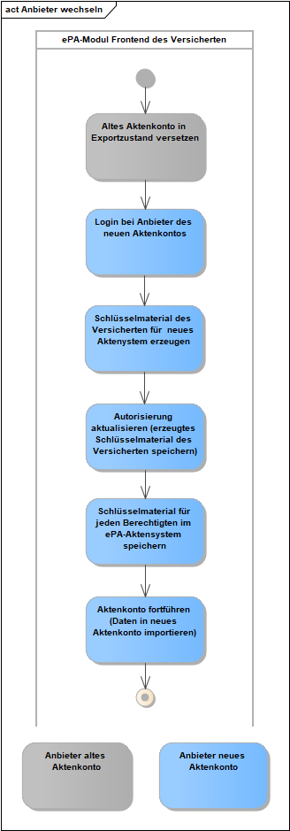
Abbildung 6: Aktivitätsdiagramm "Anbieter wechseln"
A_15377-02
Das ePA-Frontend des Versicherten MUSS im Anwendungsfall "Anbieter wechseln" die Aktivität "Aktenkonto in Exportzustand versetzen" gemäß TAB_FdV_132 umsetzen.
Tabelle 38: TAB_FdV_132 – Anbieter wechseln - Aktenkonto in Exportzustand versetzen
| I_Account_Management_Insurant::SuspendAccount Request erstellen |
Eingangsparameter:
|
| I_Account_Management_Insurant::SuspendAccount Response verarbeiten |
Rückgabedaten:
|
Nachdem das Aktenkonto den Zustand SUSPENDED ("bereit für Anbieterwechsel") erhalten hat, kann der Versicherte oder ein berechtigter Nutzer nicht mehr auf das Aktenkonto zugreifen.
A_15378-01
Das ePA-Frontend des Versicherten MUSS im Anwendungsfall "Anbieter wechseln" die folgenden Aktivitäten aus dem Anwendungsfall "Login Aktensession" mit den Daten des Aktenkontos beim neuen Anbieter ausführen, um sich beim neuen Aktenkonto einzuloggen:
Das Authentisieren des Nutzers erfolgt mittels der übergreifenden Aktivität "Authentisieren des Nutzers".
Die Autorisierung des Nutzers erfolgt gemäß . Die Operation getAuthorizationKeys liefert ein Autorisierungstoken mit RecordState = REGISTERED_FOR_MIGRATION und kein Schlüsselmaterial.
Der Aufbau des sicheren Kanals zur Dokumentenverwaltung erfolgt gemäß A_15347-*.
Das Öffnen des Aktenkontextes erfolgt gemäß unter Nutzung des Autorisierungstoken mit RecordState = REGISTERED_FOR_MIGRATION und dem Kontextschlüssel des Aktenkontos des alten Anbieters.
A_21839
Das ePA-Frontend des Versicherten MUSS das ENC-VAU-Zertifikat des Betreibers im UseCase Anbieterwechsel verfügbar machen. <=
Hinweis: Das ENC-VAU-Zertifikat des Betreibers darf im ePA-FdV persistent gespeichert werden.
A_15374-01
Das ePA-Frontend des Versicherten MUSS im Anwendungsfall "Anbieter wechseln" einen AuthorizationKey mit dem für den Versicherten gesicherten Aktenschlüssel und Kontextschlüssel sowie AuthorizationType = DOCUMENT_AUTHORIZATION für den Versicherten erstellen. <=
A_15375-01
Das ePA-Frontend des Versicherten MUSS im Anwendungsfall "Anbieter wechseln" für das Hochladen des Schlüsselmaterials in das ePA-Aktensystem des neuen Anbieters die übergreifende Aktivität "Schlüsselmaterial im ePA-Aktensystem speichern" mit dem Eingangsparameter AuthorizationKey = erstellter AuthorizationKey ausführen. Der optionale Parameter NotificationInfoRepresentative wird nicht belegt. <=
Die bestehenden Berechtigungen werden in das ePA-Aktensystem des neuen Anbieters übernommen.
A_15598-02
Das ePA-Frontend des Versicherten MUSS im Anwendungsfall "Anbieter wechseln", wenn die Berechtigungen in das Aktenkonto des neuen Anbieters übernommen werden sollen, für jede aus dem Aktenkonto des alten Anbieters ermittelte Berechtigung einer LEI einen AuthorizationKey erstellen und das Schlüsselmaterial in das ePA-Aktensystem des neuen Anbieters laden. <=
A_22669
Das ePA-Frontend des Versicherten MUSS im Anwendungsfall "Anbieter wechseln", wenn die Berechtigungen in das Aktenkonto des neuen Anbieters übernommen werden sollen, für jede aus dem Aktenkonto des alten Anbieters ermittelte Berechtigung einer DiGA einen AuthorizationKey erstellen und das Schlüsselmaterial in das ePA-Aktensystem des neuen Anbieters laden. <=
Die Berechtigung für einen Vertreter kann nur übernommen werden, wenn dem Versicherten die E-Mailadresse des Vertreters für die Geräteautorisierung bekannt ist. Hierbei wird davon ausgegangen, dass es sich bei dem Vertreter um eine Vertrauensperson handelt und der Versicherte die Daten kennen könnte. Anderenfalls kann die Berechtigung für den Vertreter nicht übernommen werden und muss mittels dem Anwendungsfall "Vertretung einrichten" zusammen mit dem Vertreter neu eingerichtet werden.
A_15635-01
Das ePA-Frontend des Versicherten MUSS es dem Nutzer im Anwendungsfall "Anbieter wechseln" ermöglichen, bei der Übernahme der Berechtigungen in das Aktenkonto des neuen Anbieters für jeden Vertreter die Benachrichtigungsadresse für die Geräteautorisierung zu erfassen. Dabei MUSS die bestehende Benachrichtigungsadresse jedes Verteters mittels GetNotificationInfo ermittelt werden, um sie dem Versicherten zur Übernahme anzubieten. <=
A_15636-01
Das ePA-Frontend des Versicherten MUSS im Anwendungsfall „Anbieter wechseln“, wenn die Berechtigungen in das Aktenkonto des neuen Anbieters übernommen werden sollen und die Benachrichtigungsadresse des Vertreters für die Geräteautorisierung bekannt ist, für jede aus dem Aktenkonto des alten Anbieters heruntergeladene Berechtigung eines Vertreters das Schlüsselmaterial in das ePA-Aktensystem laden. <=
Das Hochladen des Schlüsselmaterials in das ePA-Aktensystem erfolgt mit der übergreifende Aktivität "Schlüsselmaterial im ePA-Aktensystem speichern" mit dem EingangsparameterAuthorizationKey = erstellter AuthorizationKey. Der optionale Parameter NotificationInfoRepresentative wird für LEI, DiGA und KTR nicht belegt.
Die Information, welche Geräte durch Nutzer autorisiert sind, wird nicht übertragen. D.h. der Nutzer muss bei der nächsten Anmeldung am Aktenkonto des neuen Anbieters sein GdV autorisieren.
A_15379-01
Das ePA-Frontend des Versicherten MUSS im Anwendungsfall "Anbieter wechseln" die Aktivität "Aktenkonto fortführen" gemäß TAB_FdV_133 beim Aktenkonto des neuen Anbieters umsetzen.
Tabelle 39: TAB_FdV_133 – Anbieter wechseln - Aktenkonto fortführen
| I_Account_Management_Insurant::ResumeAccount Request erstellen |
Eingangsparameter:
|
| I_Account_Management_Insurant::ResumeAccount Response verarbeiten |
Rückgabedaten:
|
Der Vorgang des Anbieterwechsels erfolgt aktensystemseitig asynchron, d. h. die Operation ist aus Sicht des FdV nach kurzer Zeit abgeschlossen, läuft im Backend jedoch weiter. Der Nutzer ist darauf hinzuweisen, dass er Zugriff auf sein Aktenkonto erst nach Abschluss der Datenmigration erhalten kann und dass diese länger dauern kann.
Der Versicherte hat jederzeit das Recht, seine ePA endgültig zu schließen.
A_21128
Falls das ePA-FdV dem Nutzer eine Funktion zum Schließen seiner Akte anbietet, MUSS das eA-FdV beim Schließen einer Akte über das ePA-FdV den Versicherten darauf hinweisen, seine Protokolldaten aus der Akte für eine weitere Verwendung selbstständig zu exportieren, da diese nach Schließen der Akte im Aktensystem nur noch eingeschränkt und nicht mehr vollständig für datenschutzrechtliche Auskünfte zur Verfügung stehen. Der Versicherte MUSS auf die Möglichkeit des signierten Exports der Protokolle hingewiesen werden. <=
A_21129
Das ePA-FdV MUSS dem Nutzer eine Funktion zum Export signierter Protokolldaten aus der Akte unter Nutzung der Operationen I_Authentication_Insurant::getSignedAuditEvents (nur wenn der Nutzer der Kontoinhaber ist), I_Authorization_Management_Insurant:: getSignedAuditEvents und I_Account_Management_Insurant::getSignedAuditEvents bereitstellen. <=
Dieses Kapitel beschreibt den Anwendungsfall Umschlüsselung. In den folgenden Abbildungen ist in einem Sequenzdiagramm der Ablauf der Umschlüsselung mit den einzelnen Akteuren ePA-FdV, Autorisierung, Dokumentenverwaltung und SGD1/2 dargestellt. Grün eingefärbte Pfeile bezeichnen signierte Rückgabewerte. Die Signaturen werden bei der Weiterleitung der Rückgabewerte mit an den Empfänger geleitet. Dieser validiert nach Empfang des Wertes und der Signatur diese auf Gültigkeit und darauf, dass der Signaturerstellungszeitpunkt nicht zu weit in der Vergangenheit liegt.
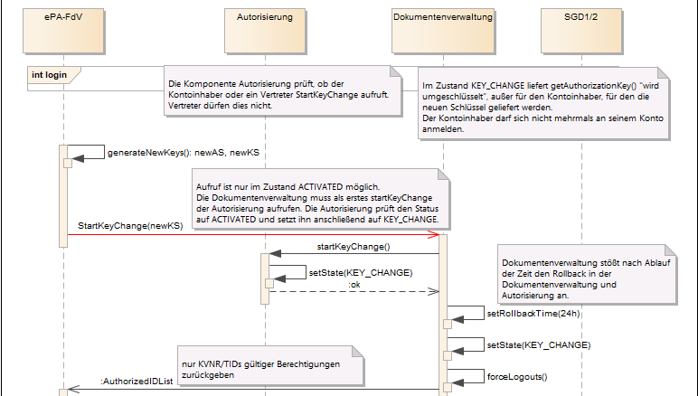
Abbildung 7: Umschlüsselung I
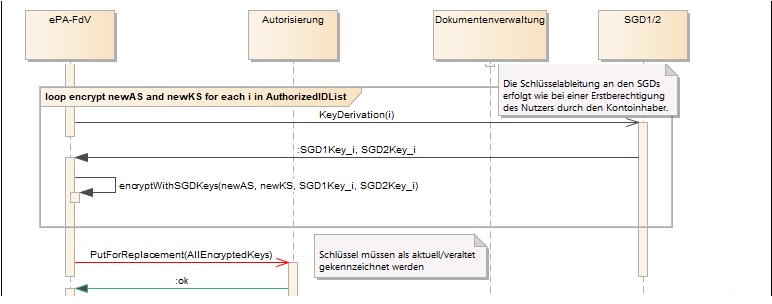
Abbildung 8: Umschlüsselung II
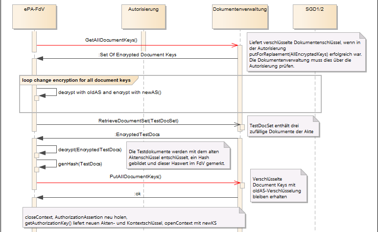
Abbildung 9: Umschlüsselung III
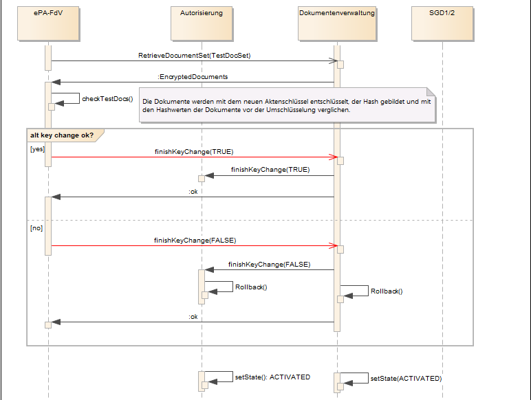
Abbildung 10: Umschlüsselung IV
A_20507-01
Das ePA-Frontend des Versicherten MUSS während der Umschlüsselung bei allen Funktionsaufrufen an die Dokumentenverwaltung, die Autorisierungskomponente und die Schlüsselgenerierungsdienste nach Ablaufen der Timeout-Zeit von mindestens 60 Minuten die Umschlüsselung abbrechen und die Methode finishKeyChange(FALSE) bei der Komponente Dokumentenverwaltung aufrufen. <=
Wenn das Frontend des Versicherten auf einem Smartphone läuft, dann kann es durchaus die Verbindung in einem Funkloch verlieren und nach kurzer Zeit wieder herstellen. Weiterhin kann es sein, dass das Smartphone sich wegen erschöpften Akkumulators abschaltet und der Nutzer es innerhalb kurzer Zeit an das Ladegerät anschließt und die Umschlüsselung fortsetzen möchte. Diese Verbindungsabbrüche sollen nicht zum Abbrechen des Umschlüsselungsprozesses führen.
A_20725-01
Das ePA-Frontend des Versicherten MUSS während der Umschlüsselung dem Nutzer anbieten, die Umschlüsselung abzubrechen. Wenn der Nutzer die Umschlüsselung abbricht, dann sendet das FdV die Nachricht finishKeyChange(FALSE) an die Dokumentenverwaltung. Die Dokumentenverwaltung ihrerseits sendet dann die Nachricht finishKeyChange(FALSE) an die Komponente Autorisierung. <=
Die Komponenten Autorisierung und Dokumentenverwaltung führen nach Erhalt der Nachricht finishKeyChange(FALSE) die Methode Rollback() durch und stellen den Zustand von vor der Umschlüsselung wieder her.
A_20723
Das ePA-Frontend des Versicherten MUSS während der Umschlüsselung an der Oberfläche dem Nutzer anzeigen, dass die Akte im Zustand "KEY_CHANGE" ist. <=
A_20724
Das ePA-Frontend des Versicherten SOLL während der Umschlüsselung alle Aktivitäten verhindern, die nicht zum Umschlüsselungsprozess gehören. <=
Das Aktensystem lehnt im Zustand KEY_CHANGE alle sonstigen Aktivitäten vom FdV ab, daher sollte das FdV dem Benutzer auch keine weiteren Aktivitäten anbieten.
A_20479-06
Das Frontend des Versicherten muss den Anwendungsfall "Umschlüsselung" für den Versicherten umsetzen.
| Name |
Umschlüsselung |
| Auslöser |
Aufruf des Anwendungsfalls in der GUI |
| Akteur |
Versicherter |
| Vorbedingung |
Es besteht eine Aktensession mit gültigen Session-Daten. Die Akte befindet sich im Zustand "ACTIVATED". |
| Nachbedingung |
|
| Standardablauf |
Aktivitäten im Standardablauf
|
Dieses Kapitel beschreibt Anwendungsfälle zur Vergabe und Administration von Berechtigungen zum Zugriff auf das Aktenkonto.
Im FdV können nur Berechtigungen an LEI und DiGA vergeben werden, die im Verzeichnisdienst (VZD) der TI registriert sind.
Die zulässigen Berechtigungsvergaben für die verschiedenen Leistungserbringerinstitutionen, Kostenträger, DiGA und Vertreter werden vom Aktensystem durchgesetzt. Das ePA-Frontend des Versicherten kann die grundsätzlich gesetzlich möglichen Berechtigungsvergaben nicht erweitern, sondern nur weiter einschränken.
A_15382
Das ePA-Frontend des Versicherten MUSS, bevor es eine Berechtigung an eine LEI vergibt oder ändert, eine Bestätigung der gewählten Berechtigungskonfiguration vom Nutzer einholen. <=
Die Anzeige kann z.B. als Hilfetext vom Nutzer bei der Berechtigungsvergabe erreichbar sein.
A_15380
Das ePA-Frontend des Versicherten MUSS es dem Nutzer ermöglichen, eine oder mehrere LEI im Verzeichnisdienst zu suchen und für die Vergabe von Berechtigungen auszuwählen. <=
Für die Umsetzung der Suche siehe " ".
A_20196-01
Das ePA-Frontend des Versicherten MUSS dem Nutzer die aus dem Zertifikat C.HCI.ENC aus über die professionOID aus GS-A_4443-* ermittelte Berufsgruppe der Leistungserbringerinstitution bei der Berechtigungsvergabe anzeigen. <=
A_20254-01
Das ePA-Frontend des Versicherten MUSS es dem Nutzer ermöglichen, sich die Dokumente (anhand der zurückgegeben UniqueIDs) anzeigen zu lassen, auf die eine konkrete Leistungserbringerinstitution des vorliegenden Policy Document berechtigt werden kann. Dazu MUSS ein Policy Document für eine aktensystemseitige Simulation hochgeladen werden können (vgl. A_21705). <=
A_15383-02
Das ePA-Frontend des Versicherten MUSS den Anwendungsfall "UC 3.1 - Berechtigung durch einen Versicherten vergeben" aus [gemSysL_ePA] für jede LEI, für die eine Berechtigung vergeben werden soll, gemäß TAB_FdV_134 umsetzen.
Tabelle 40: TAB_FdV_134 – Berechtigung an LEI für Aktenkonto vergeben
| Name |
Berechtigung an LEI für Aktenkonto vergeben |
| Auslöser |
|
| Akteur |
Versicherter oder berechtigter Vertreter |
| Vorbedingung |
Es besteht eine Aktensession mit gültigen Session-Daten. Ein Verschlüssellungszertifikat, die Telematik-ID und der Name der LEI sind bekannt. Die Berechtigung widerspricht nicht [gemSpec_Dokumentenverwaltung#Tab_Dokv - Zugriffsunterbindungsregeln] Der Nutzer hat die Parameter für die Berechtigungen ausgewählt und die Vergabe der Berechtigung bestätigt. |
| Nachbedingung |
Die LEI ist zum Zugriff auf das Aktenkonto berechtigt. Das notwendige Schlüsselmaterial ist in der Autorisierung hinterlegt. Ein Policy Document für den LEI ist in der Dokumentenverwaltung hinterlegt. |
| Standardablauf |
Aktivitäten im Standardablauf
|
A_20198-02
Das ePA-Frontend des Versicherten MUSS den Anwendungsfall "Anzeige der auf ein Dokument berechtigten LEI" gemäß TAB_FdV_178 umsetzen.
Tabelle 41: TAB_FdV_178 Anzeige der auf ein Dokument berechtigten LEI
| Name |
Anzeige der auf ein Dokument berechtigten LEI |
| Auslöser |
|
| Akteur |
Versicherter oder berechtigter Vertreter |
| Vorbedingung |
Es besteht eine Aktensession mit gültigen Session-Daten. Der Nutzer hat ein Dokument ausgewählt |
| Nachbedingung |
Der Nutzer hat Informationen darüber, welche Leistungserbringerinstitutionen auf das Dokument Zugriff haben. |
| Standardablauf |
Aktivitäten im Standardablauf
|
A_20199-01
Das ePA-Frontend des Versicherten MUSS den Anwendungsfall "Ändern der Vertraulichkeitsstufe eines Dokumentes" gemäß TAB_FdV_179 umsetzen.
Tabelle 42: TAB_FdV_179: Ändern der Vertraulichkeitsstufe eines Dokumentes
| Name | Ändern der Vertraulichkeitsstufe eines Dokumentes |
| Auslöser |
|
| Akteur | Versicherter oder berechtigter Vertreter |
| Vorbedingung | Es besteht eine Aktensession mit gültigen Session-Daten. Der Nutzer hat ein Dokument ausgewählt |
| Nachbedingung | Im Aktensystem ist die neue Vertraulichkeitsstufe des Dokumentes gespeichert |
| Standardablauf |
|
A_20201-01
Das ePA-Frontend des Versicherten MUSS den Anwendungsfall "Ändern der Zugriffsberechtigung einer LEI auf Dokumentenkategorien" gemäß TAB_FdV_180 umsetzen.
| Name | Ändern der Zugriffsberechtigung einer LEI auf Dokumentenkategorien |
| Auslöser | Aufrufen des Anwendungsfalls in der GUI |
| Akteur | Versicherter oder berechtigter Vertreter |
| Vorbedingung | Es besteht eine Aktensession mit gültigen Session-Daten. |
| Nachbedingung | Im Aktensystem ist die geänderte Zugriffsberechtigung einer LEI auf Dokumentenkategorien gespeichert |
| Standardablauf |
|
A_19306
Das ePA-Frontend des Versicherten MUSS verhindern, dass Nutzer Berechtigungen erteilen, die der Tabelle [gemSpec_Dokumentenverwaltung#Tab_Dokv_030 - Zugriffsunterbindungsregeln] widersprechen. <=
A_15384-01
Das ePA-Frontend des Versicherten MUSS im Anwendungsfall "Berechtigung an LEI für Aktenkonto vergeben" einen AuthorizationKey mit AuthorizationType = DOCUMENT_AUTHORIZATION und validTo entsprechend der vom Nutzer festgelegten Berechtigungsdauer für die zu berechtigende LEI erstellen. <=
A_15385-01
Das ePA-Frontend des Versicherten MUSS im Anwendungsfall "Berechtigung an LEI für Aktenkonto vergeben" für das Hochladen des Schlüsselmaterials in das ePA-Aktensystem die übergreifende Aktivität "Schlüsselmaterial im ePA-Aktensystem speichern" mit dem Eingangsparameter AuthorizationKey = erstellter AuthorizationKey ausführen. Der optionale Parameter NotificationInfoRepresentative wird nicht belegt. <=
A_15386-01
Das ePA-Frontend des Versicherten MUSS im Anwendungsfall "Berechtigung an LEI für Aktenkonto vergeben" ein Policy Document für den zu Berechtigenden entsprechend den für die Berechtigung ausgewählten Parametern erstellen. <=
Für Informationen zu Policy Documents und deren Nutzungsvorgaben siehe "".
A_15387-01
Das ePA-Frontend des Versicherten MUSS im Anwendungsfall "Berechtigung an LEI für Aktenkonto vergeben" zum Hochladen des Policy Documents in die Dokumentenverwaltung die übergreifende Aktivität "Dokumentenset in Dokumentenverwaltung hochladen" mit einer Provide And Register Document Set-b Message für Policy Documents ausführen. <=
A_20066
Das ePA-Frontend des Versicherten MUSS dem Nutzer anzeigen, in welcher Weise (z.B. nur Lesen, nur Schreiben, Lesen und Schreiben und Löschen) das Aktensystem für eine berechtigte LEI für ein konkretes Dokument den Zugriff ermöglicht. <=
Damit kann der Versicherte vor dem Besuch einer Leistungserbringerinstitution kontrollieren, auf welche Dokumente die Leistungserbringerinstitution lesenden bzw. löschenden Zugriff während der Behandlung hat.
A_20109-04
Das ePA-Frontend des Versicherten MUSS es dem Nutzer ermöglichen, die zeitliche Begrenzung für eine Leistungserbringerinstitution für die erteilte Zugriffsberechtigung zu konfigurieren. Folgende Optionen MUSS das ePA-Frontend anbieten:
Das Aktensystem setzt folgende Regeln um: Die kategorienbasierte Berechtigung in Form eines Policy Document berechtigt eine LEI abhängig von den Zugriffsunterbindungsregeln auch zum Einstellen eines Dokuments. Diese Autorisierung kann über Vertraulichkeitsstufen weiter eingeschränkt werden. Der lesende Zugriff auf Dokumente und Ordner kann weiterhin feingranular gewährt oder entzogen werden ("Allowlisting" und "Denylisting).
Bei der kategorienbasierten Berechtigung wird der Zugriff auf die vorhandenen Dokumente der elektronischen Patientenakte in Dokumentenkategorien organisiert. Diese sind in der Spezifikation gemSpec_DM_ePA aufgeführt. Die Zuordnung eines einzelnen Dokumentes zu einer einzelnen Dokumentenart legt (mit Ausnahme der Dokumentenarten Dokumente des Versicherten, Dokumente einer DiGA und der Kostenträgerdokumente) die ePA-Dokumentenverwaltung fest. Alle Dokumente, die der Versicherte selbst einstellt, sind immer der Kategorie Dokumente des Versicherten zugeordnet. Eine DiGA kann ausschließlich DiGA-Dokumente einstellen. Ein Kostenträger kann ausschließlich Kostenträgerdokumente einstellen.
Der Versicherte kann über das ePA-Frontend des Versicherten einer einzelnen Leistungserbringerinstitution den Zugriff auf einzelne Dokumentenkategorien erteilen oder entziehen.
A_19685-01
Das ePA-Frontend des Versicherten MUSS dem Nutzer die dem Dokument zugeordnete Dokumentenkategorie, die in der gemSpec_DM_ePA in den Anforderungen A_14761-* und A_19388-* aufgeführt sind, anzeigen können. <=
A_19686-02
Das ePA-Frontend des Versicherten MUSS dem Nutzer ermöglichen, eine oder mehrere LEI, die über die Anforderung A_15380 gefunden wurden, den Zugriff auf eine oder mehrere Dokumentenkategorien zu ermöglichen. <=
A_19989-01
Das ePA-Frontend des Versicherten MUSS bei der kategorienbasierten Berechtigung die ProfessionOID der Leistungserbringerinstitution aus dem Zertifikat C.HCI.ENC (Extension Admission) der Leistungserbringerinstitution ermitteln.
<=
A_19687-01
Das ePA-Frontend des Versicherten MUSS bei der kategorienbasierten Berechtigung die Zugriffsunterbindungsregeln aus [gemSpec_Dokumentenverwaltung#Tab_Dokv_030 - Zugriffsunterbindungsregeln] beachten. Daraus folgt, dass dem Nutzer für eine ausgewählte Leistungserbringerinstitution nur diejenigen Dokumentenkategorien angezeigt werden, für die diese tatsächlich berechtigt werden kann. <=
Wenn die Nutzerin des ePA-Frontend des Versicherten als Leistungserbringerinstitution eine Hebamme auswählt, dann hat diese weniger mögliche Zugriffsrechte als zum Beispiel ein Hausarzt. Das ePA-Frontend des Versicherten darf dann für die Hebamme nur die nach [gemSpec_Dokumentenverwaltung#Tab_Dokv_030 - Zugriffsunterbindungsregeln] möglichen Berechtigungen anzeigen.
A_19690
Das ePA-Frontend des Versicherten KANN dem Nutzer die zugeordnete Dokumentenkategorie eines Dokumentes durch typografische Auszeichnung wie etwa Schriftfarbe, Hintergrundfarbe,Schriftart oder auch die Anordnung in Gruppen optisch kennzeichnen. <=
A_19691
Das ePA-Frontend des Versicherten MUSS dem Nutzer anzeigen, auf welche Dokumentenkategorien eine einzelne Leistungserbringerinstitution zugreifen darf. <=
Damit kann der Nutzer vor dem Besuch einer Leistungserbringerinstitution sehen, welche Dokumentenkategorien der ePA bei der LEI sichtbar sind.
Ein Dokument kann sich in einer Dokumentenkategorie befinden, für die eine Leistungserbringerinstitution zugriffsberechtigt ist, über die dokumentenspezifische Berechtigung könnte der Leistungserbringerinstitution hingegen der Zugriff auf dieses Dokument entzogen worden sein. Im Resultat wird von der ePA-Dokumentenverwaltung durchgesetzt, dass diese Leistungserbringerinstitution keinen Zugriff auf das Dokument hat.
A_19692
Das ePA-Frontend des Versicherten MUSS dem Nutzer anzeigen, welche der vom Aktensystem durchgesetzten Zugriffsregeln bezüglich Lesen, Schreiben und Löschen für eine einzelne Dokumentenkategorie für eine einzelne Leistungserbringerinstitution gelten. <=
A_19693
Das ePA-Frontend des Versicherten MUSS dem Nutzer jederzeit ermöglichen, einmal getroffene Entscheidungen bezüglich der Zugriffsberechtigung für einzelne Dokumentenkategorien zurückzunehmen und neu zu vergeben. <=
A_19698-01
Das ePA-Frontend des Versicherten MUSS bei der Erteilung einer Berechtigung für den Zugriff auf eine Dokumentenkategorie ein Policy Document für diese Leistungserbringerinstitution erzeugen und in der ePA-Dokumentenverwaltung speichern. Dieses muss in ihren Regeln die Freigabe der einzelnen Dokumentenkategorien enthalten. Wenn es für die LEI noch kein Policy Document gibt, dann muss das ePA-Frontend des Versicherten diese erstellen. <=
Bei der kategorienbasierten Berechtigung kann der Zugriff auf die vorhandenen Dokumente einer Dokumentenkategorie weiterhin in drei Vertraulichkeitsstufen näher festgelegt werden. Dabei werden die Vertraulichkeitsstufen normal, vertraulich und streng vertraulich verwendet. Eine einzelne Leistungserbringerinstitution kann entweder Zugriff auf alle Dokumente der Vertraulichkeitsstufe normal oder auf die Vertraulichkeitsstufen normal und vertraulich erhalten. Es ist auch möglich, einen generellen Zugriff auf diese beiden oder einer der beiden Vertraulichkeitsstufen zu vergeben. Dazu müssen in einer Autorisierung zusammen mit einer Vertraulichkeitsstufe alle Dokumentenkategorien für einen Zugriff ausgewählt werden.
Der Zugriff auf Dokumente der Vertraulichkeitsstufe streng vertraulich ist der Leistungserbringerinstitution nur dann möglich, wenn eine gesonderte Freigabe über eine Allowlist vorgenommen wird.
Eine einmal getroffene Entscheidung bezüglich der Zuordnung eines Dokumentes zu einer Vertraulichkeitsstufe und bezüglich des Zugriffs einer Leistungserbringerinstitution kann vom Versicherten durch das ePA-Frontend des Versicherten jederzeit revidiert werden.
A_19566-02
Das ePA-Frontend des Versicherten MUSS dem Nutzer die Möglichkeit geben, bei der kategorienbasierten Berechtigungsvergabe pro Kategorie ein normales oder ein erweitertes Zugriffsrecht auszuwählen. <=
A_20177-01
Das ePA-Frontend des Versicherten MUSS die Operation I_Document_Management_Insurant::RestrictedUpdateDocumentSet ausschließlich dafür verwenden, um die Zugriffsberechtigungen für LEI auf Dokumente in der grobgranularen Berechtigungsverwaltung aufgrund einer Interaktion mit dem Versicherten zu verändern. Es darf ausschließlich der DocumentEntry.confidentialityCode am FdV durch ein Metadaten-Update geändert werden.
<=
Beim Aufruf von I_Document_Management_Insurant::RestrictedUpdateDocumentSet muss immer für "previousVersion" in der Nachricht der Wert "1" angegeben werden, da der Aufruf seitens der ePA-Dokumentenverwaltung nicht für eine echte Versionierung des alten Dokuments genutzt wird. Serverseitig wird DocumentEntry.version entsprechend nicht verwaltet und besitzt standardmäßig deshalb immer den impliziten Wert 1.
A_21232
Das ePA-Frontend des Versicherten MUSS dem Nutzer die Konfiguration des Defaultwertes der Vertraulichkeitsstufe beim Einstellen von Dokumenten jederzeit ermöglichen. <=
Das Abspeichern des Defaultwertes erfolgt lokal im ePA-FdV, d.h. bei Nutzung eines weiteren Gerätes ist dieser Defaultwert nicht bekannt.
A_20178-01
Das ePA-Frontend des Versicherten MUSS beim Einstellen von Dokumenten den vom Nutzer konfigurierten Defaultwert der Vertrauensstufe vorschlagen. <=
A_19567-02
Das ePA-Frontend des Versicherten MUSS bei allen Dokumenten die vom Nutzer ausgewählte Vertraulichkeitsstufe in den Metadaten jedes Dokuments setzen. <=
A_19578-02
Das ePA-Frontend des Versicherten MUSS, wenn der Nutzer seine Dokumente mittels der kategorienbasierten Berechtigung freigeben möchte, bei diesen Dokumenten die vom Nutzer ausgewählte Vertraulichkeitsstufe über folgende confidentialityCodes abbilden:
A_19568-01
Das ePA-Frontend des Versicherten MUSS es dem Nutzer ermöglichen, einer oder mehreren Leistungserbringerinstitutionen, die über die Anforderungen A_15380 gefunden wurden, eines der folgenden Zugriffsrechte zu erteilen:
Eine Leistungserbringerinstitution, welche das einfache Zugriffsrecht erteilt wurde, hat nur Zugriff auf Dokumente in der ePA mit der Vertraulichkeitsstufe normal. Eine Leistungserbringerinstitution, welcher das erweitere Zugriffsrecht erteilt wurde, hat nur Zugriff auf Dokumente in der ePA mit den Vertraulichkeitsstufen normal und vertraulich.
A_19577
Das ePA-Frontend des Versicherten KANN dem Nutzer die Vertraulichkeitsstufe eines Dokumentes durch typografische Auszeichnung wie etwa Schriftfarbe, Hintergrundfarbe,Schriftart oder auch die Anordnung in Gruppen optisch kennzeichnen. <=
Mögliche Anzeigen wäre z. B: "LEI hat erweitertes Zugriffsrecht mit Freigabe der Kategorie Arztbrief und wurde nicht explizit einzeln ausgeschlossen.", "LEI hat explizite Einzelfreigabe für dieses Dokument.", "LEI hat kein Zugriffsrecht für dieses Dokument"
A_19580
Das ePA-Frontend des Versicherten MUSS es dem Nutzer ermöglichen, die Vertraulichkeitsstufe eines Dokumentes von normal in vertraulich zu ändern. <=
A_19581
Das ePA-Frontend des Versicherten MUSS es dem Nutzer ermöglichen, die Vertraulichkeitsstufe eines Dokumentes von normal in streng vertraulich zu ändern. <=
A_19582
Das ePA-Frontend des Versicherten MUSS es dem Nutzer ermöglichen, die Vertraulichkeitsstufe eines Dokumentes von vertraulich in normal zu ändern. <=
A_19583
Das ePA-Frontend des Versicherten MUSS es dem Nutzer ermöglichen, die Vertraulichkeitsstufe eines Dokumentes von vertraulich in streng vertraulich zu ändern. <=
A_19584
Das ePA-Frontend des Versicherten MUSS es dem Nutzer ermöglichen, die Vertraulichkeitsstufe eines Dokumentes von streng vertraulich in normal zu ändern. <=
A_19585
Das ePA-Frontend des Versicherten MUSS es dem Nutzer ermöglichen, die Vertraulichkeitsstufe eines Dokumentes von streng vertraulich in vertraulich zu ändern. <=
A_19588
Das ePA-Frontend des Versicherten MUSS beim Erteilen einer einfachen Zugriffsberechtigung für die Leistungserbringerinstitution in der APPC-Policy das einfache Zugriffsrecht über den confidentialityCode normal abbilden. <=
A_19589
Das ePA-Frontend des Versicherten MUSS beim Erteilen einer erweiterten Zugriffsberechtigung für die Leistungserbringerinstitution in der APPC-Policy das erweiterte Zugriffsrecht über die confidentialityCodes normal und restricted abbilden. <=
Bei der dokumentenspezifischen oder feingranularen Berechtigung wird der Zugriff einer Leistungserbringerinstitution auf die vorhandenen Dokumente der elektronischen Patientenakte auf der Ebene einzelner Dokumente organisiert. Dazu erzeugt das ePA Frontend des Versicherten für jedes freizugebende Dokument (d.h. intern pro documentEntry.entryUUID) einen Eintrag auf einer sogenannten Allowlist, um einen Zugriff zu gewähren. Ein explizites Verbot kann der Versicherte über eine sogenannte Denylist aussprechen. Auf einer Allow- oder Denylist kann auch ein Ordner (d.h. intern pro Folder.entryUUID) der Sammlungstypen uniform und mixed stehen, um z.B. bei potentiell mehreren Pässen spezifische Zugriffe zu untersagen (welche u.U. durch eine Freigabe über die Dokumentenkategorien möglich wären). Beim Aktualisieren der Allowlist- oder Denylist-Einträge muss das ePA-Frontend des Versicherten sicherstellen, dass diese Policies keine widersprüchlichen Einträge enthalten.
A_19768
Das ePA-Frontend des Versicherten MUSS dem Nutzer ermöglichen, einer vorher ausgewählten LEI den Zugriff auf ein einzelnes Dokument ermöglichen. <=
A_19770
Das ePA-Frontend des Versicherten MUSS dem Nutzer ermöglichen, einer vorher ausgewählten LEI den Zugriff auf ein einzelnes Dokument zu entziehen. <=
A_19771
Das ePA-Frontend des Versicherten MUSS dem Nutzer in einer Liste anzeigen, welche Dokumente für eine einzelne LEI über die feingranulare Berechtigung freigegeben sind. Die Ansicht MUSS Angaben zu den vom Aktensystem durchgesetzten möglichen Zugriffsarten (Lesen, Schreiben und Löschen) der LEI enthalten. <=
A_19772
Das ePA-Frontend des Versicherten MUSS dem Nutzer in einer Liste anzeigen, welche Dokumente für eine einzelne LEI über die feingranulare Berechtigungsverwaltung der Zugriff entzogen wurde. <=
A_19773
Das ePA-Frontend des Versicherten KANN dem Nutzer die für eine LEI freigegebenen Dokumente durch typografische Auszeichnung wie etwa Schriftfarbe, Hintergrundfarbe, Schriftart oder auch die Anordnung in Gruppen optisch kennzeichnen. <=
A_19774
Das ePA-Frontend des Versicherten KANN dem Nutzer die für eine LEI nicht freigegebene Dokumente durch typografische Auszeichnung wie etwa Schriftfarbe, Hintergrundfarbe,Schriftart oder auch die Anordnung in Gruppen optisch kennzeichnen. <=
A_19778-02
Das ePA-Frontend des Versicherten MUSS einen Allowlist-Eintrag mit der DocumentEntry.entryUUID oder Folder.entryUUID (eines Folders der Sammlungstypen uniform und mixed) in der Allowlist-Policy des Policy Document der LEI erstellen, wenn der Nutzer dieser LEI den Zugriff auf ein konkretes Dokument bzw. einen konkreten Folder der Sammlungstypen uniform und mixed erteilen möchte.
<=
A_19866
Das ePA-Frontend des Versicherten MUSS für eine LEI eine neue APPC Policy anlegen, wenn der Versicherte eine Berechtigung auf ein Dokument für eine bestimmte LEI erteilt oder entzogen hat und es noch keine APPC Policy gibt. <=
A_19867
Das ePA-Frontend des Versicherten MUSS sicherstellen, dass in einer APPC Policy kein Dokument gleichzeitig auf Deny- und Allowlist gelistet ist. <=
A_19781-02
Das ePA-Frontend des Versicherten MUSS einen Denylist-Eintrag mit der DocumentEntry.entryUUID oder Folder.entryUUID (eines Folders der Sammlungstypen uniform und mixed) in der Denylist-Policy des Policy Document der LEI erstellen, wenn der Nutzer dieser LEI den Zugriff auf ein konkretes Dokument bzw. einen konkreten Folder der Sammlungstypen uniform und mixed entziehen möchte.
<=
Mit diesem Anwendungsfall richtet ein Versicherter (Aktenkontoinhaber) eine Zugriffsberechtigung für einen Vertreter ein. Dieser Vertreter muss über eine eigene gültige eGK verfügen und den PIN seiner eGK kennen oder eine alternative Authentisierung für ein geeignetes FdV auf seinem GdV eingerichtet haben. Der Anwendungsfall steht einem berechtigten Vertreter nicht zur Verfügung.
Zur Verbesserung des Datenschutzes muss die Vertretung zusätzlich über eine E-Mail durch den Versicherten bestätigt werden.
Vor der Berechtigung müssen der Name, die Versicherten-ID sowie die E-Mailadresse des Vertreters für die Geräteautorisierung erfasst werden.
A_15389
Das ePA-Frontend des Versicherten MUSS es dem Nutzer im Anwendungsfall "Vertretung einrichten" ermöglichen,den Namen, die Versicherten-ID und eine Benachrichtigungsadresse (E-Mail) für die Geräteautorisierung des Vertreters zu erfassen. <=
Die Berechtigungsdauer für Vertreter kann nicht zeitlich oder inhaltlich begrenzt werden. Wenn ein Vertreter berechtigt ist, auf die Dokumente zuzugreifen, dann kann der Vertreter dauerhaft auf alle Dokumente im Aktenkonto zugreifen, bis ihm die Berechtigung generell wieder entzogen wird.
A_15391-01
Das ePA-Frontend des Versicherten MUSS den Anwendungsfall "UC 3.2 - Vertretung durch einen Versicherten einrichten" aus [gemSysL_ePA] gemäß TAB_FdV_135 umsetzen.
Tabelle 43: TAB_FdV_135 – Vertretung einrichten
| Name |
Vertretung einrichten |
| Auslöser |
Aufruf des Anwendungsfalls in der GUI |
| Akteur |
Versicherter |
| Vorbedingung |
Die Versicherten-ID, der Name und die Benachrichtigungsadresse des Vertreters für die Geräteautorisierung sind bekannt. Es besteht eine Aktensession mit gültigen Session-Daten. |
| Nachbedingung |
Der Vertreter ist zum Zugriff auf das Aktenkonto berechtigt. Das notwendige Schlüsselmaterial ist in der Autorisierung hinterlegt. Die Policy Document für den Vertreter ist in der Dokumentenverwaltung hinterlegt. |
| Standardablauf |
Aktivitäten im Standardablauf
|
A_15396-01
Das ePA-Frontend des Versicherten MUSS im Anwendungsfall "Vertretung einrichten" einen AuthorizationKey für den Vertreter mit AuthorizationType = DOCUMENT_AUTHORIZATION erstellen. <=
Falls der Vertreter die Vertretung nicht ausschließlich in einer LEI sondern auch an einem FdV wahrnehmen möchte, muss in der folgende Aktivität die Benachrichtigungsadresse des Vertreters für die Geräteautorisierung an das Aktensystem übergeben werden, da der Vertreter sich ansonsten von seinem FdV nicht autorisieren kann.
A_15397-01
Das ePA-Frontend des Versicherten MUSS im Anwendungsfall "Vertretung einrichten" für das Hochladen des Schlüsselmaterials des Vertreters in das ePA-Aktensystem die übergreifende Aktivität "Schlüsselmaterial im ePA-Aktensystem speichern" mit den Eingangsparametern AuthorizationKey = erstellter AuthorizationKey und NotificationInfoRepresentative = Benachrichtigungsadresse für die Geräteautorisierung ausführen. <=
A_15398-01
Das ePA-Frontend des Versicherten MUSS im Anwendungsfall "Vertretung einrichten", ein Policy Document für den zu berechtigenden Vertreter erstellen. <=
Für Informationen zu Policy Documents und deren Nutzungsvorgaben siehe " ".
A_15399-01
Das ePA-Frontend des Versicherten MUSS im Anwendungsfall "Vertretung einrichten" zum Hochladen des Policy Documents in die Dokumentenverwaltung die übergreifende Aktivität "Dokumentenset in Dokumentenverwaltung hochladen" mit einer Provide And Register Document Set-b Message für Policy Documents ausführen. <=
Dem Versicherten kann ein Hinweis angezeigt werden, dass zum Abschluss eine Autorisierung der Vertretung über eine E-Mail erfolgen muss, welche dem Versicherten vom Aktensystem zugesandt wird.
Nach der Einrichtung der Vertretung teilt der Versicherte dem Vertreter die Informationen mit, welche der Vertreter in seinem FdV konfigurieren muss, um auf das Aktenkonto zugreifen zu können. Diese Informationen können der Konfiguration des ePA-FdV entnommen werden.
A_15400-01
Das ePA-Frontend des Versicherten MUSS dem Versicherten die Möglichkeit geben, ein druckbares Format (z.B. PDF) mit den Informationen für die Vertretung zu erzeugen. Das Dokument muss die folgenden Informationen des Versicherten, welcher vertreten wird, beinhalten:
Zur Unterstützung kann das FdV bspw. zusätzlich eine E-Mail (an die Benachrichtigungsadresse zur Geräteautorisierung) bereitstellen, um die Informationen zu übermitteln.
A_21534
Das ePA-Frontend des Versicherten MUSS im Anwendungsfall "Vertretung einrichten" vom Versicherten bestätigen lassen, dass der Vertreter der Vertretung und der Verarbeitung der dafür erforderlichen personenbezogenen Daten im ePA-Aktensystem zugestimmt hat und den Anwendungsfall abbrechen, falls die Bestätigung durch den Versicherten nicht erfolgt. <=
A_21535
Der Hersteller des ePA-Frontends des Versicherten MUSS sicherstellen, dass dem Versicherten die notwendigen Informationen zur Verfügung gestellt werden, die für die Einholung der Zustimmung des Vertreters benötigt werden, insbesondere welche personenbezogenen Daten vom Vertreter im Rahmen der Vertreterberechtigung im ePA-Aktensystem verarbeitet werden, wie der Vertreter eine Vertreterberechtigung widerrufen kann, gegenüber wem er seine datenschutzrechtlichen Betroffenenrechte wahrnehmen kann und wo die Datenschutzerklärungen der entsprechenden Krankenkassen zu finden sind. <=
A_23555
Das ePA-Frontend des Versicherten KANN den Anwendungsfall "Sich als Vertreter einrichten für Versicherten ohne FdV" gemäß TAB_FdV_136 umsetzen.
Tabelle 44: TAB_FdV_136 – Sich als Vertreter einrichten für Versicherte ohne FdV
| Name |
Sich als Vertreter einrichten für Versicherten ohne FdV |
| Auslöser |
Aufruf des Anwendungsfalls in der GUI |
| Akteur |
Versicherter (in der Rolle zukünftiger Vertreter) |
| Vorbedingung |
Der zu Vertretende hat in seinem Aktensystem die Benachrichtigungsadresse des Vertreters hinterlegt. Die Versicherten-ID, der Name und die Benachrichtigungsadresse des zu Vertretenden für die Geräteautorisierung sind bekannt. Der zu Vertretende ist anwesend, um an seiner vorliegenden eGK die ihm bekannte PIN am FdV des Vertreters einzugeben. Es besteht eine Aktensession mit gültigen Session-Daten. |
| Nachbedingung |
Der Vertreter ist zum Zugriff auf das Aktenkonto des zu Vertretenden berechtigt. Das notwendige Schlüsselmaterial für den Vertreter ist in der Autorisierung hinterlegt. Das Policy Document für den Vertreter ist in der Dokumentenverwaltung hinterlegt. |
| Standardablauf |
Aktivitäten im Standardablauf
|
Mit diesem Anwendungsfall richtet ein Versicherter oder ein berechtigter Vertreter Zugriffsberechtigungen auf das Aktenkonto für einen Kostenträger ein. Der Zugriff eines KTR ist auf das Einstellen und Aktualisieren von Dokumenten beschränkt.
A_21547
Das ePA-Frontend des Versicherten MUSS die Telematik-ID des zu berechtigen Kostenträgers mittels der Operation I_Authorization_Management_Insurant::getKtrTelematikID ermitteln. <=
A_17188
Das ePA-Frontend des Versicherten MUSS, bevor es eine Berechtigung an einen Kostenträger vergibt, eine Bestätigung vom Nutzer einholen. Hierbei ist der Name des zu berechtigenden Kostenträgers kenntlich zu machen. <=
A_17189-01
Das ePA-Frontend des Versicherten MUSS den Anwendungsfall "UC 3.1 - Berechtigung durch einen Versicherten vergeben" aus [gemSysL_ePA] für den Kostenträger, für den eine Berechtigung vergeben werden soll, gemäß TAB_FdV_171 umsetzen.
Tabelle 45: TAB_FdV_171 – Berechtigung an Kostenträger für Aktenkonto vergeben
| Name |
Berechtigung an Kostenträger für Aktenkonto vergeben |
| Auslöser |
|
| Akteur |
Versicherter oder berechtigter Vertreter |
| Vorbedingung |
Es besteht eine Aktensession mit gültigen Session-Daten. Ein Verschlüsselungszertifikat, die Telementik-ID und der Name des KTR sind bekannt. Der Nutzer hat die Vergabe der Berechtigung bestätigt. |
| Nachbedingung |
Der Kostenträger ist zum Zugriff auf das Aktenkonto berechtigt. Das notwendige Schlüsselmaterial ist in der Autorisierung hinterlegt. Ein Policy Document für den Kostenträger ist in der Dokumentenverwaltung hinterlegt. |
| Standardablauf |
Aktivitäten im Standardablauf
|
A_17190-01
Das ePA-Frontend des Versicherten MUSS im Anwendungsfall "Berechtigung an Kostenträger für Aktenkonto vergeben" einen AuthorizationKey mit AuthorizationType = DOCUMENT_AUTHORIZATION für den zu berechtigenden Kostenträger erstellen. <=
A_17191-01
Das ePA-Frontend des Versicherten MUSS im Anwendungsfall "Berechtigung an Kostenträger für Aktenkonto vergeben" für das Hochladen des Schlüsselmaterials in das ePA-Aktensystem die übergreifende Aktivität "Schlüsselmaterial im ePA-Aktensystem speichern" mit dem Eingangsparameter AuthorizationKey = erstellter AuthorizationKey ausführen. Der optionale Parameter NotificationInfoRepresentative wird nicht belegt. <=
A_17192-01
Das ePA-Frontend des Versicherten MUSS im Anwendungsfall "Berechtigung an Kostenträger für Aktenkonto vergeben" ein Policy Document für den zu Berechtigenden erstellen. <=
Für Informationen zu Policy Documents und deren Nutzungsvorgaben siehe "".
A_17193-01
Das ePA-Frontend des Versicherten MUSS im Anwendungsfall "Berechtigung an Kostenträger für Aktenkonto vergeben" zum Hochladen des Policy Documents in die Dokumentenverwaltung die übergreifende Aktivität "Dokumentenset in Dokumentenverwaltung hochladen" mit einer Provide And Register Document Set-b Message für Policy Documents ausführen.
<=
Mit diesem Anwendungsfall kann ein Nutzer eine Liste der für das Aktenkonto vergebenen Berechtigungen anzeigen lassen. Diese Liste beinhaltet die zugriffsberechtigten Leistungserbringer, die berechtigten Vertreter und zugriffsberechtigte Kostenträger sowie die Details zu Berechtigungen (für LEI: Berechtigungsdauer, Zugriff auf durch den Versicherten eingestellte Dokumente).
A_15401-01
Das ePA-Frontend des Versicherten MUSS den Anwendungsfall "UC 3.5 - Berechtigungen durch einen Versicherten auflisten" aus [gemSysL_ePA] gemäß TAB_FdV_137 umsetzen.
Tabelle 46: TAB_FdV_137 – Vergebene Berechtigungen anzeigen
| Name |
Vergebene Berechtigungen anzeigen |
| Auslöser |
|
| Akteur |
Versicherter bzw. ein berechtigter Vertreter |
| Vorbedingung |
Es besteht eine Aktensession mit gültigen Session-Daten. |
| Nachbedingung |
Die Liste der für das Aktenkonto vergebenen Berechtigungen kann angezeigt und durch den Nutzer bearbeitet werden. |
| Standardablauf |
Aktivitäten im Standardablauf
|
A_15402-01
Das ePA-Frontend des Versicherten MUSS im Anwendungsfall "Vergebene Berechtigungen anzeigen" die übergreifende Aktivität "Vergebene Berechtigungen bestimmen" ausführen. <=
A_15403-09
Das ePA-Frontend des Versicherten MUSS im Ergebnis der Suche nach Berechtigungen mindestens
Das Ergebnis der Suche soll für den Nutzer sortierbar und filterbar dargestellt werden.
A_15405-01
Das ePA-Frontend des Versicherten MUSS es dem Nutzer ermöglichen, das Ergebnis der Suche nach Berechtigungen auszudrucken oder lokal zu speichern. <=
Das lokale Speichern kann im PDF-Format angeboten werden.
Das FdV ermöglicht es dem Nutzer, über Einträge in der Ergebnisliste Berechtigungen zu bearbeiten oder zu löschen.
Mit diesem Anwendungsfall kann ein Nutzer eine Liste der Versicherten anzeigen lassen, für die im ePA-Frontend des Versicherten die Wahrnehmung der Vertretung durch ihn konfiguriert ist ("ich bin Vertreter für"). Es wird dabei nicht geprüft, ob im Aktenkonto des zu Vertretenden auch tatsächlich eine Berechtigung für den Nutzer vorliegt.
A_15406
Das ePA-Frontend des Versicherten MUSS es dem Nutzer ermöglichen, eine Liste mit den im ePA-Frontend des Versicherten für ihn konfigurierten Vertretungen anderer Versicherter anzuzeigen. <=
Mit diesem Anwendungsfall kann ein Versicherter bzw. ein berechtigter Vertreter die Parameter für eine berechtigte LEI ändern.
A_15407-04
Das ePA-Frontend des Versicherten MUSS es dem Nutzer ermöglichen, für bereits berechtigte Leistungserbringerinstitutionen kategorienbasierte als auch dokumentenspezifische Berechtigungsvorgaben sowie die Berechtigungsdauer anzupassen. <=
Die zum Zugriff auf das Aktenkonto berechtigten LEIs werden mit der übergreifenden Aktivität "Vergebene Berechtigungen bestimmen" ermittelt.
Wenn die Berechtigungsdauer geändert wird, dann muss ein neuer AuthorizationKey auf Basis eines Verschlüsselungszertifikates der LEI erzeugt werden. Ein Verschlüsselungszertifikat kann mit der Aktivität "Suchanfrage Verzeichnisdienst der TI" mit dem Suchkriterium Telematik-ID ermittelt werden. Die Telematik-ID der LEI lässt sich aus dem Policy Document bestimmen.
A_15408-01
Das ePA-Frontend des Versicherten MUSS den Anwendungsfall "UC 3.6 - Bestehende Berechtigungen durch einen Versicherten verwalten" aus [gemSysL_ePA] für jede LEI, für die Konfiguration seiner Berechtigung geändert werden soll, gemäß TAB_FdV_138 umsetzen.
Tabelle 47: TAB_FdV_138 – Berechtigung für LEI ändern
| Name |
Berechtigung für LEI ändern |
| Auslöser |
|
| Akteur |
Versicherter oder berechtigter Vertreter |
| Vorbedingung |
Es besteht eine Aktensession mit gültigen Session-Daten. Der Nutzer hat die Konfiguration für eine Berechtigung geändert und die Änderung der Einstellung bestätigt. Das Policy Document, der AuthorizationKey und ggf. ein Verschlüsselungszertifikat für die LEI stehen zur Verfügung. |
| Nachbedingung |
Die geänderten Einstellungen für die Berechtigung der LEI sind als Policy Document in der Dokumentenverwaltung hinterlegt. Die Gültigkeitsdauer des Schlüsselmaterials in der Autorisierung ist ggf. aktualisiert. |
| Standardablauf |
Aktivitäten im Standardablauf
|
Das Policy Document der LEI steht aus der Aktivität "Vergebene Berechtigungen bestimmen" zur Verfügung.
A_15409-01
Das ePA-Frontend des Versicherten MUSS im Anwendungsfall "Berechtigung für LEI ändern" das Policy Document entsprechend der gewählten Einstellungen für Berechtigungsdauer und/oder Aktenanteil anpassen. <=
Die Anpassung des AuthorizationKey muss nur erfolgen, wenn die Berechtigungsdauer für die LEI geändert wurde.
A_15412-01
Das ePA-Frontend des Versicherten MUSS im Anwendungsfall "Berechtigung für LEI ändern", wenn die Einstellung für Berechtigungsdauer geändert wurde, einen AuthorizationKey mit AuthorizationType = DOCUMENT_AUTHORIZATION und validTo entsprechend der vom Nutzer festgelegten Berechtigungsdauer für die zu berechtigende LEI erstellen. <=
A_15413-01
Das ePA-Frontend des Versicherten MUSS im Anwendungsfall "Berechtigung für LEI ändern", wenn die Einstellung für Berechtigungsdauer geändert wurde, für das Hochladen des Schlüsselmaterials in das ePA-Aktensystem die übergreifende Aktivität "Schlüsselmaterial im ePA-Aktensystem ersetzen" mit den Eingangsparametern NewAuthorizationKey = geänderter AuthorizationKey ausführen. <=
A_15414-01
Das ePA-Frontend des Versicherten MUSS im Anwendungsfall "Berechtigung für LEI ändern" für das Hochladen des Policy Documents in die Dokumentenverwaltung die übergreifende Aktivität "Dokumentenset in Dokumentenverwaltung hochladen" mit einer Provide And Register Document Set-b Message für das angepasste Policy Documents ausführen. <=
Die Dokumentenverwaltung verarbeitet das Policy Document und überschreibt die vorher geltenden Regeln.
Mit diesem Anwendungsfall kann ein Versicherter bzw. ein berechtigter Vertreter einer berechtigten LEI die Berechtigung entziehen.
A_15415
Das ePA-Frontend des Versicherten MUSS es dem Nutzer ermöglichen, berechtigte LEI für den Entzug der Berechtigung auszuwählen. <=
Die zum Zugriff auf das Aktenkonto berechtigten LEIs werden mit der übergreifende Aktivität "Vergebene Berechtigungen bestimmen" ermittelt.
A_15416-01
Das ePA-Frontend des Versicherten MUSS den Anwendungsfall "UC 3.6 - Bestehende Berechtigungen durch einen Versicherten verwalten" aus [gemSysL_ePA] für jeden berechtigten LEI, dessen Berechtigung entzogen werden soll, gemäß TAB_FdV_139 umsetzen.
Tabelle 48: TAB_FdV_139 – Berechtigung löschen
| Name |
Berechtigung für LEI löschen |
| Auslöser |
|
| Akteur |
Versicherter oder berechtigter Vertreter |
| Vorbedingung |
Es besteht eine Aktensession mit gültigen Session-Daten. Der Nutzer hat eine LEI zum Löschen der Berechtigung ausgewählt und das Löschen bestätigt. Das Policy Document und Informationen zum AuthorizationKey der LEI stehen zur Verfügung. |
| Nachbedingung |
Die LEI ist nicht mehr für den Zugriff auf das Aktenkonto autorisiert. |
| Standardablauf |
Aktivitäten im Standardablauf
|
A_15417-02
Das ePA-Frontend des Versicherten MUSS im Anwendungsfall "Berechtigung für LEI löschen" für das Löschen des Policy Document in die Dokumentenverwaltung die übergreifende Aktivität "Dokumentenset in Dokumentenverwaltung löschen" mit einer RemoveMetadata_Message für den über die XDS-Metadaten ermittelten Dokument Identifier des Policy Documents der LEI ausführen. <=
Die Telematik-ID der LEI kann aus dem Policy Document bestimmt werden.
A_15418-01
Das ePA-Frontend des Versicherten MUSS im Anwendungsfall "Berechtigung für LEI löschen" für das Löschen des Schlüsselmaterials die übergreifende Aktivität "Schlüsselmaterial im ePA-Aktensystem löschen" mit dem Eingangsparameter ActorID = Telematik-ID der LEI ausführen. <=
Mit diesem Anwendungsfall kann ein Versicherter einem berechtigten Vertreter die Berechtigung entziehen. Ferner soll es einem Vertreter auch möglich sein, sich seine eigene Berechtigung zu entziehen.
A_16044-01
Das ePA-Frontend des Versicherten MUSS es dem Nutzer ermöglichen, berechtigte Vertreter für den Entzug der Berechtigung auszuwählen. Sofern der Nutzer ein Vertreter ist, darf er nur seine eigene Berechtigung auswählen. <=
Die zum Zugriff auf das Aktenkonto berechtigten Vertreter werden mit der übergreifende Aktivität "Vergebene Berechtigungen bestimmen" ermittelt.
A_16045-02
Das ePA-Frontend des Versicherten MUSS den Anwendungsfall "UC 3.6 - Bestehende Berechtigungen durch einen Versicherten verwalten" aus [gemSysL_ePA] für jeden berechtigten Vertreter, dessen Berechtigung entzogen werden soll, gemäß TAB_FdV_168 umsetzen.
Tabelle 49: TAB_FdV_168 – Berechtigung für Vertreter löschen
| Name |
Berechtigung für Vertreter löschen |
| Auslöser |
|
| Akteur |
Versicherter, Vertreter |
| Vorbedingung |
Es besteht eine Aktensession mit gültigen Session-Daten. Der Nutzer hat einen Vertreter zum Löschen der Berechtigung ausgewählt und das Löschen bestätigt. Wenn der Nutzer ein Vertreter ist, darf er nur seine eigene Berechtigung ausgewählt haben. Informationen zum AuthorizationKey und das Policy Document des Vertreters stehen zur Verfügung. |
| Nachbedingung |
Der Vertreter ist nicht mehr für den Zugriff auf das Aktenkonto autorisiert. |
| Standardablauf |
Aktivitäten im Standardablauf
|
A_16046-02
Das ePA-Frontend des Versicherten MUSS im Anwendungsfall "Berechtigung für Vertreter löschen" für das Löschen des Policy Document in die Dokumentenverwaltung die übergreifende Aktivität "Dokumentenset in Dokumentenverwaltung löschen" mit einer RemoveMetadata_Message für den über die XDS-Metadaten ermittelten Dokument Identifier des Policy Documents des Vertreters ausführen. <=
Die Versicherten-ID für den Vertreter kann aus dem AuthorizationKey bestimmt werden.
A_16047-01
Das ePA-Frontend des Versicherten MUSS im Anwendungsfall "Berechtigung für Vertreter löschen" für das Löschen des Schlüsselmaterials die übergreifende Aktivität "Schlüsselmaterial im ePA-Aktensystem löschen" mit dem Eingangsparameter ActorID = Versicherten-ID für Vertreter ausführen. <=
Mit diesem Anwendungsfall kann ein Versicherter bzw. ein berechtigter Vertreter dem Kostenträger die Berechtigung entziehen.
A_17194
Das ePA-Frontend des Versicherten MUSS es dem Nutzer ermöglichen, berechtigte Kostenträger für den Entzug der Berechtigung auszuwählen. <=
Die zum Zugriff auf das Aktenkonto berechtigten KTR werden mit der übergreifende Aktivität "Vergebene Berechtigungen bestimmen" ermittelt.
A_17195-01
Das ePA-Frontend des Versicherten MUSS den Anwendungsfall "UC 3.6 - Bestehende Berechtigungen durch einen Versicherten verwalten" aus [gemSysL_ePA] für den Kostenträger, deren Berechtigung entzogen werden soll, gemäß TAB_FdV_166 umsetzen.
Tabelle 50: TAB_FdV_166 – Berechtigung für Kostenträger löschen
| Name |
Berechtigung für Kostenträger löschen |
| Auslöser |
|
| Akteur |
Versicherter oder berechtigter Vertreter |
| Vorbedingung |
Es besteht eine Aktensession mit gültigen Session-Daten. Der Nutzer hat einen Kostenträger zum Löschen der Berechtigung ausgewählt und das Löschen bestätigt. Das Policy Document und Informationen zum AuthorizationKey des Kostenträgers stehen zur Verfügung. |
| Nachbedingung |
Der Kostenträger ist nicht mehr für den Zugriff auf das Aktenkonto autorisiert. |
| Standardablauf |
Aktivitäten im Standardablauf
|
A_17196-02
Das ePA-Frontend des Versicherten MUSS im Anwendungsfall "Berechtigung für Kostenträger löschen" für das Löschen des Policy Document in die Dokumentenverwaltung die übergreifende Aktivität "Dokumentenset in Dokumentenverwaltung löschen" mit einer RemoveMetadata_Message für den über die XDS-Metadaten ermittelten Dokument Identifier des Policy Documents des Kostenträgers ausführen. <=
Die Telematik-ID des Kostenträgers kann aus dem Policy Document bestimmt werden.
A_17197-01
Das ePA-Frontend des Versicherten MUSS im Anwendungsfall "Berechtigung für Kostenträger löschen" für das Löschen des Schlüsselmaterials die übergreifende Aktivität "Schlüsselmaterial im ePA-Aktensystem löschen" mit dem Eingangsparameter ActorID = Telematik-ID des Kostenträgers ausführen. <=
Mit diesem Anwendungsfall kann ein Versicherter bzw. ein berechtigter Vertreter der DiGA die Berechtigung auf die elektronische Patientenakte entziehen.
A_21499
Das ePA-Frontend des Versicherten MUSS es dem Nutzer ermöglichen, berechtigte DiGAs für den Entzug der Berechtigung auszuwählen. <=
Hinweis: Die zum Zugriff auf das Aktenkonto berechtigten DIGA werden mit der übergreifende Aktivität "Vergebene Berechtigungen bestimmen" ermittelt.
A_21500
Das ePA-Frontend des Versicherten MUSS den Anwendungsfall "UC 3.6 - Bestehende Berechtigungen durch einen Versicherten verwalten" aus [gemSysL_ePA] für die DiGA, deren Berechtigung entzogen werden soll, gemäß TAB_FdV_190 umsetzen.
Tabelle 51: TAB_FdV_190 – Berechtigung für DiGA löschen
| Name |
Berechtigung für DiGA löschen |
| Auslöser |
Aufruf der Aktion zum Löschen der Berechtigung in der GUI |
| Akteur |
Versicherter oder berechtigter Vertreter |
| Vorbedingung |
Es besteht eine Aktensession mit gültigen Session-Daten. Der Nutzer hat eine DiGA zum Löschen der Berechtigung ausgewählt und das Löschen bestätigt. Das Policy Document und Informationen zum AuthorizationKey der DiGA stehen zur Verfügung. |
| Nachbedingung |
Die DiGA ist nicht mehr für den Zugriff auf das Aktenkonto autorisiert. |
| Standardablauf |
Aktivitäten im Standardablauf
|
A_21501
Das ePA-Frontend des Versicherten MUSS im Anwendungsfall "Berechtigung für DiGA löschen" für das Löschen des Policy Document in der Dokumentenverwaltung die übergreifende Aktivität "Dokumentenset in Dokumentenverwaltung löschen" mit einer RemoveMetadata_Message für den über die XDS-Metadaten ermittelten Dokument Identifier des Policy Documents der DiGA ausführen. <=
Hinweis: Die Telematik-ID der DiGA kann aus dem Policy Document bestimmt werden.
A_21502
Das ePA-Frontend des Versicherten MUSS im Anwendungsfall "Berechtigung für DiGA löschen" für das Löschen des Schlüsselmaterials die übergreifende Aktivität "Schlüsselmaterial im ePA-Aktensystem löschen" mit dem Eingangsparameter ActorID = Telematik-ID der DiGA ausführen. <=
Mit diesem Anwendungsfall richtet ein Versicherter oder ein berechtigter Vertreter Zugriffsberechtigungen auf das Aktenkonto für jede einzelne DiGA ein. Die Zugriffrechte einer DiGA sind auf das Einstellen und Aktualisieren von Dokumenten beschränkt..
A_21492
Das ePA-Frontend des Versicherten MUSS, bevor es eine Berechtigung an eine DiGA vergibt, eine Bestätigung vom Nutzer einholen. Hierbei ist der Name der zu berechtigenden DiGA kenntlich zu machen. <=
Hinweis: Der Name der DiGA entspricht dem displayName aus [gemSpec_VZD#Tabelle 29].
A_21493
Das ePA-Frontend des Versicherten MUSS den Anwendungsfall "UC 3.1 - Berechtigung durch einen Versicherten vergeben" aus [gemSysL_ePA] für die DiGA, für die eine Berechtigung vergeben werden soll, gemäß TAB_FdV_181 umsetzen.
Tabelle 52: TAB_FdV_181 – Berechtigung an DiGA für Aktenkonto vergeben
| Name |
Berechtigung an DiGA für Aktenkonto vergeben |
| Auslöser |
Aufruf des Anwendungsfalls in der GUI |
| Akteur |
Versicherter oder berechtigter Vertreter |
| Vorbedingung |
Es besteht eine Aktensession mit gültigen Session-Daten. Ein Verschlüsselungszertifikat, die Telemantik-ID des DiGA-Herstellers und der Name der DiGA sind bekannt. Der Nutzer hat die Vergabe der Berechtigung bestätigt. |
| Nachbedingung |
Die DiGA ist zum Zugriff auf das Aktenkonto berechtigt. Das notwendige Schlüsselmaterial ist in der Autorisierung hinterlegt. Ein Policy Document für die DiGA ist in der Dokumentenverwaltung hinterlegt. |
| Standardablauf |
Aktivitäten im Standardablauf
|
A_21494
Das ePA-Frontend des Versicherten MUSS im Anwendungsfall "Berechtigung an DiGA für Aktenkonto vergeben" einen AuthorizationKey mit AuthorizationType = DOCUMENT_AUTHORIZATION für die zu berechtigende DiGA erstellen. <=
A_21495
Das ePA-Frontend des Versicherten MUSS im Anwendungsfall "Berechtigung an DiGA für Aktenkonto vergeben" für das Hochladen des Schlüsselmaterials in das ePA-Aktensystem die übergreifende Aktivität "Schlüsselmaterial im ePA-Aktensystem speichern" mit dem Eingangsparameter AuthorizationKey = erstellter AuthorizationKey ausführen. Der optionale Parameter NotificationInfoRepresentative wird nicht belegt. <=
A_21496
Das ePA-Frontend des Versicherten MUSS im Anwendungsfall "Berechtigung an DiGA für Aktenkonto vergeben" ein Policy Document für die zu berechtigende DiGA erstellen. <=
A_21497
Das ePA-Frontend des Versicherten MUSS im Anwendungsfall "Berechtigung an DiGA für Aktenkonto vergeben" zum Hochladen des Policy Documents in die Dokumentenverwaltung die übergreifende Aktivität "Dokumentenset in Dokumentenverwaltung hochladen" mit einer Provide And Register Document Set-b Message für Policy Documents ausführen. <=
Mit diesem Anwendungsfall kann ein Versicherter bzw. ein berechtigter Vertreter Dokumente in die ePA hochladen.
A_15464
Das ePA-Frontend des Versicherten MUSS, wenn die Option "Dokumente einstellen: Berechtigte anzeigen" aktiv ist, dem Nutzer vor dem Anwendungsfall "Dokumente einstellen" alle für die Dokumente potentiell zugriffsberechtigten Leistungserbringerinstitutionen anzeigen und eine Bestätigung vom Nutzer einholen. <=
Die für die Dokumente potentiell zugriffsberechtigten LEI werden mittels der übergreifenden Aktivität "Vergebene Berechtigung bestimmen" ermittelt.
Optional können zusätzlich auch die zugriffsberechtigten Vertreter angezeigt werden. Die Abfrage dient der Kontrolle der vergebenen Zugriffsberechtigungen durch den Nutzer.
Zugriffsberechtigt sind alle Vertreter und alle LEI mit der Berechtigung für vom Versicherten eingestellte Dokumente.
A_15465
Das ePA-Frontend des Versicherten MUSS es ermöglichen, die Anwendungsfälle zum Verwalten von Berechtigungen auszuführen, wenn der Nutzer vor dem Anwendungsfall "Dokumente einstellen" die Zugriffsberechtigungen nicht bestätigt. <=
A_15286
Das ePA-Frontend des Versicherten MUSS dem Nutzer ermöglichen, ein oder mehrere Dokumente aus lokal eingebundenem Speicher auszuwählen, um sie in die ePA einzustellen. <=
A_15462
Das ePA-Frontend des Versicherten MUSS dem Nutzer ermöglichen, zu jedem einzustellenden Dokument Metadaten einzugeben. <=
Für Festlegungen zur Eingabe von Metadaten siehe " ".
Das ePA-Frontend des Versicherten kann eine Prüfung der Metadaten auf Vollständigkeit und Korrektheit durchführen und den Nutzer bei fehlenden oder falschen Werten zur Korrektur auffordern.
A_20223-03
Falls dem ePA-Frontend des Versicherten im kassenspezifischen Teil des FdV eGA-Daten bereitgestellt werden, MUSS das ePA-Frontend des Versicherten dem Nutzer ermöglichen, diese eGA-Dokumente anhand der Vorgaben aus A_19388-* in die ePA hochzuladen. <=
A_15458-01
Das ePA-Frontend des Versicherten MUSS den Anwendungsfall "UC 4.2 - Dokumente durch einen Versicherten einstellen" aus [gemSysL_ePA] gemäß TAB_FdV_146 umsetzen.
Tabelle 53: TAB_FdV_146 – Dokumente einstellen
| Name |
Dokumente einstellen |
| Auslöser |
|
| Akteur |
Versicherter bzw. ein berechtigter Vertreter |
| Vorbedingung |
Es besteht eine Aktensession mit gültigen Session-Daten. Die hochzuladenden Dokumente sind im lokal eingebundenen Speicher verfügbar. Der Nutzer hat Metadaten zu den einzustellenden Dokumenten erfasst. |
| Nachbedingung |
Die Dokumente sind in der ePA für alle Berechtigten verfügbar. |
| Standardablauf |
Aktivitäten im Standardablauf
|
Das ePA-Aktensystem unterstützt nur Dokumente mit bestimmten MIME Types. Die initial zulässigen Typen sind in [gemSpec_DM_ePA#A_] beschrieben. Die Dokumentenverwaltung prüft jedes Dokument anhand der Metadaten beim Hochladen der Dokumente und antwortet mit einem Fehler, wenn der Dokumenttyp nicht unterstützt wird.
A_15461-02
Das ePA-Frontend des Versicherten MUSS im Anwendungsfall "Dokumente einstellen" die Größe jedes durch den Nutzer ausgewählten Dokuments prüfen und ablehnen, wenn das Dokument die Größe von 25 MB überschreitet. <=
Das bedeutet, dass Dokumente bis zu einer Größe von 25 MB = 25 * (1024)^2 Byte in die ePA hochgeladen werden. Grundlage für die Berechnung der Dokumentengröße ist das Dokument ohne Verschlüsselung durch den Dokumentenschlüssel und ohne Transportcodierung. Größere Dokumente können nicht hochgeladen werden.
A_15463-01
Das ePA-Frontend des Versicherten MUSS im Anwendungsfall "Dokumente einstellen" die XDS-Metadaten auf Vollständigkeit prüfen und bei fehlenden oder fehlerhaften Werten den Anwendungsfall abbrechen. <=
Zum Verschlüsseln des Dokuments wird dieses mit einem Dokumentenschlüssel symmetrisch verschlüsselt. Der Dokumentenschlüssel wird dann symmetrisch mit dem Aktenschlüssel verschlüsselt. Für Vorgaben zum Verschlüsseln eines Dokuments für das ePA-Aktensystem siehe .
A_21483
Das ePA-Frontend des Versicherten DARF im Anwendungsfall "Dokumente einstellen" KEINE neuen Ordner in die Dokumentenverwaltung einstellen.
<=
A_15466-01
Das ePA-Frontend des Versicherten MUSS im Anwendungsfall "Dokumente einstellen" für jedes zu übermittelnde Dokument die Aktivität "Dokument verschlüsseln" gemäß TAB_FdV_147 umsetzen.
Tabelle 54: TAB_FdV_147 – Dokumente einstellen - Dokument verschlüsseln
| Plattformbaustein PL_TUC_SYMM_ENCIPHER für Dokument nutzen |
Dokument mit PL_TUC_SYMM_ENCIPHER verschlüsseln Eingangsdaten:
|
| Plattformbaustein PL_TUC_SYMM_ENCIPHER für Dokumentenschlüssel nutzen |
Dokumentenschlüssel mit PL_TUC_SYMM_ENCIPHER verschlüsseln Eingangsdaten:
|
Die Dokumentenschlüssel dürfen nicht persistent gespeichert werden und müssen nach ihrer Verwendung gelöscht werden.
A_15467-01
Das ePA-Frontend des Versicherten MUSS im Anwendungsfall "Dokumente einstellen" in der Aktivität "Dokument verschlüsseln" erstellte Dokumentenschlüssel nach dem Ende der Aktivität löschen. <=
Auf Basis der verschlüsselten Dokumente und den durch den Nutzer für jedes Dokument eingegebenen Metadaten wird eine Provide And Register Document Set-b Message für die einzustellenden Versichertendokumente erstellt.
Für Nutzungsvorgaben siehe Kapitel .
A_15468-01
Das ePA-Frontend des Versicherten MUSS im Anwendungsfall "Dokumente einstellen" zum Hochladen des Dokumentenset in die Dokumentenverwaltung die übergreifende Aktivität "Dokumentenset in Dokumentenverwaltung hochladen" mit einer Provide And Register Document Set-b Message für Versichertendokumente ausführen. <=
Mit diesem Anwendungsfall kann ein Versicherter oder ein berechtigter Vertreter nach Dokumenten oder Dokumentensets im ePA-Aktensystem auf Basis der XDS-Metadaten der Dokumente suchen. Als Ergebnis der Suchanfrage liefert das ePA-Aktensystem eine Liste von XDS-Metadaten zu Dokumenten.
A_15469
Das ePA-Frontend des Versicherten MUSS es dem Nutzer ermöglichen, Suchparameter auf Basis der XDS-Metadaten für eine Suchanfrage einzugeben. Für Suchparameter mit fest vorgegebenem Wertebereich muss der Nutzer eine Auswahlliste nutzen können. <=
Folgende Suchanfragen sollen mindestens möglich sein (ggf. mit zusätzlichem Nachfiltern auf dem FdV):
A_15470-01
Das ePA-Frontend des Versicherten MUSS den Anwendungsfall "UC 4.4 - Dokumente durch einen Versicherten suchen" aus [gemSysL_ePA] gemäß TAB_FdV_148 umsetzen.
Tabelle 55: TAB_FdV_148 – Dokumente suchen
| Name |
Dokumente suchen |
| Auslöser |
|
| Akteur |
Versicherter bzw. ein berechtigter Vertreter |
| Vorbedingung |
Es besteht eine Aktensession mit gültigen Session-Daten. Der Nutzer hat Suchkriterien eingegeben. |
| Nachbedingung |
Falls die Anfrage eine nicht-leere Ergebnismenge liefert, stehen die XDS-Metadaten der Dokumente zur Auflistung für den Nutzer bereit. |
| Standardablauf |
Aktivitäten im Standardablauf
|
A_15471-01
Das ePA-Frontend des Versicherten MUSS im Anwendungsfall "Dokumente suchen" zum Ausführen der Suchanfrage die übergreifende Aktivität "Suche nach Dokumenten in Dokumentenverwaltung" mit einer query:AdhocQueryRequest_Message entsprechend der von Nutzer vorgegebenen Suchkriterien ausführen. <=
Das Ergebnis der Suche soll für den Nutzer sortierbar und filterbar dargestellt werden.
A_15472
Das ePA-Frontend des Versicherten MUSS dem Nutzer das Ergebnis der Suche nach Dokumenten anzeigen. <=
A_21134
Das ePA-Frontend des Versicherten SOLL etwaige unscharfe Suchergebnisse (siehe gemSpec_Dokumentenverwaltung#A_21132) in der Ergebnismenge als solche kennzeichnen können.
<=
A_15473-01
Das ePA-Frontend des Versicherten MUSS es dem Nutzer ermöglichen, das Ergebnis der Suche nach Dokumenten auszudrucken oder lokal zu speichern. <=
Das lokale Speichern kann im PDF Format angeboten werden.
A_15474
Das ePA-Frontend des Versicherten MUSS die Ergebnisse einer Suchanfrage zusammen mit den zur Suche verwendeten Parameter anzeigen und es dem Nutzer ermöglichen, die Suchparameter anzupassen und die Suchanfrage erneut auszuführen. <=
Mit diesem Anwendungsfall kann ein Versicherter bzw. ein berechtigter Vertreter Dokumente aus dem Aktenkonto zum Anzeigen oder lokalen Speichern herunterladen.
A_15475
Das ePA-Frontend des Versicherten MUSS es dem Nutzer ermöglichen, Dokumente aus dem Ergebnis einer Suchanfrage zum Herunterladen (bspw. für die Anzeige oder lokales Speichern) zu markieren. <=
A_15476-01
Das ePA-Frontend des Versicherten MUSS den Anwendungsfall "UC 4.10 - Dokumente durch einen Versicherten anzeigen" aus [gemSysL_ePA] gemäß TAB_FdV_149 umsetzen.
Tabelle 56: TAB_FdV_149 – Dokumente aus Aktenkonto herunterladen
| Name |
Dokumente herunterladen |
| Auslöser |
|
| Akteur |
Versicherter bzw. ein berechtigter Vertreter |
| Vorbedingung |
Es besteht eine Aktensession mit gültigen Session-Daten. Es wurde eine Suchanfrage nach Dokumenten in der Dokumentenverwaltung durchgeführt. Die Dokumente sind im Ergebnis einer Suchanfrage selektiert. Die Identifier der Dokumente (uniqueId) sind aus den Metadaten der Suchanfrage bekannt. |
| Nachbedingung |
Die Dokumente liegen unverschlüsselt temporär in einem Speicher im Gerät des Versicherten vor. |
| Standardablauf |
Aktivitäten im Standardablauf
|
A_15477-01
Das ePA-Frontend des Versicherten MUSS im Anwendungsfall "Dokumente herunterladen" zum Herunterladen und Entschlüsseln der Dokumente die übergreifende Aktivität "Dokumentenset aus Dokumentenverwaltung herunterladen" mit einer RetrieveDocumentSet_Message für alle über die XDS-Metadaten ermittelten Dokument Identifier der ausgewählten Dokumente ausführen. <=
A_15478
Das ePA-Frontend des Versicherten MUSS es dem Nutzer ermöglichen, ein aus dem Aktenkonto heruntergeladenes Dokument im lokalen Speicher persistent abzulegen. <=
A_15479
Das ePA-Frontend des Versicherten MUSS es dem Nutzer ermöglichen, wenn für einen gegebenen Dateitypen ein Standardprogramm verfügbar ist, ein aus dem Aktenkonto heruntergeladenes Dokument mit dem Standardprogramm anzuzeigen. <=
Mit diesem Anwendungsfall kann ein Versicherter bzw. ein berechtigter Vertreter Dokumente im Aktenkonto löschen. Die Dokumente sind damit unwiederbringlich aus dem ePA-Aktensystem entfernt.
A_15480
Das ePA-Frontend des Versicherten MUSS es dem Nutzer ermöglichen, Dokumente aus dem Ergebnis einer Suchanfrage zum Löschen zu markieren. <=
A_15482
Das ePA-Frontend des Versicherten MUSS im Anwendungsfall "Dokumente löschen" vom Nutzer eine Bestätigung einholen, dass die markierten Dokumente gelöscht werden sollen und die Möglichkeit geben, das Löschen abzubrechen. <=
A_15481-01
Das ePA-Frontend des Versicherten MUSS den Anwendungsfall "UC 4.8 - Dokumente durch einen Versicherten löschen" aus [gemSysL_ePA] gemäß TAB_FdV_150 umsetzen.
Tabelle 57: TAB_FdV_150 – Dokumente löschen
| Name |
Dokumente löschen |
| Auslöser |
|
| Akteur |
Versicherter bzw. ein berechtigter Vertreter |
| Vorbedingung |
Es besteht eine Aktensession mit gültigen Session-Daten. Es wurde eine Suchanfrage nach Dokumenten in der Dokumentenverwaltung durchgeführt. Die zu löschenden Dokumente sind im Ergebnis einer Suchanfrage selektiert. Die Identifier für die Dokumente sind aus den Metadaten der Suchanfrage bekannt. Der Nutzer hat das Löschen bestätigt. |
| Nachbedingung |
Die Dokumente sind im Aktenkonto unwiederbringlich gelöscht. |
| Standardablauf |
Aktivitäten im Standardablauf
|
A_15483-03
Das ePA-Frontend des Versicherten MUSS im Anwendungsfall "Dokumente löschen" zum Löschen der Dokumente die übergreifende Aktivität "Dokumentenset in Dokumentenverwaltung löschen" mit einer RemoveMetadata_Message für alle über die XDS-Metadaten ermittelten Dokument Identifier (entryUUIDs) der ausgewählten Dokumente ausführen. <=
A_20722
Das ePA-Frontend des Versicherten MUSS dem Nutzer im Anwendungsfall "Dokumente löschen" vor dem Löschen von Dokumenten in der elektronischen Patientenakte auf die möglichen versorgungsrelevanten Folgen hinweisen. <=
Bei der Nutzung eines Aktenkontos durch LEI, durch berechtigte Vertreter oder den Aktenkontoinhaber werden Aktivitäten protokolliert, damit der Aktenkontoinhaber oder ein berechtigter Vertreter diese Aktivitäten nachvollziehen kann. Dazu zählen Zugriffe auf die Dokumente und seine Metadaten (§ 291a-konformes Zugriffsprotokoll) sowie auch Aktivitäten mit administrativem Charakter (Verwaltungsprotokoll).
Die verschiedenen Aktivitäten sind in [gemSpec_DM_ePA#A_14505-*] gelistet.
Die Protokolldaten des § 291a-konformen Zugriffsprotokolls werden im Aktenkonto (Komponente Dokumentenverwaltung) abgelegt. Die Protokolldaten des Verwaltungsprotokolls werden in verschiedenen Komponenten des ePA-Aktensystems vorgehalten. Die Daten müssen für eine Anzeige separat abgefragt werden.
Mit diesem Anwendungsfall kann ein Versicherter bzw. ein berechtigter Vertreter die Protokolldaten über die Zugriffe auf das Aktenkonto des Versicherten einsehen.
Die Protokolleinträge werden im Aktensystem nach Ablauf der in [gemSpec_ePA_FdV#A_19051] beschriebenen Frist gelöscht.
A_15485-01
Das ePA-Frontend des Versicherten MUSS den Anwendungsfall "UC 6.1 - Protokolldaten durch einen Versicherten einsehen" aus [gemSysL_ePA] gemäß TAB_FdV_151 umsetzen.
Tabelle 58: TAB_FdV_151 – Protokolldaten einsehen
| Name |
Protokolldaten einsehen |
| Auslöser |
|
| Akteur |
Versicherter bzw. ein berechtigter Vertreter |
| Vorbedingung |
Es besteht eine Aktensession mit gültigen Session-Daten. |
| Nachbedingung |
Die Protokolldaten können dem Nutzer angezeigt werden. |
| Standardablauf |
Aktivitäten im Standardablauf
|
A_15486-01
Das ePA-Frontend des Versicherten MUSS im Anwendungsfall "Protokolldaten einsehen" die Aktivität "Protokolldaten Dokumentenverwaltung abfragen" gemäß TAB_FdV_152 umsetzen.
Tabelle 59: TAB_FdV_152 – Protokolldaten einsehen - Dokumentenverwaltung abfragen
| I_Account_Management_Insurant::GetAuditEvents Request erstellen |
Eingangsdaten:
|
| I_Account_Management_Insurant::GetAuditEvents Response verarbeiten |
Rückgabedaten:
|
A_22331
Das ePA-Frontend des Versicherten MUSS zusammengefasste Protokolleinträge mit mehreren ParticipantObjectIdentification-Elementen innerhalb einer AuditMessage verarbeiten und zur Anzeige bringen können. <=
A_15487-01
Das ePA-Frontend des Versicherten MUSS im Anwendungsfall "Protokolldaten einsehen" die Aktivität "Protokolldaten Autorisierung abfragen" gemäß TAB_FdV_153 umsetzen.
Tabelle 60: TAB_FdV_153 – Protokolldaten einsehen - Autorisierung abfragen
| I_Authorization_Management_Insurant::getAuditEvents Request erstellen |
Eingangsdaten:
|
| I_Authorization_Management_Insurant::getAuditEvents Response verarbeiten |
Rückgabedaten:
|
A_15488-01
Das ePA-Frontend des Versicherten MUSS im Anwendungsfall "Protokolldaten einsehen" die Aktivität "Protokolldaten Authentisierung abfragen" gemäß TAB_FdV_154 umsetzen.
Tabelle 61: TAB_FdV_154 – Protokolldaten einsehen - Zugangsgateway des Versicherten abfragen
| I_Authentication_Insurant::getAuditEvents Request erstellen |
Eingangsdaten:
|
| I_Authentication_Insurant::getAuditEvents Response verarbeiten |
Rückgabedaten:
|
| Varianten/Alternativen |
Wenn in der Abarbeitung der Operation ein Fehler auftritt und kein Resultset vorliegt, kann der Anwendungsfall fortgesetzt werden, denn dieses Resultset ist nicht Teil der Standard-Anzeige. Der Nutzer ist darauf hinzuweisen, dass keine Protokolleinträge zur Authentisierung abgerufen werden konnten. |
Die Ergebnisse der Abfragen an die Komponenten des ePA-Aktensystems werden vereint.
A_21312
Das ePA-Frontend des Versicherten SOLL beim Abruf von Protokolldaten von den Komponenten ePA-Dokumentenverwaltung, Authentisierung und Autorisierung Parameter für den seitenweisen Abruf gemäß [gemSpec_Aktensystem#A_21303-*] verwenden.
<=
A_15490-01
Das ePA-Frontend des Versicherten MUSS einem Nutzer alle Protokolleinträge der vom ePA-Aktensystem für die Akte des Versicherten erstellten Protokolle (§ 291a-konformes Zugriffsprotokoll und Verwaltungsprotokolle der Komponenten) übersichtlich anzeigen können.. <=
A_23547
Das ePA-Frontend des Versicherten KANN für die Anzeige der Protokolleinträge eigene, auch für Nutzer ohne technisches Vorwissen oder spezifisches ePA-Wissen verständliche Beschreibungen (displayNames) anstelle der Inhalte des Prokollfeldes "Aufgerufene Operation/@displayName" verwenden. <=
A_15491-02
Das ePA-Frontend des Versicherten MUSS es dem Nutzer ermöglichen, alle Felder (der Protokollattribute) der Protokolleinträge gemäß [gemSpec_DM_ePA#A_14471-*] darzustellen. Die gewählten Bezeichnungen der Felder der Protokolleinträge in der Anzeige MÜSSEN auch für Nutzer ohne technisches Vorwissen oder spezifisches ePA-Wissen verständlich sein.
<=
Das FdV kann es dem Nutzer über einen Link in der Anzeige ermöglichen, das referenzierte Dokument direkt herunterzuladen.
Die Protokolldaten sollen für den Nutzer sortierbar und filterbar dargestellt werden. Der Nutzer soll die Protokolldaten durchsuchen können.
Das ePA-Frontend des Versicherten kann Protokolleinträge für einen Nutzer übersichtlich anordnen oder einzelne Felder in der Anzeige ausblenden. Es muss einem Nutzer jedoch ermöglicht werden, alle Protokolleinträge und alle Protokollfelder einzusehen.
A_15495
Das ePA-Frontend des Versicherten MUSS es dem Nutzer ermöglichen, die Protokolldaten lokal im Format AuditEventList aus der getAuditEvents Response abzuspeichern. <=
A_15496-01
Das ePA-Frontend des Versicherten MUSS es dem Nutzer ermöglichen, die lokal abgespeicherten Protokolldaten einzulesen und anzuzeigen.
<=
Mit diesem Anwendungsfall kann der Nutzer das Geheimnis der PIN einer eGK ändern.
A_15497-01
Das ePA-Frontend des Versicherten MUSS den Anwendungsfall "PIN der eGK ändern" gemäß TAB_FdV_156 umsetzen.
Tabelle 62: TAB_FdV_156 – PIN der eGK ändern
| Name |
PIN der eGK ändern |
| Auslöser |
|
| Akteur |
Versicherter oder berechtigter Vertreter |
| Vorbedingung |
Die eGK des Nutzers ist im Kartenleser gesteckt. |
| Nachbedingung |
PIN wurde geändert |
| Standardablauf |
Die Umsetzung ist in TAB_FdV_157 beschrieben
|
Tabelle 63: TAB_FdV_157 – Ablaufaktivitäten – PIN der eGK ändern
| 1. PL_TUC_CARD_CHANGE_PIN nutzen |
|
| Plattformoperation |
PL_TUC_CARD_CHANGE_PIN |
| Eingangsdaten |
|
| Identifikator |
MRPIN.home |
| Benutzerhinweis am Kartenterminaldisplay (Sicherheitsklasse 3) bzw. im FdV-Benuzterinterface bei Aufruf der Umgebungsoperation ENV_TUC_SECRET_INPUT |
Alte PIN: "Eingabe alte PIN: " bzw. Neue PIN: "Eingabe neue PIN: " |
| Beschreibung |
Der Plattformbaustein wird zur Änderung den PIN genutzt. |
| 2. Rückgabewert von PL_TUC_CARD_CHANGE_PIN verarbeiten |
|
| Rückgabedaten |
|
| OK |
PIN erfolgreich geändert |
| Fehlerfälle |
Siehe Beschreibung PL_TUC_CARD_CHANGE_PIN |
| Beschreibung |
Das Ändern einer PIN auf der eGK basiert auf der parametrierten Plattformbaustein PL_TUC_CARD_CHANGE_PIN. Diese liefert ein Ergebnis zurück. Zur Änderung muss zwingend die Eingabe der alten PIN erfolgen. Wird durch den Versicherten ein falsches altes PIN-Geheimnis eingegeben, wird die verbleibende Anzahl der Eingabeversuche bis zur Sperrung des PINs zurückgemeldet. Im Fehlerfall wird eine Fehlermeldung entsprechenden Details zurückgegeben. |
| 3. Ergebnis anzeigen |
|
| Hinweis an den Versicherten |
Die Rückgabedaten des Plattformbausteins enthalten Informationen über den Erfolg der Operation auf der eGK des Versicherten. Im Fehlerfall wird der Versicherte in verständlicher Form über den Fehler informiert. Im Erfolgsfall ist dem Versicherten eine Bestätigung zur Anzeige zu bringen. Falls eine Warnung aufgetreten ist, wird diese dem Versicherten in verständlicher Form angezeigt. Bei einer Fehleingabe der PIN des Versicherten wird dem Versicherten die verbleibende Anzahl der Eingabeversuche bis zur Sperrung der PIN zurückgemeldet. |
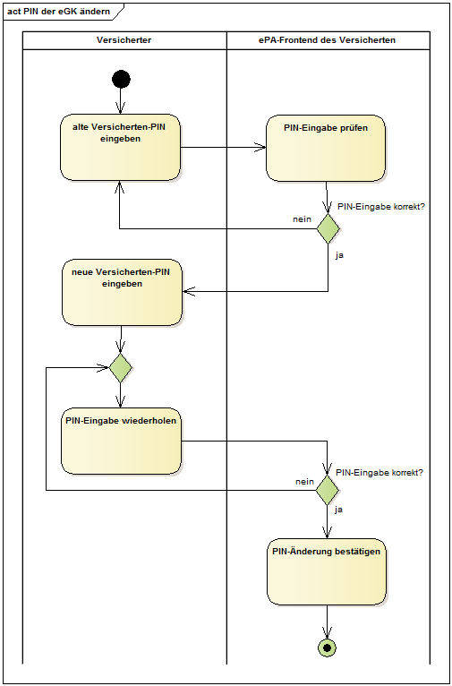
Abbildung 11: Aktivitätsdiagramm "PIN der eGK ändern"
Mit diesem Anwendungsfall kann der Nutzer den gesperrten PIN einer eGK mit der PUK entsperren.
A_15498-01
Das ePA-Frontend des Versicherten MUSS den Anwendungsfall "PIN der eGK entsperren" gemäß TAB_FdV_158 umsetzen.
Tabelle 64: TAB_FdV_158 – PIN der eGK entsperren
| Name |
PIN der eGK entsperren |
| Auslöser |
|
| Akteur |
Versicherter oder berechtigter Vertreter |
| Vorbedingung |
Die eGK des Nutzers ist im Kartenleser gesteckt. Die PIN der eGK (MRPIN.home) ist gesperrt. |
| Nachbedingung |
PIN des Versicherten wurde entsperrt. |
| Standardablauf |
Die Umsetzung ist in TAB_FdV_159 beschrieben
|
Tabelle 65: TAB_FdV_159 – Ablaufaktivitäten – PIN der eGK entsperren
| 1. PL_TUC_CARD_UNBLOCK_PIN aufrufen |
|
| Plattformbaustein |
PL_TUC_CARD_UNBLOCK_PIN |
| Eingangsdaten |
|
| Identifikator |
MRPIN.home |
| Benutzerhinweis am Kartenterminaldisplay (Sicherheitsklasse 3) bzw. im FdV-Benuzterinterface bei Aufruf der Umgebungsoperation ENV_TUC_SECRET_INPUT |
PUK: "Eingabe PUK: " bzw. Neue PIN: "Eingabe neue PIN: " |
| Beschreibung |
Für das Entsperren der PIN wird ein Plattformbaustein genutzt. |
| 2. PL_TUC_CARD_UNBLOCK_PIN Ergebnis verarbeiten |
|
| Rückgabedaten |
|
| OK |
PIN wurde entsperrt. |
| PasswordBlocked |
Die PUK wurde wegen zu häufiger Nutzung gesperrt. Der Versicherte muss darüber in verständlicher Form informiert und auf die Notwendigkeit einer neuen eGK hingewiesen werden. |
| Weitere Fehlerfälle |
Siehe Beschreibung PL_TUC_CARD_UNBLOCK_PIN |
| Beschreibung |
Das Entsperren einer PIN auf der eGK basiert auf dem parametrierten Plattformbaustein PL_TUC_CARD_UNBLOCK_PIN. Zum Entsperren muss zwingend die Eingabe einer PUK erfolgen. Wird durch den Versicherten ein falsches PUK-Geheimnis eingegeben, wird die verbleibende Anzahl der Eingabeversuche bis zur Sperrung des PUKs zurückgemeldet. Im Fehlerfall wird eine Fehlermeldung mit entsprechenden Details zurückgegeben. |
| 3. Ergebnis anzeigen |
|
| Hinweis an den Versicherten |
Die Rückgabedaten des Plattformbausteins enthalten Informationen über den Erfolg der Operation auf der eGK des Versicherten. Im Fehlerfall wird der Versicherte in verständlicher Form über den Fehler informiert. Im Erfolgsfall ist dem Versicherten eine Bestätigung zur Anzeige zu bringen. Falls eine Warnung aufgetreten ist, wird diese dem Versicherten in verständlicher Form angezeigt. |
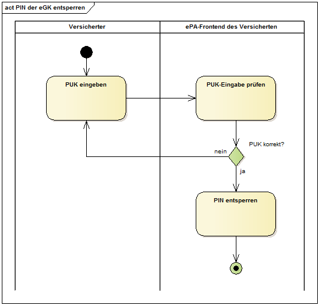
Abbildung 12: Aktivitätsdiagramm "PIN der eGK entsperren"
Um ein Gerät mit dem FdV für den Zugriff auf ein Aktenkonto zu autorisieren, muss der Nutzer dieses über einen separaten Benachrichtigungskanal (E-Mail mit Freischalt-Link) bestätigen. Die E-Mail wird an die im Aktenkonto hinterlegte Benachrichtigungsadresse des Nutzers gesendet.
Für den Aktenkontoinhaber wird die Benachrichtigungsadresse initial im Rahmen der Kontoeröffnung hinterlegt. Für Vertreter erfolgt die initiale Hinterlegung der Benachrichtigungsadresse während der Vergabe der Zugriffsberechtigung.
Der Anwendungsfall "Benachrichtigungsadresse für Geräteautorisierung aktualisieren" gibt dem Nutzer die Möglichkeit eine neue Benachrichtigungsadresse im Aktenkonto zu hinterlegen.
A_15499
Das ePA-Frontend des Versicherten MUSS es dem Nutzer ermöglichen, eine Benachrichtigungsadresse für die Geräteautorisierung einzugeben. <=
A_15500-01
Das ePA-Frontend des Versicherten MUSS das Hinterlegen der Benachrichtigungsadresse im ePA-Aktensystem gemäß TAB_FdV_160 umsetzen.
Tabelle 66: TAB_FdV_160 – Benachrichtigungsadresse aktualisieren
| I_Authorization_Management_Insurant:: putNotificationInfo Request erstellen |
Eingangsparameter:
|
| I_Authorization_Management_Insurant:: putNotificationInfo Response verarbeiten |
Http OK ohne SOAP-Response oder gematik Fehlermeldung |
Bei der Einrichtung eines Vertreters wird dessen Benachrichtigungsadresse im AS hinterlegt. Die Schnittstelle GetNotificationInfo wird durch den Versicherten dafür genutzt, diese Benachrichtigungsadresse vom AS abfragen zu können, insbesondere im Rahmen des Aktenwechsels oder zur Prüfung, ob eine Korrektur der Benachrichtigungsadresse des Vertreters erforderlich ist.
A_21254-02
Das ePA-Frontend des Versicherten MUSS das Abfragen einer Benachrichtigungsadresse im ePA-Aktensystem gemäß TAB_FdV_161 Benachrichtigungsadresse abfragen umsetzen
| I_Authorization_Management_Insurant:: getNotificationInfo Request erstellen |
Eingangsparameter:
|
| I_Authorization_Management_Insurant:: getNotificationInfo Response verarbeiten |
NotificationInfoList = Liste der abgefragten Benachrichtigungskanäle (ActorID, Benachrichtigungsadresse) oder gematik Fehlermeldung |
Der Produkttyp ePA-Frontend des Versicherten realisiert die von den Fachanwendungen benötigten Leistungen der TI-Plattform, die in den fachlichen Anwendungsfällen der ePA genutzt werden. Die durch die TI-Plattform bereitgestellten Leistungen umfassen einen für die Fachanwendungen einheitlichen Zugriff auf die eGK des Versicherten, Leistungen der PKI der Telematikinfrastruktur, kryptographische Operationen, etc. die in übergreifenden Spezifikationen der gematik festgelegt sind. Die Definition der Leistungen der TI-Plattform im ePA-Frontend des Versicherten finden sich in [gemSpec_Systemprozesse_dezTI].
Das ePA-Frontend des Versicherten verwendet u.a. die in der Tabelle TAB_FdV_177 dargestellten Plattformleistungen.
Tabelle 67: TAB_FdV_177 – Verwendete Plattformleistungen
| Kürzel |
Bezeichnung |
|---|---|
| PL_TUC_CARD_CHANGE_PIN |
PIN ändern |
| PL_TUC_CARD_INFORMATION |
Gesammelte Statusinformationen zu einer Karte |
| PL_TUC_CARD_UNBLOCK_PIN |
PIN mit PUK entsperren |
| PL_TUC_CARD_VERIFY_PIN |
Benutzer verifizieren |
| PL_TUC_GET_CHALLENGE |
Auslesen einer Zufallszahl |
| PL_TUC_PKI_VERIFY_CERTIFICATE | Prüfung eines Zertifikats der TI |
| PL_TUC_SIGN_HASH_nonQES |
mit Karten-Identität signieren |
| PL_TUC_SYMM_DECIPHER |
Symmetrisch entschlüsseln |
| PL_TUC_SYMM_ENCIPHER |
Symmetrisch verschlüsseln |
In den folgenden Abschnitten wird festgelegt, wie umgebungsspezifische Operationen an der Schnittstelle zu den Leistungen der TI-Plattform umgesetzt werden sollen.
Der hier beschriebene Produkttyp ePA-Frontend des Versicherten ist als reines Softwareprodukt konzipiert. Als solches muss das ePA-Frontend des Versicherten eine Schnittstelle zur eGK über ein Kartenterminal herstellen. Diese Schnittstelle muss die von den Plattformprozessen erzeugten, kartenverständlichen APDUs an die Karte übertragen und wird im Folgenden als ENV_TUC_CARD_APDU_TRANSPORT bezeichnet. Neben proprietären Schnittstellentreibern von Kartenterminalherstellern existieren eine Reihe standardisierter Schnittstellen, die auch von verschiedenen Betriebssystemen zur Anbindung handelsüblicher Kartenterminals unterstützt werden.
A_15501-01
Das ePA-Frontend des Versicherten SOLL eine Transportschnittstelle für die Übertragung von SmartCard-APDUs gegen die Standards CT-API und PCSC implementieren. <=
Von der Anforderung A_15501-* darf abgewichen werden, wenn die Umsetzung technisch nicht möglich ist (bspw. durch die fehlende Unterstützung der NFC-Schnittstelle bei Herstellern mobiler Endgeräte).
Das ePA-Frontend des Versicherten kann ergänzend eine Transportschnittstelle für die Übertragung von SmartCard-APDUs auf Basis des SICCT-Protokolls, gegen den Standard CCID oder gegen proprietäre Hardwaretreiber eines Kartenterminalherstellers implementieren.
A_15502
Der Hersteller des ePA-Frontend des Versicherten MUSS im Handbuch ausweisen, welche Standards und Schnittstellen zu Kartenterminals sein Produkt unterstützt und MUSS eine Liste mit handelsüblichen Kartenterminals angeben, die mit seinem Produkt funktionieren. <=
Es können Kartenterminalvarianten der Sicherheitsklassen 1 (reine Kontaktiereinheit) zum Einsatz kommen. Es sollen bevorzugt Kartenterminalvarianten der Sicherheitsklassen 2 (Kartenterminal mit eigenem PIN-Pad) oder 3 (PIN-Pad plus Display) verwendet werden. Zusätzlich ist die Ausstattung des eingesetzten Kartenterminals (Klasse 1, 2 oder 3) mit einer NFC-Schnittstelle möglich. Das ePA-Frontend des Versicherten muss die von den Varianten gebotenen Features geeignet nutzen.
A_21828
Das ePA-Frontend des Versicherten für Desktop-Plattformen MUSS es dem Nutzer ermöglichen, das ePA-Frontend des Versicherten mit einem Kartenleser einer höheren Sicherheitsklasse als Sicherheitsklasse 1 (Sicherheitsklasse 2 oder höher) zu nutzen <=
A_15503
Das ePA-Frontend des Versicherten DARF ein eingegebenes PIN-Geheimnis NICHT temporär und NICHT persistent speichern. <=
A_15504-01
Das ePA-Frontend des Versicherten und das ePA-Frontend des Versicherten MÜSSEN sicherstellen, dass das eingegebene PIN-Geheimnis ausschließlich an die Karte und nicht an andere Adressaten übermittelt wird. <=
Das temporäre Speichern bezieht sich bei der Verwendung eines Kartenterminals der Sicherheitsklasse 1 auf das Verwenden der PIN über den Anwendungsfall hinaus, für den die PIN-Eingabe erfolgt ist, z.B. Caching während einer Sitzung. Gelangt das ePA-Frontend des Versicherten bei der Verwendung eines Kartenterminals der Sicherheitsklassen 2 und 3 ggfs. durch Fehlkonfiguration in Kenntnis der PIN, darf es diese ebenfalls weder temporär noch persistent speichern.
Kartenterminals der Sicherheitsklasse 1 verfügen über keine Sicherheitsmerkmale, sie sind eine reine Kontaktiereinheit einer SmartCard. Sämtliche Geheimnis-Eingaben und Hinweistext-Ausgaben müssen über das FdV mittels Bildschirm und Tastatur/Maus erfolgen.
A_21829
Falls das ePA-Frontend des Versicherten für Desktop-Plattformen mit einem Kartenleser der Sicherheitsklasse 1 genutzt wird, MUSS das ePA-Frontend des Versicherten für Desktop-Plattformen den Nutzer in einer für den Nutzer verständlichen Form darauf hinzuweisen,
A_15505-01
Das ePA-Frontend des Versicherten MUSS, wenn ein Kartenterminal der Sicherheitsklasse 1 verwendet wird, die PIN-/PUK-Eingabe über ein angeschlossenes Eingabegerät entgegennehmen und in ein an die Karte adressiertes Kommando einbetten. <=
A_15506
Das ePA-Frontend des Versicherten DARF, wenn ein Kartenterminal der Sicherheitsklasse 1 verwendet wird, die eingegebene PIN/PUK Ziffernfolge NICHT im Klartext auf dem Bildschirm darstellen. <=
A_15507
Das ePA-Frontend des Versicherten MUSS, wenn ein Kartenterminal der Sicherheitsklasse 1 verwendet wird, ein eingegebenes Zeichen einer Geheimniseingabe mit dem Zeichen "*" (Wildcard) quittieren. <=
A_15508-01
Das ePA-Frontend des Versicherten MUSS, wenn das Geheimnis durch einen Anwendungsfall geändert werden soll und wenn ein Kartenterminal der Sicherheitsklasse 1 verwendet wird, ein eingegebenes, neues PIN-Geheimnis durch eine erneute Abfrage des neuen PIN-Geheimnisses verifizieren. <=
Kartenterminals der Sicherheitsklasse 2 verfügen über eine Eingabeschnittstelle zur Eingabe eines Benutzergeheimnisses. Typischerweise werden Kartenterminals der Sicherheitsklasse 2 in Anwendungsfällen mit Eingabe einer PIN bzw. PUK so angesteuert, dass das vorbereitete Kartenkommando mit einem Platzhalter des PIN-Geheimnisses an das Kartenterminal geschickt wird. Das Kartenterminal nimmt die PIN über die Eingabeschnittstelle entgegen, ersetzt den Platzhalter durch das eingegebene Geheimnis und leitet das Kartenkommando anschließend weiter an die Karte.
A_15509-01
Das ePA-Frontend des Versicherten MUSS ein angeschlossenes Kartenterminal der Sicherheitsklasse 2 so ansteuern, dass ein Kartenkommando, das eine PIN-/PUK-Eingabe erfordert, an einem Kartenterminal um die Benutzereingabe ergänzt und anschließend direkt an die adressierte Karte weitergeleitet wird. <=
A_15510-01
Das ePA-Frontend des Versicherten MUSS alle Operationen mit einer eindeutigen Fehlermeldung abbrechen, in denen es die Kenntnis eines PIN/PUK-Geheimnisses erlangt, nachdem dieses an einem PIN-Pad eines Kartenterminals der Sicherheitsklasse 2 eingegeben wurde. <=
A_15511
Das ePA-Frontend des Versicherten MUSS während der Abfrage einer PIN/PUK an einem Kartenterminal der Sicherheitsklasse 2 einen Benutzerhinweis zur PIN-Eingabe am Kartenterminal an der Bildschirmausgabe ausgeben. <=
Kartenterminals der Sicherheitsklasse 3 verfügen über eine Eingabeschnittstelle zur Eingabe eines Benutzergeheimnisses und Ausgabeschnittstelle zur Anzeige kurzer Textmeldungen. Typischerweise werden Kartenterminals der Sicherheitsklasse 3 in Anwendungsfällen mit Eingabe einer PIN bzw. PUK so angesteuert, dass das vorbereitete Kartenkommando mit einem Platzhalter des PIN-Geheimnisses an das Kartenterminal geschickt wird. Das Kartenterminal nimmt die PIN über die Eingabeschnittstelle entgegen, ersetzt den Platzhalter durch das eingegebene Geheimnis und leitet das Kartenkommando anschließend weiter an die Karte.
Während des Wartens auf eine Benutzereingabe kann ein an das Kartenterminal übergebener Text angezeigt werden. Einzelne Eingaben durch einen Benutzer werden in der Regel durch das Zeichen "*" quittiert. Ebenso besitzen Kartenterminals der Sicherheitsklasse 3 meist zusätzliche Logik, z.B. Eingaben zu verifizieren (siehe Anforderungen zum Ändern einer PIN mittels Klasse 1-Kartenterminal). Auf diese Logik soll hier nicht weiter eingegangen werden.
A_15512-01
Das ePA-Frontend des Versicherten MUSS ein angeschlossenes Kartenterminal der Sicherheitsklasse 3 so ansteuern, dass ein Kartenkommando, das eine PIN-/PUK-Eingabe erfordert, an einem Kartenterminal um die Benutzereingabe ergänzt und anschließend direkt an die adressierte Karte weitergeleitet wird. <=
A_15513-01
Das ePA-Frontend des Versicherten MUSS alle Operationen mit einer eindeutigen Fehlermeldung abbrechen, in denen es die Kenntnis eines PIN/PUK-Geheimnisses erlangt, nachdem dieses an einem PIN-Pad eines Kartenterminals der Sicherheitsklasse 3 eingegeben wurde. <=
A_15514-01
Das ePA-Frontend des Versicherten MUSS während der Abfrage einer PIN/PUK an einem Kartenterminal der Sicherheitsklasse 3 einen Benutzerhinweis zur PIN-Eingabe am Display des Kartenterminals ausgeben. <=
Die Anzeige eines Benutzerhinweises soll den Nutzer informieren zu welchem Zweck eine Eingabe getätigt (z.B. alte PIN, neue PIN im Anwendungsfall PIN ändern) und welches konkrete Geheimnis abgefragt werden soll (PIN, PUK).
Anwendungsfälle zur PIN-Verwaltung, das Login sowie weitere Anwendungsfälle können die Eingabe eines PIN- oder PUK-Geheimnisses durch den Versicherten erfordern. Der Zugriff auf die eGK erfolgt über die Systemprozesse PL_TUC_CARD_*. Das FdV als Realisierungsumgebung der Systemprozesse muss ihrerseits die von der Plattform geforderten Schnittstellen ENV_TUC_CARD_SECRET_INPUT implementieren, um die Kommunikation der Plattform mit dem Nutzer über die Außenschnittstelle des FdV zu ermöglichen. Die Außenschnittstelle ist in Kapitel "6.3.1 Transportschnittstelle für Kartenkommandos" beschrieben und umfasst das Kartenterminal, Eingabemedium und Hinweistexte an den Nutzer. Diese kann je nach Konfiguration an einem Gerät als Kartenterminal der Sicherheitsklasse 3 oder auch eine Kombination aus Bildschirmausgabe, Kartenterminal-PIN-Pad und/oder Tastatureingabe erfolgen.
A_15515-01
Das ePA-Frontend des Versicherten MUSS eine Operation ENV_TUC_SECRET_INPUT zur Eingabe eines PIN/PUK-Geheimnisses und Weiterleitung an eine SmartCard mit den Parametern
A_15516-01
Das ePA-Frontend des Versicherten MUSS die Abbildung der Eingangsparameter auf die Rückgabewerte der Operation ENV_TUC_SECRET_INPUT derart umsetzen, dass
A_15517-01
Das ePA-Frontend des Versicherten DARF ein Kartenkommando NICHT an eine angebundene Karte weiterleiten, dass nicht explizit im Kontext eines Anwendungsfalls (intendierte Kartenoperationen und Erhöhen des Sicherheitszustands der Karte falls erforderlich) erforderlich ist. <=
Für das Zulassungsverfahren des ePA-Frontend des Versicherten muss eine Anwendung (Test-App) mit integriertem ePA-Frontend des Versicherten bereitgestellt werden. Um einen automatisierten Test für das ePA-Frontend des Versicherten zu ermöglichen, muss die Test-App zusätzlich ein Testtreiber-Modul beinhalten, welcher die Funktionalitäten der produktspezifischen Schnittstelle des ePA-Frontend des Versicherten über eine standardisierte Schnittstelle von außen zugänglich macht und einen Fernzugriff ermöglicht.
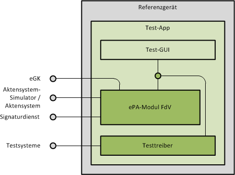
Abbildung 13: Test-App mit ePA-Frontend des Versicherten und Testtreiber
A_18044-01
Die Test-App des ePA-Frontend des Versicherten MUSS ein Testtreiber-Modul beinhalten, welches die Schnittstellen I_FdV und I_FdV_Management anbietet. Das Testtreiber-Modul MUSS die durch das ePA-Frontend des Versicherten – dem Zulassungsgegenstand – über eine produktspezifische Schnittstelle angebotene Funktionalität nutzen, um die Operationen der Schnittstellen umzusetzen. <=
Das Testtreiber-Modul darf die Ausgaben des ePA-Frontend des Versicherten gemäß der technischen Schnittstelle aufarbeiten, aber darf die Inhalte nicht verfälschen.
A_18171
Das Testtreiber-Modul DARF NICHT die fachliche Logik des ePA-Frontend des Versicherten umsetzen. <=
Der Einsatz des Testtreiber-Moduls ist auf das Zulassungsverfahren in Test-Apps beschränkt und darf nicht in Wirkbetriebs-Apps genutzt werden.
A_18071
Das Frontend des Versicherten DARF ein Testtreiber-Modul NICHT enthalten. <=
Die Test-App kann eine GUI anbieten. Diese kann bspw. für die Eingabe der PIN/PUK für die eGK oder die Authentifizierung gegenüber dem Signaturdienst genutzt werden.
Die Test-App muss Fehler, welche von aufgerufenen Systemen gemeldet werden oder bei der internen Verarbeitung auftreten, auf produktspezifische Fehler mappen. Der Hersteller muss die Fehler in der Betriebsdokumentation beschreiben und in einem strukturierten, maschinell verarbeitbarem Dokument übermitteln.
Wenn der Testtreiber einen Eingangsparameter an der Schnittstelle zum ePA-Frontend des Versicherten nicht benötigt, dann kann der Parameter ignoriert werden.
Alle Operationen beinhalten Parameter mit den notwendigen Informationen für ein Login. Diese sollen für ein implizites Login genutzt werden, wenn zu der insurantId noch keine Aktensession besteht.
Die Test-App muss bei Implementierung eines an ein ePA-Aktensystem gekoppeltes FdV sicherstellen, dass im Rahmen von gematik-Tests die Parameter für die Identifikation des zu nutzenden ePA-Aktensystems konfiguriert werden können.
Um Zugriffe aus einer Webanwendung, wie sie durch das AKTOR-Testfrontend zur Verfügung gestellt wird, auf die Testtreiberschnittstelle zu ermöglichen, werden folgende Schnittstelleneigenschaften benötigt:
Die Test-App kann die Testtreiberschnittstelle so über TLS zur Verfügung stellen, dass ein Zugriff aus Webanwendungen ermöglicht wird, die selbst über TLS geladen wurden.
Die Test-App kann den Zugriff auf die Testtreiberschnittstelle durch das Setzen von CORS-Headern für den Zugriff aus Webanwendungen öffnen, die aus einer anderen Origin geladen wurden.
Die konkrete Ausgestaltung der Schnittstellen [gemTestTreiberFdV] ist im Fachportal der gematik und in GitHub vefügbar.
Aktenkonto:
| Datenfeld |
Herkunft |
Beschreibung |
|---|---|---|
| Akten-ID (RecordIdentifier) |
Konfiguration |
beinhaltet Versicherten-ID und Anbieter-ID (homeCommunityId) |
| Name des Aktenkontoinhabers |
Konfiguration |
|
| FQDN des ePA-Aktensystem |
Konfiguration |
Geräte-Daten:
| Datenfeld |
Herkunft |
Beschreibung |
|---|---|---|
| Gerätekennung (DeviceID) |
Konfiguration |
beinhaltet Gerätenamen und Geräteidentität |
| Geräteidentität |
Konfiguration |
wird von der Autorisierung beim erstmaligen Aufruf zusammen mit dem DEVICE_UNKNOWN Fehler übermittelt |
| Gerätenamen |
Konfiguration |
durch Nutzer festgelegt |
Session-Daten:
| Datenfeld |
Herkunft |
Beschreibung |
|---|---|---|
| Akten-ID (RecordIdentifier) |
Konfiguration |
Kennung des Aktenkontos, auf das in der Aktensession zugegriffen wird, im Format von RecordIdentifier gemäß [gemSpec_DM_ePA#2.2] Die homeCommunityID muss bekannt sein. |
| Status Nutzer (Aktenkontoinhaber oder Vertreter) |
Vergleich Versicherten-ID aus Akten-ID mit Versicherten-ID aus Authentisierungszertifikat des Nutzers |
|
| Authentisierungstoken (AuthenticationAssertion) |
Komponente Authentisierung (I_Authentication_Insurant::LoginCreateToken) |
|
| Autorisierungstoken (AuthorizationAssertion) |
Komponente Autorisierung (I_Authorization_Insurant::getAuthorizationKey) |
|
| Aktenschlüssel (RecordKey) |
AuthorizationKey |
entschlüsselter Aktenschlüssel |
| Kontextschlüssel (ContextKey) |
AuthorizationKey |
entschlüsselter Kontextschlüssel |
| Zustand des Aktenkontos (RecordState) |
Autorisierungstoken Attribut Assertion/AttributeStatement/Attribute mit dem Namen "Zustand des Kontos" |
|
| Zeitpunkt der letzten Authentifizierung durch den Nutzer |
Konfiguration |
|
| Liste der vergebenen Berechtigungen |
Aktivität "Vergebene Berechtigungen bestimmen" |
Liste der für alle Berechtigungen ausgelesenen AuthorizationKeys und Policy Documents |
Nutzer:
| Datenfeld |
Herkunft |
Beschreibung |
|---|---|---|
| Authentisierungszertifikat des Nutzers |
eGK für alternative kryptographische Versichertenidentität: Signaturdienst |
falls eGK: C.CH.AUT falls alternative kryptographische Versichertenidentität: C.CH.AUT_ALT |
| Name des Nutzers |
Authentisierungszertifikat des Nutzers |
|
| Versicherten-ID des Nutzers |
Authentisierungszertifikat des Nutzers |
|
| Benachrichtigungskanal für Geräteverwaltung (E-Mail) |
durch den Nutzer während des Eröffnens des Aktenkontos angegeben. |
Berechtigungen:
| Datenfeld |
Herkunft |
Beschreibung |
|---|---|---|
| Name des Berechtigten |
DisplayName aus AuthorizationKey |
|
| Kategorie |
Policy Document |
LEI, DiGA, KTR oder Vertreter |
| ID |
AuthorizationKey / Policy Document |
für LEI, DiGA oder KTR: Telematik-ID für Vertreter: Versicherten-ID |
| Berechtigung gültig bis |
Policy Document |
LEI, DiGA, KTR, Vertreter |
| Berechtigung für LEI |
PolicyDocument mit "urn:gematik:policy:2.0:<record-id>:lei:<telematik-id>" |
LEI |
| Berechtigung für KTR |
Policy Document mit "urn:gematik:policy:2.0:<record-id>:ktr:<telematik-id>" |
KTR |
| Berechtigung für Vertreter |
Policy Document mit "urn:gematik:policy:2.0:<record-id>:rep:<kvnr>" |
Vertreter |
| Berechtigung für DiGA | Policy Document mit "urn:gematik:policy:2.0:<record-id>:diga:<telematik-id>" | DiGA |
Eine Darstellung der hardwareseitigen Verteilung des Produkttyps bzw. seiner Teilsysteme und der Einbettung in die physikalische Umgebung wird nicht benötigt.
| Kürzel |
Erläuterung |
|---|---|
| AN | Arbeitsnummer |
| DiGA | Digitale Gesundheitsanwendung |
| DSMLv2 | Directory Services Markup Language v2.0 |
| eGK |
Elektronische Gesundheitskarte |
| ePA |
Elektronische Patientenakte |
| FDZ | Forschungsdatenzentrum |
| FdV |
ePA-Frontend des Versicherten |
| FQDN |
Fully-Qualified Domain Name |
| GdV |
Gerät des Versicherten |
| IHE |
Integrating the Healthcare Enterprise |
| KTR |
Kostenträger |
| KVNR |
Krankenversichertennummer |
| LE |
Leistungserbringer |
| LEI |
Leistungserbringerinstitution |
| LP | Lieferpseudonym |
| MTOM |
Message Transmission Optimization Mechanism |
| NFC |
Near Field Communication |
| OWASP |
Open Web Application Security Project |
| pD | pseudonymisierte Dokumente des Versicherten (strukturierte Dokumente, auf welche das Pseudonymisierungsschema angewendet wurde) |
| pDenc | pseudonymisierte Dokumente, Ende-zu-Ende verschlüsselt für das Forschungsdatenzentrum |
| PDF |
Portable Document Format |
| PIN |
Personal Identification Number |
| Pseudonymisierungs-schablone, Pseudonymisierungs-vorgaben | MIO-, bzw. FHIR-Profil-spezifische Auflistung aller möglichen Elemente, welche in eine pseudonyme Repräsentation übernommen werden können, jeweils definiert als Fhir-Path-Angabe |
| PUK |
Personal Unblocking Key |
| SGD |
Schlüsselgenerierungsdienst |
| SOAP |
Simple Object Access Protocol |
| TI |
Telematikinfrastruktur |
| TLS |
Transport Layer Security |
| TSL |
Trust-service Status List |
| VST | Vertrauensstelle |
| VZD |
Verzeichnisdienst der TI |
| Begriff |
Erläuterung |
|---|---|
| Funktionsmerkmal |
Der Begriff beschreibt eine Funktion oder auch einzelne, eine logische Einheit bildende Teilfunktionen der TI im Rahmen der funktionalen Zerlegung des Systems. |
| Patienteninformation |
Ist ein durch eine Leistungserbringerinstitution im Aktenkonto bereitgestelltes Dokument, welches vorrangig der Information von Versicherten dient. Das Dokument wird durch den Leistungserbringer als Versicherteninformation gekennzeichnet. |
| Policy Document |
Das Policy Document ist ein technisches Dokument. Es enthält die Zugriffsregeln eines Berechtigten im Aktenkonto des Versicherten in der Komponente "Dokumentenverwaltung". Berechtige der Aktenkontoinhaber, Vertreter oder LEIs. |
| Versicherten-ID |
Die Versicherten-ID ist der 10-stellige unveränderliche Teil der 30-stelligen Krankenversichertennummer (KVNR). |
| Versichertendokument |
Ist ein durch einen Versicherten (Aktenkontoinhaber oder Vertreter) im Aktenkonto bereitgestelltes Dokument |
| Versicherteninformation |
siehe Patienteninformation |
Das Glossar wird als eigenständiges Dokument, vgl. [gemGlossar] zur Verfügung gestellt.
Die nachfolgende Tabelle enthält die Bezeichnung der in dem vorliegenden Dokument referenzierten Dokumente der gematik zur Telematikinfrastruktur.
| [Quelle] |
Herausgeber: Titel |
|---|---|
| [gemGlossar] |
gematik: Einführung der Gesundheitskarte - Glossar |
| [gemSpec_Aktensystem] |
gematik: Spezifikation ePA-Aktensystem |
| [gemSpec_Authentisierung_Vers] |
gematik: Spezifikation Authentisierung des Versicherten ePA |
| [gemSpec_Autorisierung] |
gematik: Spezifikation Autorisierung ePA |
| [gemSpec_DM_ePA] |
gematik: Datenmodell ePA |
| [gemSpec_Dokumentenverwaltung] |
gematik: Spezifikation Dokumentenverwaltung ePA |
| [gemSpec_Krypt] |
gematik: Übergreifende Spezifikation Verwendung kryptographischer Algorithmen in der Telematikinfrastruktur |
| [gemSpec_OID] | gematik: Spezifikation Festlegung von OIDs |
| [gemSpec_OM] |
gematik: Übergreifende Spezifikation Operations und Maintenance |
| [gemSpec_PKI] |
gematik: Übergreifende Spezifikation Spezifikation PKI |
| [gemSpec_SGD_ePA] |
gematik: Spezifikation Schlüsselgenerierungsdienst ePA |
| [gemSpec_SigD] |
gematik: Spezifikation Signaturdienst |
| [gemSpec_Systemprozesse_dezTI] |
gematik: Spezifikation Systemprozesse der dezentralen TI |
| [gemSpec_TSL] |
gematik: Spezifikation TSL-Dienst |
| [gemSpec_X_509_TSP] |
gematik: Spezifikation Trust Service Provider X.509 |
| [gemSpec_Zugangsgateway_Vers] |
gematik: Spezifikation Zugangsgateway des Versicherten ePA |
| [gemSysL_ ePA] |
gematik: Systemspezifisches Konzept ePA |
| [gemTestTreiberFdV] | gematik: Testtreiber-Schnittstellen I_FDV und I_FDV_Management (src/openapi/testtreiber_fdv.yaml), https://github.com/gematik/api-ePA |
| [FD_Aufzeichnung_Schema] | gematik: researchDataSubmissionTrackingList.json, guideline_researchDataSubmissionTracking.adoc Json-Schema für das Dokument zur Aufzeichnung der Freigabe und des Widerrufs von Daten für Forschungszwecke, zzgl Anleitung. Version 1.0.1 GitHub: https://github.com/gematik/api-ePA Path: src/implementation_guides |
| [FD_Aufzeichnung] | gematik: ig-researchDataSubmissionTracking.json Implementation-Guide für das Dokument 'Aufzeichnungsliste' zur Aufzeichnung der Freigabe und des Widerrufs von Daten für Forschungszwecke in der Akte des Versicherten Version 1.0.0 GitHub: https://github.com/gematik/api-ePA Path: src/implementation_guides |
| [IG_MIO] | gematik: Implementation Guides für strukturierte Dokumente GitHub: https://github.com/gematik/api-ePA Path: src/implementation_guides |
| [I_Authorization_Token_Service] | gematik: I_Authorization_Insurant.yaml REST-Schnittstelle zur Ausstellung der Transporttoken für die Freigabe von Dokumenten für Forschungszwecke Version 1.0.0 GitHub: https://github.com/gematik/api-ePA Path: src/openapi |
| [Quelle] |
Herausgeber (Erscheinungsdatum): Titel |
|---|---|
| [DSML2.0] |
OASIS: Directory Services Markup Language v2.0 December 18, 2001 https://www.oasis-open.org/standards http://www.oasis-open.org/committees/dsml/docs/DSMLv2.doc http://oasis-open.org/committees/dsml/errata https://www.oasis-open.org/committees/dsml/docs/DSMLv2.xsd |
| [ETSI_TS_102_231_V3.1.2] |
ETSI TS 102 231 V3.1.2 (2009-12) Electronic Signatures and Infrastructures (ESI); Provision of harmonized Trust-service status information |
| [IHE-ITI-APPC] |
IHE International (2018): IHE IT Infrastructure (ITI) Technical Framework Supplement, Advanced Patient Privacy Consents (APPC), Revision 1.2 – Trial Implementation, http://www.ihe.net/uploadedFiles/Documents/ITI/IHE_ITI_Suppl_APPC.pdf |
| [IHE-ITI-TF] | IHE International (2018): IHE IT Infrastructure (ITI) Technical Framework, Revision 15.0 |
| [IHE-ITI-TF2a] |
IHE International (2018): IHE IT Infrastructure (ITI) Technical Framework, Volume 2a (ITI TF-2a) – Transactions Part A, Revision 15.0, http://www.ihe.net/uploadedFiles/Documents/ITI/IHE_ITI_TF_Vol2a.pdf |
| [IHE-ITI-TF2b] |
IHE International (2018): IHE IT Infrastructure (ITI) Technical Framework, Volume 2b (ITI TF-2b) – Transactions Part B, Revision 15.0, http://www.ihe.net/uploadedFiles/Documents/ITI/IHE_ITI_TF_Vol2b.pdf |
| [IHE-ITI-TF2x] |
IHE International (2018): IHE IT Infrastructure (ITI) Technical Framework, Volume 2x (ITI TF-2x) – Volume 2 Appendices, Revision 15.1, http://www.ihe.net/uploadedFiles/Documents/ITI/IHE_ITI_TF_Vol2x.pdf |
| [IHE-ITI-RMD] | IHE International (2018): IHE IT Infrastructure (ITI) Technical Framework Supplement, Remove Metadata and Documents (RMD), Revision 1.2 – Trial Implementation https://www.ihe.net/uploadedFiles/Documents/ITI/IHE_ITI_Suppl_RMD.pdf |
| [MTOM] |
W3C (2005): SOAP Message Transmission Optimization Mechanism, https://www.w3.org/TR/soap12-mtom/ |
| [OWASP Proactive Control] |
OWASP Top Ten Proactive Controls Project OWASP Proactive Controls For Developers v3.0 https://www.owasp.org/images/b/bc/OWASP_Top_10_Proactive_Controls_V3.pdf |
| [OWASP SAMM Project] |
OWASP SAMM Project https://www.owasp.org/index.php/OWASP_SAMM_Project#tab=Browse_Online |
| [OWASPMobileTop10] |
OWASP Mobile Security Project: Top 10 Mobile Risks https://owasp.org/www-project-mobile-top-10/ |
| [OWASP MASVS] | OWASP Mobile Application Security Verification Service https://owasp.org/www-chapter-geneva/assets/slides/OWASP_Geneva-Chapter_Meeting-20161212_Jeremy_Matos-MASVS.pdf |
| [OWASP TTMC] | OWASP Mobile Security Project https://owasp.org/www-project-mobile-security/ |
| [RFC6960] |
RFC 6960 (Juni 2013): X.509 Internet Public Key Infrastructure Online Certificate Status Protocol - OCSP https://tools.ietf.org/html/rfc6960 |
| [vesta] |
Zentrales Interoperabilitätsverzeichnis des deutschen Gesundheitswesens https://www.vesta-gematik.de/ |
| [WSIBP] |
Web-Services Interoperability Consortium (2010): WS-I Basic Profile V2.0 (final material), http://ws-i.org/Profiles/BasicProfile-2.0-2010-11-09.html |
| [XMLEnc-1.1] |
XML Encryption Syntax and Processing, W3C Recommendation 11 April 2013, http://www.w3.org/TR/xmlenc-core1/ |
| [NGP] | Schnittstelle des Nationalen Gesundheitsportal (gesund.bund.de) gemäß search.gesund.bund.de/documentation/gematik/ |
| [I_VST] | "Vertrauensstelle DATRAV Pseudonymisierungskonzept zur Datenübertragung im Rahmen der Datenfreigabe aus der elektronischen Patientenakte (ePA Lieferpseudonym)" Robert Koch-Institut Version 1.5 14.04.2022 |
| [I_FDZ] | "Forschungsdatenzentrum - Schnittstellenkonzept zur Datenfreigabe ePA", Bundesamt für Arzneimittel und Medizinprodukte Version 1.0, xxx.04.2022 |
| [rfc7515] | "JSON Web Signature (JWS)" RFC 7515 IETF Mai 2015 |
| [rfc7519] | "JSON Web Token (JWT)" RFC 7519 IETF Mai 2015 |
| [rfc4122] | "A Universally Unique Identifier (UUID) URN Namespace" RFC 4122 IETF Julli 2005 |